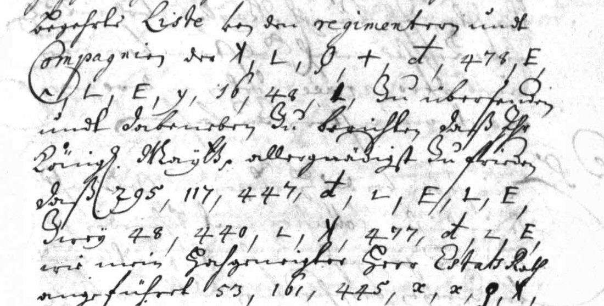

At a glanceCiphertext-only break · partial (78% of the cipher)
- The letters
- Outgoing letters of the secretary Conrad Biermann of the Danish German Chancery to Paul von Klingenberg, Danish plenipotentiary at The Hague: 24 in the copybook (6 February to 24 June 1675) and 3 drafts from the unit that follows it, 27 in all, plus 22 further passages of the drafts units (section 06). Clear German and cipher alternate inside the sentence.
- Where
- Rigsarkivet, Copenhagen, Tyske Kancelli, Udenrigske Afdeling, Almindelig del, Conrad Biermanns kopibog over udgående skrivelser til danske ministre i udlandet, 1675 (unit S-1418; Arkivalieronline images 43–256), and the Koncepter unit “1675–76 Koncepter til Skrivelser fra Conrad Biermann, 1675 Juli–Sept” (images 267–280). Unsolved Catalogue no. 465, narrowed to the letters still unread. No DECODE record.
- The cipher
- Three layers inside one word: 29 letter signs; a syllable table in alphabetical order, 432–525; and numbers for words, names and frequent word parts, of which 106 have a value in the final map. A different key from the one that reads Biermann’s letters to Høeg and Meyercron.
- How it was read
- By Malcolm McBratney, working with AI agents. Signs, syllables and word values were rebuilt from the letters themselves in four frozen maps; each count of record uses the map frozen before that letter was first decoded (by the contributor’s record). The intended words were written after decoding by the same model that built the key, and the transcriber knew the key.
- What it says
- The Scanian War in the spring of 1675: the King’s reply on the allies’ demand that he break with Sweden without subsidies for his fleet; lists of regiments and boatmen; the Elector of Brandenburg.
- Still open
- Word codes with no value; the sign for c against g in the drafts; sixteen letters used to build the key and not counted; the 22 further passages judged by a single model and with ten parked passages not shown; Klingenberg’s own papers, not checked.
- Credit
- Malcolm McBratney, working with AI agents (pull request #455, issue #424): key, transcriptions, readings. The copybook survey and image list from which the letters were chosen are in
targets/biermann1675(repository work, with Brice Dudout’s reading of the Høeg and Meyercron letters). Review corrected two numerals, the count of open codes and the syllable table. The 22 further passages and the blind second readings are pull request #490 (Malcolm McBratney, working with AI agents).
01 The letters
The copybook of 1675 is the chancery’s register of outgoing letters to the Danish ministers abroad. Its letters to Just Høeg at The Hague and to Meyercron in Paris are read with the key at image 55 of the chancery’s key volume; that work, in targets/biermann1675, is the repository’s and Brice Dudout’s. The German letters to Klingenberg use another key, and this page is its own entry for that reason: nothing here uses the image-55 key, and nothing claims those letters.
The 27 letters are the 24 Klingenberg letters of the copybook (images 43–256 of api.rigsarkivet.dk/ao/v1/images/<48573951+n>) and three drafts in Biermann’s own hand (images 267, 271–273 and 279–280 of the unit that follows). They were chosen from the copybook survey of targets/biermann1675.

02 The cipher
- Letter signs, one per letter. In the copybook hand c is a large double-barred sign (#) and g a small single-bar one (H).
- A syllable table, 432–525, in alphabetical order: a vowel row (432 a, 433 e, 434 a stop, 435 o, 436 u) and rows of five for b c f g h j k l m n p r s t v w z (437 ba to 525 zu). The d row has four: 447 de, 448 di, 449 do, 450 du; “da” is the word code 158. 446 is cu, tentative.
- Numbers 1–430: words, names and frequent word parts, in no order found. Map v4 gives 106 of them a value (78 ge, 117 be, 140 den, 295 die, 389 ver, 290 lich, 210 Schweden, 326 Churfürst); each value has its contexts in
evidence/.
The maps are v1 (50 values), v2 (54), v3 (78) and v4 (106). Each was frozen before the letters it was tested on (by the contributor’s record; what the time stamps show is said under “What was counted”). A decoder written from the key table alone gives the contributor’s decryption of the 4 May letter token for token (729 of 729; only the spelling auss/auß differs).
It is not the image-55 key of the Høeg and Meyercron letters: in the verifier’s comparison that key has two alphabets of signs and numbers 1–24, and its syllables run from 312 to 692 with French words between them; here the syllables are a compact block with a word code below it, and the plaintext is German. It is not, as it stands, the German sheet at images 94/95 either, which the repository’s key survey flagged as a partial fit (its declared null row is this sign set): that sheet gives 117 durch, 140 Envoyé Gioë, 200 Graf Waldeck and 224 Hie, where these letters give be, den, sein and das, and the frequent groups here fall on its blank slots. A sibling sheet of the same system is not excluded.
03 What was counted
A token is one cipher group. It counts as read only when it lies in a word whose groups decode letter for letter to the intended word (the model’s gloss, written after decoding), under a map frozen before that letter was first decoded. A code with no value in that map is never counted, whatever the context suggests.
| Letters | Map | Read | Of | Share |
|---|---|---|---|---|
| 4 May 1675 | v3 | 551 | 729 | 75.58% |
| 8, 11 May; 1, 5, 8, 12, 24 June (first decoded after v3 was frozen) | v3 | 2,006 | 2,524 | 79.48% |
| Three drafts, 28 June and July (first decoded after v4 was frozen) | v4 | 1,091 | 1,456 | 74.93% |
| All eleven | 3,648 | 4,709 | 77.47% |
Only the short letter of 1 June reaches 95% (90 of 94). The contributor’s “lenient” figures (a decode within one letter of the intended word, two for words of nine letters or more: 83.1% for 4 May, 90.8% for the drafts) are not shares read. Rerunning the contributor’s counter reproduces every line of its table.
Limits, all declared by the contributor and confirmed in review: the intended words were written after decoding by the model that built the key; the transcriber knew the key as it then stood; there is no blind second transcription of these eleven letters (the 22 further passages of section 06 have one); and the word values rest on context (each value of map v3 needed two independent contexts in the training letters, and the test is whether it decodes the later letters exactly). Counting only tokens in glossed words that decode from signs and syllables with no word code at all gives 1,334 of 4,709 (28.3%): that is the floor if no word value is allowed. The order of events is by the contributor’s record, with one outside fact: map v3 is in the first time-stamped manifest (11 November 2026, 21:08 GMT), before the seven later letters appear in any stamp (21:29), and map v4 is first stamped at 21:29, before the three drafts’ transcriptions (21:43). When the transcriptions were made is not shown by the stamps.
Controls: with the letter signs and syllables shuffled, none of 5,000 shuffled tables reached the real score (z 7.6); the word-code layer is weakly separated by a character model (shuffled word maps are still German words; z 3.1). The repository’s validation on the tokens read under the maps of record gives a pass (reading −2.093 per letter, random keys −4.316), run with a partial German corpus. These are language-fit tests, not proof of the word values.
04 The 4 May letter
The letter of 4 May is the one that was shown whole when the work was first reported. It builds German clauses across the whole letter, with holes in most sentences: “[?de] auß den aufgerichteten tractaten sich [?schwerlich] werde erzwingen lassen”; “schweden zu wasser der grosseste abbruch … ohne flotte nicht zu practicieren stehet”; and, near the end, a reference to the letter about signing the declaration of war on Sweden. The English is a translation made by a model, not checked by a German reader. The project’s verifier (a model check, not a person) compared 333 groups of this letter with the images; 331 agree. The two differences were numerals, both mended in the folder: line 83 has 447, not 441, and line 44 has 501, not 511 (probable).
“Flotte” (code 236) is an open code under map v3, the map of record for this letter, and is printed in the reading as a value of the later map v4; the first report had printed it unmarked.
Two more samples were compared with the images by the same verifier: 62 groups of the 1 June letter (image 209R) and 63 groups of the 28 June draft (image 267): all agree. The other letters have not been compared with the images.
05 The drafts
The three drafts are in Biermann’s own hand, not the clerk’s. In the copybook the signs for c and g are distinct and, on the reviewer’s sample, correctly transcribed. In the drafts the transcriber wrote every hash-like sign as c. After decoding, 96 failed tokens were found in words that differ from the intended word only by c where g is wanted. A what-if that turns them into g was made after decoding, by the judge, and is not quoted. The drafts stand at 1,091 of 1,456 until someone who does not know the intended words reads those glyphs again.
Pull request #490 adds a corrected pass on the three drafts (run b116): the hash-like signs were re-sorted by form alone, against a chart of twelve single-barred and twelve double-barred signs from the copybook hand, with the classification frozen at 05:43 GMT on 12 November, and the drafts decoded once more with map v4. That gives 1,181 of 1,456 tokens (81.1%). It is not the count of record, which stays 1,091 of 1,456 (74.93%): the classifier had read a note quoting the 81.5% what-if and the 96 tokens, it kept no ledger or gloss of the new decode, so the 1,181 cannot be recounted from the folder, and a blind re-reading with a ledger is still owed. A later blind reader found single-barred signs written as c in other drafts of the same hand family (section 06).
06 The 22 further passages
Pull request #490 (Malcolm McBratney, working with AI agents) adds 22 further passages of the two drafts units, 18 in unit 260195 and 4 in unit 260196, filed on issue #424. They are set out here apart from the eleven letters and are not added to the count of record above, which stays 3,648 of 4,709 tokens (77.47%). Each passage was transcribed once by the first reader (the model that built the key, not blind), decoded once under map v4, which these passages did not change, and judged word by word after decoding; a second, blind reader transcribed all 22 again. None reaches 95%, so every one is read in part. The passages have a decode and a German word-by-word gloss, not a reading file or an English translation.
| Passage (unit images) | Date | First reader, word units | First reader, tokens | Tokens with no word code | Blind reader, word units | Content already in print |
|---|---|---|---|---|---|---|
| 260195 44–46 | c. Jul 1675 (est.) | 162 of 219 (74.0%) | 380 of 569 (66.8%) | 134 (23.6%) | 165 of 220 (75.0%) | risk |
| 260195 50R–51R | late Jul 1675 (est.) | 103 of 154 (66.9%) | 254 of 385 (66.0%) | 73 (19.0%) | 109 of 136 (80.1%) | none found |
| 260195 57R–59R | late Jul 1675 (est.) | 249 of 318 (78.3%) | 667 of 843 (79.1%) | 244 (28.9%) | 252 of 316 (79.7%) | risk |
| 260195 68R–72L | late Jul 1675 (est.) | 369 of 514 (71.8%) | 879 of 1317 (66.7%) | 325 (24.7%) | 356 of 477 (74.6%) | risk |
| 260195 73R–75L | 24 Jul 1675 (docket) | 102 of 140 (72.9%) | 227 of 346 (65.6%) | 78 (22.5%) | 97 of 131 (74.0%) | risk |
| 260195 85R–86R | late Jul/early Aug 1675 (est.) | 90 of 124 (72.6%) | 203 of 327 (62.1%) | 35 (10.7%) | 85 of 113 (75.2%) | risk |
| 260195 104R–106R | Aug 1675 (est.) | 191 of 278 (68.7%) | 373 of 621 (60.1%) | 99 (15.9%) | 188 of 243 (77.4%) | risk |
| 260195 136R | Aug 1675 | 27 of 38 (71.1%) | 64 of 96 (66.7%) | 28 (29.2%) | 24 of 33 (72.7%) | none found |
| 260195 149R–150R | Aug 1675 (est.) | 39 of 55 (70.9%) | 107 of 140 (76.4%) | 31 (22.1%) | 40 of 54 (74.1%) | none found |
| 260195 168R–170L | [Aug] 1675 (est.) | 201 of 245 (82.0%) | 533 of 656 (81.2%) | 183 (27.9%) | 190 of 242 (78.5%) | risk |
| 260195 177R–178 | [Aug] 1675 (est.) | 43 of 57 (75.4%) | 95 of 134 (70.9%) | 34 (25.4%) | 43 of 56 (76.8%) | none found |
| 260195 189R–190R | 6 Sep 1675 (docket) | 102 of 126 (81.0%) | 244 of 297 (82.2%) | 97 (32.7%) | 101 of 124 (81.5%) | risk |
| 260195 193R–194L | c. 9 Sep 1675 (docket, day doubtful) | 30 of 40 (75.0%) | 83 of 118 (70.3%) | 18 (15.3%) | 35 of 40 (87.5%) | risk |
| 260195 214R–216R | 19 Sep 1675 (docket) | 93 of 102 (91.2%) | 269 of 306 (87.9%) | 119 (38.9%) | 93 of 102 (91.2%) | risk |
| 260195 234R–236L | 23 Sep 1675 (docket) | 84 of 112 (75.0%) | 176 of 278 (63.3%) | 61 (21.9%) | 86 of 112 (76.8%) | none found |
| 260195 247R | late Sep 1675 (est.) | 40 of 48 (83.3%) | 106 of 137 (77.4%) | 27 (19.7%) | 41 of 46 (89.1%) | risk |
| 260195 248R–250R | after 23 Sep 1675 (est.) | 122 of 143 (85.3%) | 307 of 382 (80.4%) | 102 (26.7%) | 119 of 141 (84.4%) | risk |
| 260195 287R–289L | 27 Mar 1675 (docket) | 200 of 258 (77.5%) | 441 of 635 (69.4%) | 130 (20.5%) | 205 of 252 (81.3%) | risk |
| 260196 10R–11L | c. Oct/Nov 1675 (est.) | 40 of 46 (87.0%) | 95 of 120 (79.2%) | 38 (31.7%) | 39 of 47 (83.0%) | none found |
| 260196 205R–206L | 29 Oct 1675 (docket) | 35 of 44 (79.5%) | 95 of 129 (73.6%) | 19 (14.7%) | 32 of 44 (72.7%) | none found |
| 260196 235R–236L | P.S. of draft docketed 4 Oct 1675 (date doubtful) | 97 of 130 (74.6%) | 230 of 304 (75.7%) | 80 (26.3%) | 100 of 125 (80.0%) | none found |
| 260196 251R–253L | c. Oct 1675 (est.) | 142 of 195 (72.8%) | 275 of 447 (61.5%) | 77 (17.2%) | 155 of 206 (75.2%) | none found |
| All 22 | 2,561 of 3,386 (75.6%) | 6,103 of 8,587 (71.1%) | 2,032 (23.7%) | 2,555 of 3,260 (78.4%) | 13 risk, 9 none found |
How to read the table. The last column is the printed-protocol check below. Word units are the first reader’s cut of the decode into words: a unit is read when its decode equals the intended word letter for letter (the contributor’s rule; ten full stops are counted as read units, without them 2,551 of 3,376). Tokens is the rule of the count of record above, applied to the same passages: 71.1% against 77.5% for the eleven letters. No word code counts only tokens in words built from letter signs and table syllables alone, the floor if no word value is allowed (23.7%, against 28.3% for the eleven letters). The blind reader’s column gives its own cut of the decode into words, with the words it could not read (“?”) counted as holes in the denominator; for 16 passages that is 1,976 of 2,567 (77.0%), with the holes left out 90.9%, and for the last six 579 of 693 (83.6%). The two readers cut words differently, so the denominators differ. All these shares were recomputed at integration from the ledgers; an own decoder, written from the key file, reproduces the decode of all 3,386 units.
What the figures do not show
- The judge is single and the intended words came after the decode. The first reader is the model that built the key; it wrote the intended word of each unit after seeing the decode, and those judging files are mostly not in a time-stamped manifest. The blind readers transcribed from the images without sight of the first reader’s text (by their own logs), but they knew the key and the maps. Their breaches are logged: two saw a chart that gives H = g and # = c, one saw the sign map after freezing a passage, one saw the first reader’s file names. The order of events is by the contributor’s record, with one outside fact: all 22 first transcriptions and decodes are in nine RFC 3161 manifests (Sectigo, 12 November 2026, 13:21 to 16:26 GMT; the imprint of each granted token equals the manifest hash, checked; the certificate chains and the OpenTimestamps proofs were not). The blind transcriptions are not stamped.
- Filing was selective. The first reader set itself a filing rule (a German 4-gram shuffle test and about 65% read) and parked ten passages that failed it: by the logged figures 322 of 455 word units (70.8%), or 75.1% for the 32 passages pooled against 75.6% for the 22. The transcriptions of the ten were not sent, so they cannot be checked here. A pool of filed passages flatters a little; the per-passage figures above are the evidence, and nothing is pooled with the eleven letters.
- The signs for c and g. At six sites on four passages (194, 215L, 235R, 236L, 288L, 288R) a blind reader found, on enlarged crops, that the first reader’s c sign is a single-barred g. On 247R a cipher insert in the left margin was missed by both readers. On 235L a block in the margin is in a different cipher, outside this key, and was left out. On 287R–289L the first reader wrote six letter-a signs as the digit 0, so six units decode wrongly; they are scored as frozen. The first reader’s figures were not rescored for any of these.
- The word layer is weakly tested. The contributor reports that every filed decode beats 5,000 shuffled word maps on a German character model, at two seeds; the script is not in the folder. A control of our own (shuffled word values, 1,000 shuffles, signs and table fixed) had none of the shuffles reach the real score for 13 passages, and for nine of the 22 between 1 and 29 of 1,000 did. A character model sees little difference between one German word and another; the evidence for the word values is the reading of the passages as sense, which a German reader has not yet judged.
- Images. Of the 22 passages we compared two with the Rigsarkivet images, 136R (79 groups) and 214R–216R (124 groups): all agree on the numbers; the identity of a few signs (the double-barred and single-barred forms, a K and an F) is a judgment on the glyph. The other twenty were not compared with the images here; for them the second transcriptions agree with the first on 91% to 98% of tokens for 18 of the 22 (our own alignment); the other four are lower (about 42% to 82% on our alignment) because margin inserts were placed differently or read by one reader only (the 235L block in the other cipher, a left-column block of 10R, the 251R placement).
Was it already in print?
The contributor added the printed Privy Council protocol of 1675 (Aarsberetninger fra det Kongelige Geheimearchiv, vol. VI, pp. 117–126, 1882) and a review in Historisk Tidsskrift, 5th series, IV, pp. 446–450. We checked every quotation of the evidence file against the archive.org text of both volumes, under the page numbers given: they are there. The protocol records the Danish decisions, not the letters, and neither volume prints a letter to Klingenberg or any cipher. But it does state the policy that 13 of the 22 drafts carry (the fleet subsidies, the declaration against Sweden withheld, the Lüneburg troops, Bremen, the state before the Treaty of Brömsebro), so the content of those 13 was already in print in summary; the deciphered wording is not. The 13 are marked “risk” in the table; six of them rest only on entries of pp. 125–126 (3 August 1675, 13 January 1676). The matching of each draft to a protocol entry is the contributor’s, by hand, from the drafts’ filing lines; it was not redone draft by draft here. For the other nine nothing was found. Klingenberg’s own papers were still not checked.
07 Corrections made on the way
- Open codes in the 4 May letter: 54 tokens, not 42 (12 stood inside glossed words).
- The d row of the syllable table has four syllables, not five.
- 65.0% (29 May) and 69.0% (17 April) reproduce only with the table and sign map of the day; with the final ones they are 299 of 437 and 171 of 239. The 20 March figure was made with a parser that skipped lines beginning with # and is withdrawn.
- The reading of the issue was an excerpt and its English a gist; the folder carries full readings and English with the same holes for the eleven letters.
08 What remains open
- Word codes with no value: 54 tokens of the 4 May letter under v3, 25 under v4; mostly names and nouns seen once to five times.
- The sign for c against g in the three drafts: a corrected pass gives 81.1% but is not the count of record; a blind re-reading with a ledger is still owed.
- Sixteen letters (6 February to 21 June) on which the key was built: transcription and decryption only, no reading and no count of record, since they cannot be held out.
- Clear text between the cipher passages, read approximately.
- A second reader of the intended words (a German reader; the blind readers knew the key), and blind second transcriptions of the eleven letters (the 22 further passages have them).
- The 22 further passages: a reading file and English translation for each; the word-layer control script; the ten parked passages (their transcriptions were not sent; one more, 253R–254L, is illegible and was not transcribed); the images of twenty of them compared.
- Klingenberg’s own legation archive (Rigsarkivet guide nos. 278 and 327) may hold these letters deciphered; it was not checked, so priority is not established.
Full texts
The transcription and the decryption of every document on this page, so that the reading can be used and checked. Short files are shown here; all are in the repository.
Biermann to Klingenberg, 4 May 1675 read in part
The King has read with surprise that the allies hold him bound to break with Sweden while giving no subsidies for his fleet. The treaty point on the fleet is conditional, but Sweden must be hurt at sea, which cannot be done without a fleet, and Sweden will equip hers; war without a fleet would leave Sweden a free hand. The King has more men on foot than the treaties stipulate and agrees to a muster in his own lands. He has told the resident 'Brendt' how unwillingly he sees the Elector left without earnest support, and takes it as an example; if the allies' principals go on so, he and the Elector can part from the affair with advantage and reputation. Klingenberg is referred to the last letter about co-signing the declaration of war on Sweden. Context: the Scanian War; the Elector of Brandenburg was at The Hague in May 1675.
Builds coherent sentences, but under the read bar of 95% of words read as sense (76% here); the holes are marked in the reading.
Transcription
1675-05-04_klingenberg_transcription.txt
# Klingenberg 4 May 1675, Biermann copybook img 166L (p.161v) - 166R (p.162) - 167L (p.162v) - 167R (p.163) - 168L (p.163v). https://api.rigsarkivet.dk/ao/v1/images/<48573951+n> n=166-168. Read by Claude b61 from crops 0.72x + zooms 0.85-1.3x, 11 Nov 2026; single reader. HELD-OUT 3: transcribed and md5-frozen BEFORE word map v3 was written (b53 v2 known while reading; not blind). Labels as b53/kl_0420 ; new: PP = double-barred cross (distinct from P = single cross +). ? = doubtful. Clear text in {} approximate. CORRECTED COPY (12 Nov 2026): line 44 511 -> 501 and line 83 441 -> 447, both after D. Bourdeau (issue 424) and our own image check; the frozen, timestamped text is the file ..._transcription_frozen.txt.
{Ihr Königl. Mayt. haben auß meines Hochgeneigten Herrn Estats Raths und des Herrn Envoyé extraord. Relation vom 6 dieses N.S. mit nicht geringer befrembdung ersehen, welcher gestalt} 295 o I I G G E A L E 254
140 78 158 y # 472 y 435 224
161 K # 465 I 448 H 203 y
w 94 210 254 311 414 L 497 L
507 y 268 176 318 X 262 y 414
318 X 236 252 E 209 78 G 418
{weilen} 204 150 140 153 78 498 # F
507 507 y 350 33 K # F 517 I?
290 419 232 ⊥ 518 y 78 y 145
{Wann ob wol} 158 A 254 487 y 318
495 y # L 296 318 236 {etwas}
445 y 448 508 X 487 I 78 502
L ⊥ L {so ist doch solches per naturam rei}
187 514 y 140 43 I 477 y 414
389 435 158 422 140 E y L K 506
y 140 E y 487 517 y 118 252
E 236 D y 110 456 y H 290 232
454 A L 419 211 67 514 y 140
442 505 {erinnern} 1 33 {auch} 117
453 y 447 L 318 o I 478 G
E A 507 y E G 78 487 A 78
K 506 y w L 490 K 382 369 78
501 74 L 156 255 {dann zugeschweigen daß}
210 414 338 318 H 499 K 502
K 507 o - - 500 # F {geschehen muß, so aber}
263 236 369 414
P 496 # 508 444 E 497 y K
507 462 L 74 154 396 414 232 o
# 507 y 224 502 I 439 78 #
F 499 y 369 419 D y 507 A
145 172 236 414 E PP D G P
493 E 497 y {und dahero} 161 {und}
33 94 295 262 {gefährlich} 414 389
516 F 497 y 124 318 172 G 78
y {also fort} 386 232 454 I 78 y
318 311 176 43 K {nothwendig} 491
496 L F 435 381 502 y {daß also nun}
495 D y 485 H 290
472 G L 154 422 210 140 137
263 236 414 51 E y {ab sey dann daß}
1 33 502 I - K 507
y {allerley} K # 461 140 120 78
451 F A 414 523 E 462 y 120
210 176 501 x V 497 G E 461"
y 447 143 410 414 90 373 111
502 I - K L 117 478 E 117 L
519 386 67 161 318 X 503 # 462
A 462 G L 364 453 y 140 418 {. Sonsten haben Ihr Königl. Mayt.} 369
292 295 284 140 350 K 508 495
478 E A 507 385 416 48 1 114
61 394 38 A 497 1 K # 461 V L
153 140 117 G 487 y {und können dahero wol geschehen lassen daß} 295 485
y K 507 A D y H 318 262 y 231
K 507 K 320 K 507 I 478 H 78
429 156 {und mein Hochgeneigter Herr Estats Rath} 140 o I 478 G E A
507 y 414 140 E y 447 117 464"
498 78 489 508 453 442 508 X
y L 465 E {maßen des Herrn ReichsCantzlers Hochgräfl. Excellentz solches seit dem alhie anwesenden ... Envoyé ... selbsten wollen, also würde das wort in dem ... durch meines Hochgeneigten Herrn Estats Rath allein behindert, gleichfalls zu verstehen gegeben} 318 X A L F
519 392 51 414 11 381 403 254
161 141 E y 200 381 E y {. Sonsten haben} 161 140 294 E y - 497 y w
L 414 232 472 y 487 y 9 143
409 D y 78 A 487 392 389
11 224 140 326 514 y 140 o I
478 G E A 507 y 369 128 38
E A x 232 y K? L D y 507
A 295 o A x 78 H 496 V
452 y 520 A 447 {und daß}
392 158 462 499 394 E F E
x 492 I 487 F" 482 y 373
172 254 318 176 43 E y 422
451 F 497 y 434 {mit der ferneren anzeige daß} 392 318 o I 478
G E A 507 y 71 368 204 {öfftere}
51 461 I 507 {und dabeneben zu verstehen geben} 143 224 379
172 E P 498 y 444 491 I
y 318 78 K 506 I L 445 y
508 490 G E 497 y 418 161 120
326 {sich Gott Lob noch in dem Zustandt befinden} 414 254 318 X 429 K
L D y 447 261 106 {wann} 392
187 405 y 128 51 L 462 G I
120 497 495 506 508 X y 150
140 420 414 K # 462 G 140 {welches Ich bloß meinem Hochgeneigten Herrn Estats Rath zur nachricht hinterbringe, nicht zweifflend Er werde meine vorige wol erhalten und darauß Ihrer Königl. Mayt. allergnädigsten willen wegen} 124 D y 507 A K
# F 497 G 441 y H 318 137
K 447 # 476 496 508 X y
422 210 409 392 {nemlich} 295 262 {keines weges} 51 296 L 501 x 117
242 114 33 78 43 E y 143 {daß mein Hochgeneigter Herr Estats Rath nebst dem Herrn Envoyé extraord.} 33 {mit guter manier} 204 E y L
261 I 507 {zur genüge vernommen haben, und Ich verbleibe}Transcription
1675-05-04_klingenberg_transcription_frozen.txt
# Klingenberg 4 May 1675, Biermann copybook img 166L (p.161v) - 166R (p.162) - 167L (p.162v) - 167R (p.163) - 168L (p.163v). https://api.rigsarkivet.dk/ao/v1/images/<48573951+n> n=166-168. Read by Claude b61 from crops 0.72x + zooms 0.85-1.3x, 11 Nov 2026; single reader. HELD-OUT 3: transcribed and md5-frozen BEFORE word map v3 was written (b53 v2 known while reading; not blind). Labels as b53/kl_0420 ; new: PP = double-barred cross (distinct from P = single cross +). ? = doubtful. Clear text in {} approximate.
{Ihr Königl. Mayt. haben auß meines Hochgeneigten Herrn Estats Raths und des Herrn Envoyé extraord. Relation vom 6 dieses N.S. mit nicht geringer befrembdung ersehen, welcher gestalt} 295 o I I G G E A L E 254
140 78 158 y # 472 y 435 224
161 K # 465 I 448 H 203 y
w 94 210 254 311 414 L 497 L
507 y 268 176 318 X 262 y 414
318 X 236 252 E 209 78 G 418
{weilen} 204 150 140 153 78 498 # F
507 507 y 350 33 K # F 517 I?
290 419 232 ⊥ 518 y 78 y 145
{Wann ob wol} 158 A 254 487 y 318
495 y # L 296 318 236 {etwas}
445 y 448 508 X 487 I 78 502
L ⊥ L {so ist doch solches per naturam rei}
187 514 y 140 43 I 477 y 414
389 435 158 422 140 E y L K 506
y 140 E y 487 517 y 118 252
E 236 D y 110 456 y H 290 232
454 A L 419 211 67 514 y 140
442 505 {erinnern} 1 33 {auch} 117
453 y 447 L 318 o I 478 G
E A 507 y E G 78 487 A 78
K 506 y w L 490 K 382 369 78
501 74 L 156 255 {dann zugeschweigen daß}
210 414 338 318 H 499 K 502
K 507 o - - 500 # F {geschehen muß, so aber}
263 236 369 414
P 496 # 508 444 E 497 y K
507 462 L 74 154 396 414 232 o
# 507 y 224 502 I 439 78 #
F 499 y 369 419 D y 507 A
145 172 236 414 E PP D G P
493 E 497 y {und dahero} 161 {und}
33 94 295 262 {gefährlich} 414 389
516 F 497 y 124 318 172 G 78
y {also fort} 386 232 454 I 78 y
318 311 176 43 K {nothwendig} 491
496 L F 435 381 502 y {daß also nun}
495 D y 485 H 290
472 G L 154 422 210 140 137
263 236 414 51 E y {ab sey dann daß}
1 33 502 I - K 507
y {allerley} K # 461 140 120 78
451 F A 414 523 E 462 y 120
210 176 511 x V 497 G E 461"
y 447 143 410 414 90 373 111
502 I - K L 117 478 E 117 L
519 386 67 161 318 X 503 # 462
A 462 G L 364 453 y 140 418 {. Sonsten haben Ihr Königl. Mayt.} 369
292 295 284 140 350 K 508 495
478 E A 507 385 416 48 1 114
61 394 38 A 497 1 K # 461 V L
153 140 117 G 487 y {und können dahero wol geschehen lassen daß} 295 485
y K 507 A D y H 318 262 y 231
K 507 K 320 K 507 I 478 H 78
429 156 {und mein Hochgeneigter Herr Estats Rath} 140 o I 478 G E A
507 y 414 140 E y 447 117 464"
498 78 489 508 453 442 508 X
y L 465 E {maßen des Herrn ReichsCantzlers Hochgräfl. Excellentz solches seit dem alhie anwesenden ... Envoyé ... selbsten wollen, also würde das wort in dem ... durch meines Hochgeneigten Herrn Estats Rath allein behindert, gleichfalls zu verstehen gegeben} 318 X A L F
519 392 51 414 11 381 403 254
161 141 E y 200 381 E y {. Sonsten haben} 161 140 294 E y - 497 y w
L 414 232 472 y 487 y 9 143
409 D y 78 A 487 392 389
11 224 140 326 514 y 140 o I
478 G E A 507 y 369 128 38
E A x 232 y K? L D y 507
A 295 o A x 78 H 496 V
452 y 520 A 447 {und daß}
392 158 462 499 394 E F E
x 492 I 487 F" 482 y 373
172 254 318 176 43 E y 422
451 F 497 y 434 {mit der ferneren anzeige daß} 392 318 o I 478
G E A 507 y 71 368 204 {öfftere}
51 461 I 507 {und dabeneben zu verstehen geben} 143 224 379
172 E P 498 y 444 491 I
y 318 78 K 506 I L 445 y
508 490 G E 497 y 418 161 120
326 {sich Gott Lob noch in dem Zustandt befinden} 414 254 318 X 429 K
L D y 447 261 106 {wann} 392
187 405 y 128 51 L 462 G I
120 497 495 506 508 X y 150
140 420 414 K # 462 G 140 {welches Ich bloß meinem Hochgeneigten Herrn Estats Rath zur nachricht hinterbringe, nicht zweifflend Er werde meine vorige wol erhalten und darauß Ihrer Königl. Mayt. allergnädigsten willen wegen} 124 D y 507 A K
# F 497 G 441 y H 318 137
K 441 # 476 496 508 X y
422 210 409 392 {nemlich} 295 262 {keines weges} 51 296 L 501 x 117
242 114 33 78 43 E y 143 {daß mein Hochgeneigter Herr Estats Rath nebst dem Herrn Envoyé extraord.} 33 {mit guter manier} 204 E y L
261 I 507 {zur genüge vernommen haben, und Ich verbleibe}Decryption
1675-05-04_klingenberg_decryption.txt
# Decryption of texts/1675-05-04_klingenberg_transcription.txt (corrected copy), line by line, under key.tsv (signs, table M3, word map v4).
# UPPER = word-code value; lower = letter sign or syllable; [n] = code with no value; |cl| = clear text.
# The count of record uses map v3 on the frozen text (counts.txt); v4 was built later with this letter in view.
01 {cl} 295 o I I G G E A L E 254
|cl| DIE a l l i i e r t e IN
02 140 78 158 y # 472 y 435 224
DEN GE DA n c ke n o DAS
03 161 K # 465 I 448 H 203 y
IHR s c hu l di g SEI n
04 w 94 210 254 311 414 L 497 L
d WIDER SCHWEDEN IN RUPTUR ZU t re t
05 507 y 268 176 318 X 262 y 414
te n OB GLEICH DER o SELBE n ZU
06 318 X 236 252 E 209 78 G 418
DER o FLOTTE KEIN e SUBSIDIEN GE i [418]
07 {cl} 204 150 140 153 78 498 # F
|cl| DE AUSS DEN AUF GE ri c h
08 507 507 y 350 33 K # F 517 I?
te te n TRACTATEN SICH s c h we l
09 290 419 232 ⊥ 518 y 78 y 145
LICH WERDE ER z wi n GE n LASSEN
10 {cl} 158 A 254 487 y 318
|cl| DA r IN ne n DER
11 495 y # L 296 318 236 {cl}
pu n c t WEGEN DER FLOTTE |cl|
12 445 y 448 508 X 487 I 78 502
co n di ti o ne l GE se
13 L ⊥ L {cl}
t z t |cl|
14 187 514 y 140 43 I 477 y 414
NUR vo n DEN FALL l le n ZU
15 389 435 158 422 140 E y L K 506
VER o DA GEGEN DEN e n t s ta
16 y 140 E y 487 517 y 118 252
n DEN e n ne we n [118] KEIN
17 E 236 D y 110 456 y H 290 232
e FLOTTE u n [110] ga n g LICH ER
18 454 A L 419 211 67 514 y 140
fo r t WERDE [211] [67] vo n DEN
19 442 505 {cl} 1 33 {cl} 117
ca su |cl| MAN SICH |cl| BE
20 453 y 447 L 318 o I 478 G
fi n de t DER a l li i
21 E A 507 y E G 78 487 A 78
e r te n e i GE ne r GE
22 K 506 y w L 490 K 382 369 78
s ta n d t nu s NACH NICHT GE
23 501 74 L 156 255 {cl}
sa SO t WERDEN [255] |cl|
24 210 414 338 318 H 499 K 502
SCHWEDEN ZU WASSER DER g ro s se
25 K 507 o - - 500 # F {cl}
s te a b b ru c h |cl|
26 263 236 369 414
OHNE FLOTTE NICHT ZU
27 P 496 # 508 444 E 497 y K
p ra c ti ci e re n s
28 507 462 L 74 154 396 414 232 o
te he t SO IST [396] ZU ER a
29 # 507 y 224 502 I 439 78 #
c te n DAS se l bi GE c
30 F 499 y 369 419 D y 507 A
h ro n NICHT WERDE u n te r
31 145 172 236 414 E PP D G P
LASSEN IHR FLOTTE ZU e q u i p
32 493 E 497 y {cl} 161 {cl}
pi e re n |cl| IHR |cl|
33 33 94 295 262 {cl} 414 389
SICH WIDER DIE SELBE |cl| ZU VER
34 516 F 497 y 124 318 172 G 78
wa h re n MIT DER IHR i GE
35 y {cl} 386 232 454 I 78 y
n |cl| BEY ER fo l GE n
36 318 311 176 43 K {cl} 491
DER RUPTUR GLEICH FALL s |cl| pa
37 496 L F 435 381 502 y {cl}
ra t h o MÜSS se n |cl|
38 495 D y 485 H 290
pu u n mu g LICH
39 472 G L 154 422 210 140 137
ke i t IST GEGEN SCHWEDEN DEN KRIEG
40 263 236 414 51 E y {cl}
OHNE FLOTTE ZU VOR e n |cl|
41 1 33 502 I - K 507
MAN SICH se l b s te
42 y {cl} K # 461 140 120 78
n |cl| s c ha DEN UND GE
43 451 F A 414 523 E 462 y 120
fa h r ZU zi e he n UND
44 210 176 501 x V 497 G E 461"
SCHWEDEN GLEICH sa m f re i e ha
45 y 447 143 410 414 90 373 111
n de [143] [410] ZU THUN WAS IHN
46 502 I - K L 117 478 E 117 L
se l b s t BE li e BE t
47 519 386 67 161 318 X 503 # 462
wo BEY [67] IHR DER o si c he
48 A 462 G L 364 453 y 140 418 {cl} 369
r he i t WENIG fi n DEN [418] |cl| NICHT
49 292 295 284 140 350 K 508 495
[292] DIE [284] DEN TRACTATEN s ti pu
50 478 E A 507 385 416 48 1 114
li e r te [385] [416] TAUSEND MAN SONDERN
51 61 394 38 A 497 1 K # 461 V L
AUCH EIN MEHR r re MAN s c ha f t
52 153 140 117 G 487 y {cl} 295 485
AUF DEN BE i ne n |cl| DIE mu
53 y K 507 A D y H 318 262 y 231
n s te r u n g DER SELBE n EHE
54 K 507 K 320 K 507 I 478 H 78
s te s WERCK s te l li g GE
55 429 156 {cl} 140 o I 478 G E A
MACHT WERDEN |cl| DEN a l li i e r
56 507 y 414 140 E y 447 117 464"
te n ZU DEN e n de BE ho
57 498 78 489 508 453 442 508 X
ri GE no ti fi ca ti o
58 y L 465 E {cl} 318 X A L F
n t hu e |cl| DER o r t h
59 519 392 51 414 11 381 403 254
wo SIE VOR ZU NEHMEN MÜSS WOL IN
60 161 141 E y 200 381 E y {cl} 161 140 294 E y - 497 y w
IHR LAND e n SEIN MÜSS e n |cl| IHR DEN RESIDENT e n b re n d
61 L 414 232 472 y 487 y 9 143
t ZU ER ke n ne n GEBEN [143]
62 409 D y 78 A 487 392 389
WIE u n GE r ne SIE VER
63 11 224 140 326 514 y 140 o I
NEHMEN DAS DEN CHURFÜRST vo n DEN a l
64 478 G E A 507 y 369 128 38
li i e r te n NICHT [128] MEHR
65 E A x 232 y K? L D y 507
e r m ER n s t u n te
66 A 295 o A x 78 H 496 V
r DIE a r m GE g ra f
67 452 y 520 A 447 {cl}
fe n wu r de |cl|
68 392 158 462 499 394 E F E
SIE DA he ro EIN e h e
69 x 492 I 487 F" 482 y 373
m pe l ne h me n WAS
70 172 254 318 176 43 E y 422
IHR IN DER GLEICH FALL e n GEGEN
71 451 F 497 y 434 {cl} 392 318 o I 478
fa h re n . |cl| SIE DER a l li
72 G E A 507 y 71 368 204 {cl}
i e r te n [71] ALHIE DE |cl|
73 51 461 I 507 {cl} 143 224 379
VOR ha l te |cl| [143] DAS WAN
74 172 E P 498 y 444 491 I
IHR e p ri n ci pa l
75 y 318 78 K 506 I L 445 y
n DER GE s ta l t co n
76 508 490 G E 497 y 418 161 120
ti nu i e re n [418] IHR UND
77 326 {cl} 414 254 318 X 429 K
CHURFÜRST |cl| ZU IN DER o MACHT s
78 L D y 447 261 106 {cl} 392
t u n de ALLE MAHL |cl| SIE
79 187 405 y 128 51 L 462 G I
NUR [405] n [128] VOR t he i l
80 120 497 495 506 508 X y 150
UND re pu ta ti o n AUSS
81 140 420 414 K # 462 G 140 {cl} 124 D y 507 A K
DEN [420] ZU s c he i DEN |cl| MIT u n te r s
82 # F 497 G 441 y H 318 137
c h re i bu n g DER KRIEG
83 K 447 # 476 496 508 X y
s de c la ra ti o n
84 422 210 409 392 {cl} 295 262 {cl} 51 296 L 501 x 117
GEGEN SCHWEDEN WIE SIE |cl| DIE SELBE |cl| VOR WEGEN t sa m BE
85 242 114 33 78 43 E y 143 {cl} 33 {cl} 204 E y L
[242] SONDERN SICH GE FALL e n [143] |cl| SICH |cl| DE e n t
86 261 I 507 {cl}
ALLE l te |cl|Reading
1675-05-04_klingenberg_reading.md
# Biermann to Klingenberg, 4 May 1675: German reading, holes in place Built by rule from the decryption and the judge's word list (gloss), not polished: a word is printed plain only when its cipher groups decode to it letter for letter under `key.tsv` (signs, table, word map v4); `[?word]` is a word the judge intends where the decode differs (each one is a row of `emendations.tsv`) or a word-code value standing outside any glossed word; `[n]` is a code with no value; `[...]` is one or more signs or syllables not made into a word. Lines beginning `>` are the clear text of the copybook between the cipher passages, read approximately and not counted. Spelling is the cipher's; no punctuation or capitals are supplied in the cipher passages (434 is the writer's own stop). Count of record for this letter: strict 551/729 tokens under map v3 (see `counts.txt`); this file uses the later map v4, so it shows more words than that count credits. ## Reading > Ihr Königl. Mayt. haben auß meines Hochgeneigten Herrn Estats Raths und des Herrn Envoyé extraord. Relation vom 6 dieses N.S. mit nicht geringer befrembdung ersehen, welcher gestalt die alliierte in den gedancken [...] das ihr schuldig [?sei] [...] wider schweden in [?ruptur] zu tretten [?ob] [?gleich] dero [?selbe] [...] zu dero flotte keine subsidien [?ge] [...] [418] > weilen [?de] auß den aufgerichteten tractaten sich [?schwerlich] werde erzwingen lassen > Wann ob wol darinnen der punct wegen der flotte > etwas conditionel gesetzt > so ist doch solches per naturam rei [?nur] von den [?fallen] zu [?ver] [...] dagegen den entstanden [...] newen [118] keine flotte [?unumbganglich] [?erfordert] werde [211] [67] von den [...] > erinnern man sich > auch befindet der alliierten eigener gestandtnus nach nicht [?ge] [...] [?so] [...] werden [255] > dann zugeschweigen daß schweden zu wasser der grosseste abbruch > geschehen muß, so aber ohne flotte nicht zu practicieren stehet so [?ist] [396] zu [?erachten] das selbige chron nicht werde unter lassen ihr flotte zu equippieren > und dahero ihr > und sich wider die [?selbe] > gefährlich zu verwahren mit der ihrigen > also fort bey erfolgen der [?ruptur] gleichfalls > nothwendig [...] [?müssen] > daß also nun [...] unmuglichkeit [?ist] gegen schweden den krieg ohne flotte zu [?vor] [...] > ab sey dann daß man sich selbsten > allerley schaden und gefahr zu ziehen und schweden gleichsam freie hande [143] [410] zu thun [?was] [?ihm] selbst beliebet wo bey [67] ihr dero sicherheit [?viel] finden [418] > . Sonsten haben Ihr Königl. Mayt. nicht [?nur] die [284] den tractaten stipulierte [385] [416] tausend man [?sondern] [?auch] ein [?mehrere] manschaft auf den beinen > und können dahero wol geschehen lassen daß die munsterung der [?selbe] [...] [?ehe] [...] werckstellig gemacht werden > und mein Hochgeneigter Herr Estats Rath den alliierten zu [?den] [...] behorige notification thue > maßen des Herrn ReichsCantzlers Hochgräfl. Excellentz solches seit dem alhie anwesenden ... Envoyé ... selbsten wollen, also würde das wort in dem ... durch meines Hochgeneigten Herrn Estats Rath allein behindert, gleichfalls zu verstehen gegeben dero [?orth] wo sie vorzunehmen müss wol in ihr landen sein müssen > . Sonsten haben ihr den residenten brendt zu erkennen geben [143] wie ungerne sie vernehmen das den churfürst von den alliierten nicht [128] [?mehr] [...] ernst unter die [?arme] [?gegriffen] wurde > und daß sie dahero ein [?exempel] nehmen [?was] ihr in [?dergleichen] fallen gegen fahren . > mit der ferneren anzeige daß sie der alliierten [71] alhie [?de] > öfftere vorhalte > und dabeneben zu verstehen geben [143] das [?wan] ihre [?principalen] der gestalt continuieren [418] ihr und churfürst > sich Gott Lob noch in dem Zustandt befinden zu in dero macht stunde allemahl > wann sie [?nur] [405] [...] [128] vortheil und reputation auß den [420] zu scheiden > welches Ich bloß meinem Hochgeneigten Herrn Estats Rath zur nachricht hinterbringe, nicht zweifflend Er werde meine vorige wol erhalten und darauß Ihrer Königl. Mayt. allergnädigsten willen wegen mit unterschreibung der kriegs declaration gegen schweden wie sie > nemlich die [?selbe] > keines weges [?vor] [?wegen] [...] [?be] [242] [?sondern] sich gefallen [143] > daß mein Hochgeneigter Herr Estats Rath nebst dem Herrn Envoyé extraord. sich > mit guter manier [?de] [...] [?alle] [...] > zur genüge vernommen haben, und Ich verbleibe
Translation
1675-05-04_klingenberg_translation.md
# Biermann to Klingenberg, 4 May 1675: English translation Marks as in the reading: `[...]` signs not read; `[?word]` a word that does not decode exactly, or a code value not counted; `[n]` a code with no value. Clear-text passages of the copybook are in lines beginning `>` and were read approximately. Translation by Claude (Anthropic) for Malcolm McBratney; not checked by a German-reading person. ## Translation > His Royal Majesty has seen from the report of my most honoured State Councillor and of the Envoy Extraordinary, of the 6th of this month new style, with no small surprise, in what manner the allies [...] the opinion that he [?is] bound [...] to enter into [?rupture] against Sweden, [?although] [?they] [...] give no subsidies for his fleet [?...] [418], > because [...] from the treaties that were made it can [?hardly] be forced. > Now although in them the point about the fleet > is somewhat conditionally put, > yet by the nature of the matter this is [?only] to be [...] of the [?cases] [...]; against that, the newly arisen [118] [?unavoidably] [?requires] no [= a] fleet [211] [67] of the [...]. > Let one > also remember: by the allies' own admission it is found not [...] to be [255], > not to mention that the greatest harm to Sweden by water > must be done, which however cannot be practised without a fleet, so it [?is] [396] to be [?judged] that the same Crown will not fail to equip its fleet, > and therefore His Majesty > and must guard himself against [?it] > dangerously with his own, > forthwith on the [?rupture] following, likewise > necessarily [...] [?must], > so that now [...] [?is] an impossibility to [...] war against Sweden without a fleet, > unless one wished to draw upon oneself > all kinds of harm and danger and to [143] [410] Sweden as it were a free hand to do [?what] pleases [?it], whereby [67] His Majesty would find [?little] safety [418]. > For the rest His Royal Majesty has not [?only] the [284] [385] [416] thousand men stipulated in the treaties [?but] [?also] a [?larger] body of men on foot, > and can therefore well let it happen that the muster of the [?same] be carried out [?at the earliest] [...], > and my most honoured State Councillor give the allies due notification [?to that end]. > [A clear passage on His Excellency the Chancellor of the Realm and the envoy present here; read only in part.] The place where it is to be held will have to be in His Majesty's lands. > For the rest His Majesty has given the Resident Brendt to understand [143] how unwillingly he learns that the Elector was not [128] [?more] [...] earnestly [?taken] under the [?arms] by the allies, > and that he may therefore take an [?example] of [?what] to expect in [?like] cases. > with the further intimation that he holds before the allies' [71] here > often, > and besides gives them to understand [143] that [?if] their [?principals] continue in this way [418], His Majesty and the Elector, > who thank God are still in the condition, [...] it would at all times stand in their power, > when they [?only] [405] [...] [128] advantage and reputation, to part from the [420]. > Which I bring to my most honoured State Councillor for information only, not doubting that he will have received my last and from it His Royal Majesty's most gracious will concerning the co-signing of the declaration of war against Sweden, how he > namely [?the same] > in no way [...] [242] [?but] is pleased [143] > that my most honoured State Councillor together with the Envoy Extraordinary keep > with good manner [...] [= out of it], > will have sufficiently understood, and I remain.
Biermann to Klingenberg, 8 May 1675 read in part
Chancellor Brandt, the Elector of Brandenburg's envoy, has arrived in Copenhagen and handed in his commission in writing; Biermann expects him to get a written resolution soon, with all possible and [?reasonable] satisfaction. The King will not enter into rupture with Sweden before the allies have performed their side of the treaties, of which there is [21] likelihood or possibility. The Swedish ambassador extraordinary has handed in a new paper, which is to rest until the secretary sent to Sweden returns.
Builds coherent sentences, but under the read bar of 95% of words read as sense (63% here); the holes are marked in the reading.
Transcription
1675-05-08_klingenberg_transcription.txt
# Biermann copybook, letter headed "An Hrn Estats Rath Klingenberg vom 8 Maij 1675", img 174R (p.170, heading + clear opening) - 175L (p.170v, cipher) - 175R (p.171, clear close). https://api.rigsarkivet.dk/ao/v1/images/<48573951+n> n=174,175. Read by Claude b69 from crops 1.0x + zooms 1.8x, 12 Nov 2026; single reader. HELD-OUT 4: chosen by page order before any image was opened; transcribed and md5-frozen BEFORE any decode; v3/M3 known to reader (not blind to key). Labels as b61 (X saltire, K hooked saltire, G script g, F crossed q, A caret, H single-bar double-stroke, # two-bar hash, P single cross, w plain d, ⊥ inverted T). ? = doubtful shape (9? on line 3 could be y). One struck-out group on line 1 omitted. Clear text in {} approximate.
{Der Herr Cantzler Brandt war aber eines tages ehe als meines Hochgeneigten Herrn Estats Raths Relation vom 10 Maij/30 Apr. eingelassen, alhie angelangt, und hat seithero die Ihm aufgetragene commission schrifftlich übergeben, dahin angesehen, gleichwie mein Hochgeneigter Herr Estats in seiner Relation erwehnet. Die Sache ist zwar noch nicht in deliberation genommen worden, weiln Er aber sehr auf eine schrifftliche resolution dringet, so zweiffle Ich nicht man werde Ihme dieselbe auch ehestens ertheilen, und} 261 485 H 290 E 120
439 I 478 H 481" K 502 457
501 507 K 451 # 507 X 9? 422
451 F 497 y 145 {daß aber} 161
124 210 254 311 L 497 L 507
y 170 y 231 295 o I 478 G
E A 506 {nach inhalt der meinem Hochgeneigten Herrn Estats Rath bereits ertheilten ordre} 172 K X A L F
K P 496 E K 506 y w o P 496
E K 508 E A L {deren dan} 154
21 o P 491 497 y L ⊥ {noch} 485
H 290 472 G L {. Der Schwed. extraord. Ambassadeur hat dieser tagen eine neue Schrifft übergeben, welche aber ... so ist Sie nicht gesinnet auf die antwort ... sondern damit so lange biß der nach Schweden geschickte Secretarius wiederumb anlangt in Ruhe zu stehen. Ich verbleibe}Decryption
1675-05-08_klingenberg_decryption.txt
# Decryption of texts/1675-05-08_klingenberg_transcription.txt, line by line: the transcription line, then its decode under key.tsv (signs, table M3, word map v4).
# UPPER = word-code value; lower = letter sign or syllable; [n] = code with no value; |cl| = clear text (given in the transcription and the reading).
# frozen transcription md5 14b2e1859f396a16d2e6f2c9c0243dda; images 174R-175R; role: first decode with v3 (untouched letter 1 of 7)
01 {cl} 261 485 H 290 E 120
|cl| ALLE mu g LICH e UND
02 439 I 478 H 481" K 502 457
bi l li g ma s se ge
03 501 507 K 451 # 507 X 9? 422
sa te s fa c te o GEBEN GEGEN
04 451 F 497 y 145 {cl} 161
fa h re n LASSEN |cl| IHR
05 124 210 254 311 L 497 L 507
MIT SCHWEDEN IN RUPTUR t re t te
06 y 170 y 231 295 o I 478 G
n WÜRDE n EHE DIE a l li i
07 E A 506 {cl} 172 K X A L F
e r ta |cl| IHR s o r t h
08 K P 496 E K 506 y w o P 496
s p ra e s ta n d a p ra
09 E K 508 E A L {cl} 154
e s ti e r t |cl| IST
10 21 o P 491 497 y L ⊥ {cl} 485
[21] a p pa re n t z |cl| mu
11 H 290 472 G L {cl}
g LICH ke i t |cl|Reading
1675-05-08_klingenberg_reading.md
# Biermann to Klingenberg, 8 May 1675: German reading, holes in place Built by rule from the decryption and the judge's word list (gloss), not polished: a word is printed plain only when its cipher groups decode to it letter for letter under `key.tsv` (signs, table, word map v4); `[?word]` is a word the judge intends where the decode differs (each one is a row of `emendations.tsv`) or a word-code value standing outside any glossed word; `[n]` is a code with no value; `[...]` is one or more signs or syllables not made into a word. Lines beginning `>` are the clear text of the copybook between the cipher passages, read approximately and not counted. Spelling is the cipher's; no punctuation or capitals are supplied in the cipher passages (434 is the writer's own stop). The second section, `Punctuated reading`, repeats the text with punctuation of ours added (b113). Count of record for this letter: strict 55/87 tokens under map v3 (see `counts.txt`); this file uses the later map v4, so it shows more words than that count credits. ## Reading > Der Herr Cantzler Brandt war aber eines tages ehe als meines Hochgeneigten Herrn Estats Raths Relation vom 10 Maij/30 Apr. eingelassen, alhie angelangt, und hat seithero die Ihm aufgetragene commission schrifftlich übergeben, dahin angesehen, gleichwie mein Hochgeneigter Herr Estats in seiner Relation erwehnet. Die Sache ist zwar noch nicht in deliberation genommen worden, weiln Er aber sehr auf eine schrifftliche resolution dringet, so zweiffle Ich nicht man werde Ihme dieselbe auch ehestens ertheilen, und alle mugliche und [?billigmassige] [?satisfaction] [?widerfahren] lassen > daß aber ihr mit schweden in ruptur tretten würden ehe die [?alliierte] > nach inhalt der meinem Hochgeneigten Herrn Estats Rath bereits ertheilten ordre ihrs orths praestanda praestiert > deren dan ist [21] apparentz > noch muglichkeit > . Der Schwed. extraord. Ambassadeur hat dieser tagen eine neue Schrifft übergeben, welche aber ... so ist Sie nicht gesinnet auf die antwort ... sondern damit so lange biß der nach Schweden geschickte Secretarius wiederumb anlangt in Ruhe zu stehen. Ich verbleibe ## Punctuated reading The reading above, line for line, with punctuation of ours added to the cipher passages (12 Nov 2026) so that it can be read as sentences against the translation. Only commas, semicolons, colons and full stops after words are added. No decoded letter, capital, hole (`[...]`, `[?word]`, `[n]`) or word division is changed: a script strips our marks and compares the result with the reading above, token for token. The word division of the cipher passages is the rule-built one above, taken from the gloss; it is ours, since the cipher marks none, and this section supplies no further division. A standalone ` .` is the writer's own stop (434). The clear-text lines (`>`) are unchanged. > Der Herr Cantzler Brandt war aber eines tages ehe als meines Hochgeneigten Herrn Estats Raths Relation vom 10 Maij/30 Apr. eingelassen, alhie angelangt, und hat seithero die Ihm aufgetragene commission schrifftlich übergeben, dahin angesehen, gleichwie mein Hochgeneigter Herr Estats in seiner Relation erwehnet. Die Sache ist zwar noch nicht in deliberation genommen worden, weiln Er aber sehr auf eine schrifftliche resolution dringet, so zweiffle Ich nicht man werde Ihme dieselbe auch ehestens ertheilen, und alle mugliche und [?billigmassige] [?satisfaction] [?widerfahren] lassen. > daß aber ihr mit schweden in ruptur tretten würden, ehe die [?alliierte], > nach inhalt der meinem Hochgeneigten Herrn Estats Rath bereits ertheilten ordre ihrs orths praestanda praestiert, > deren dan ist [21] apparentz > noch muglichkeit > . Der Schwed. extraord. Ambassadeur hat dieser tagen eine neue Schrifft übergeben, welche aber ... so ist Sie nicht gesinnet auf die antwort ... sondern damit so lange biß der nach Schweden geschickte Secretarius wiederumb anlangt in Ruhe zu stehen. Ich verbleibe
Translation
1675-05-08_klingenberg_translation.md
# Biermann to Klingenberg, 8 May 1675: English translation Marks as in the reading: `[...]` signs not read; `[?word]` a word that does not decode exactly, or a code value not counted; `[n]` a code with no value. `[?]` after an English word: the decode is exact but our rendering is doubtful. Clear-text passages of the copybook are in lines beginning `>` and were read approximately. Line for line with the punctuated reading; English word order sometimes moves a word across a line break. `ihr` and `sie` standing for the King (Ihr Königl. Mayt.) are rendered His Majesty / he, as in the 4 May translation. Nothing is supplied from context: every hole of the reading stands in the same order. Translation by Claude (Anthropic) for Malcolm McBratney, 12 Nov 2026; not checked by a German-reading person. ## Translation > Chancellor Brandt, however, arrived here a day before my most honoured State Councillor's report of 10 May/30 April came in, and has since handed over in writing the commission entrusted to him, aimed at what my most honoured State Councillor mentions in his report. The matter has not yet been taken into deliberation, but since he presses hard for a written resolution, I do not doubt that it will be given him very soon, and all possible and [?reasonable] [?satisfaction] [?be granted] him. > But that His Majesty would enter into rupture with Sweden before the [?allies], > in accordance with the order already given to my most honoured State Councillor, have performed on their side what they are bound to perform, > of that there is [21] likelihood > nor possibility > . The Swedish Ambassador Extraordinary has these last days handed over a new paper, which however ... so His Majesty is not minded ... the answer ... but to let the matter rest until the Secretary sent to Sweden arrives again. I remain
Biermann to Klingenberg, 11 May 1675 read in part
The King has read the reports on the allies' conclusion at The Hague, which Klingenberg and Høeg accepted; though it is not in accordance with his instructions and in many points contrary, he will not disavow them, and he awaits the particulars. They are to press for prompt payment of the remaining and fleet subsidies and the arrears of Anritzgelder, for ships manned for landings and put at the King's disposal, and to divert the allies' plan to send the Lüneburg troops to Flanders: they are needed on the Elbe, and without them the King will hardly proceed to the rupture. [413] [385] salt ships from Lisbon are said to be on the way, whose capture could open the war.
Builds coherent sentences, but under the read bar of 95% of words read as sense (84% here); the holes are marked in the reading.
Transcription
1675-05-11_klingenberg_transcription.txt
# Biermann copybook, letter to Klingenberg (and Envoyé Höeg) of c. 11 May 1675 (heading on img 178, not yet seen at freeze), img 179L (p.174v) - 179R (p.175) - 180L - 180R (p.176) - 181L - 181R (p.177, top). https://api.rigsarkivet.dk/ao/v1/images/<48573951+n> n=179-181. Read by Claude b69 from strips 1.15x + zooms 2x, 12 Nov 2026; single reader. HELD-OUT 5: transcribed and md5-frozen BEFORE any decode; v3/M3 known to reader (not blind to key); frozen after held-out 4 was scored but before any v4 value was written. Labels as kl_0508; U = reversed bracket; V = [ sign; PP = double-barred cross. ? = doubtful shape (9? = 9-like glyph that may be y; 385? blotted middle digit; A? tilde-like caret; L? small). Struck-out 224 on 181L omitted. Clear text in {} approximate.
{Was für ein Schluß in denen eine Zeithero zwischen den alliierten im Haag fürgewesenen deliberationen und Handlungen erfolget, und welcher gestalt} 318 262 514 y {meinem Hochgeneigten Herrn Estats Rath und dem Herrn Envoyé Höeg} 124 o # 443 P 508
E 497 L 415 {solches haben Ihr Königl. Mayt. auß derselben mit gestriger Post eingelassenen Relationen der länge nach ersehen. Ob nun wol} 161 204
K # F 480 K 74 56 318 262 392
117 L 498 V L 318 X 216 {meinen Hochgeneigten Herrn Estats Rath und den Herrn Envoyé extraord.} o - 78 145
E y 377 K 136 369 261 A 448
y H K 78 481" K 114 254 56 E
y K 510 # 472 y {gantz} 414 422
117 453 y 140 61 {sonsten} 158 386
369 364 414 117 140 # 472 y 51
474 x L 74 245 392 109 {meinem Hochgeneigten Herrn Estats Rath und dem Herrn Envoyé extraord.} 4 A D y
507 A 414 447 K o 514 D G E
497 y 120 124 140 K # 463 x
P V 394 E A {gäntzlichen} 389
517 A V D y H 230 467 488
78 y 373 392 204 78 K 506 I
L 394 78 518 I 478 78 L 414
117 477 78 y 33 369 497 504 I
513 E 497 y 146 341 67 224
159 K # 463 # U 507 P 499
467 # L {gantz} D y 514 I 427
120 161 {dahero} 232 482 K 502 y
224 358 187 295 505 x 481 498
K # 462 505 - K 506 y L ⊥
230 467 488 78 y 74 389 o -
K # 463 E 447 L 415 203 E
215 403 E y 392 295 491 A 508
446 476 498 o 124 232 K 507
A 494 K L 232 516 A 507 y
369 ⊥ 517 G E 477 y w {mein Hochgeneigter Herr Estats Rath und der Herr Envoyé extraord.} 156 {in allen schon} 295 489 L 510 A V
L K 508 495 478 E A L 245
{absonderlich daß} 74 403 295 497 K
508 E 497 y 447 215 61 295
190 414 161 236 389 H 290 E 487
209 501 x L 140 E y 500 # U
K 506" y 448 78 y 216 498 L ⊥
235 A y D y 389 525 H 290 E
y L 498 # F 507 L 120 117 521
F 477 L 156 {gestalt dann Ihr Königl. Mayt. allergnädigst wollen, im fall solches}
422 389 485 L 462 y 369
78 K # 462 y 279 224 {mein Hochgeneigter Herr Estats Rath nebst dem Herrn Envoyé} 172 E y E D
K 502 A K 507 y V 477 G K
216 517 y 140 158 124 295 117
521 F 480 y H 261 204 235
E A 215 519 A 153 216 G E L
524 224 456 y L 522 320 117
500 462 L 263 389 525 H X y
452 F I 437 A 232 454 I 78
{wie auch} 224 216 K 506 L 318
352 127 295 299 416 176 358
216 451 y H K 78 462 G K
502 y 120 318 326 {selbsten} 216
462 499 117 498 # F 507 L
85 158 204 369 414 232 461 I
507 y 364 K L 295 352 153
K 51 318 290 K 507 124 1 K
# 461 V L {nebst allen andern}
489 L F 517 y 448 H 472
G 507 y 318 78 K 506 I L
389 502 462 y 158 124 L? 158
514 y {allermal wann es} 295 78
477 78 y 462 G L 458 - L
414 394 E x 141 456 y H
78 - 496 D # 462 y {könne}
124 140 E y 514 y 318 132
290 # 462 y 214 G 507 L 117
78 F A 507 y 307 y 216 462
499 502 y 447 {und dabeneben}
295 262 161 514 I 478 78 y
448 K 494 503 508 X y 204
422 140 118 382 318 X 113 o
# F 507 y 414 78 - 496 D
# 462 y D y 507 A 9? 156
{. Nachdeme auch verlauten will ob suchten die alliierte und absonderlich die General Staten es dahin zu dirigiren daß} 295 480 487 441 A 458
K # 462 160 33 124 140 172
G 78 y 445 y 470 y 458 E
497 y 120 254 V 476 y 318 y
o 458 E 497 y {mögen, und aber}
295 464 # K 507 489 L 510 A?
V L 232 454 A 318 L 224 295
262 4 A D y 507 y 216 318
E I 117 {und} 318 E y 140 153
K 364 K L 74 188 78 - 496 D
# 462 L 156 301 1 296 230 349
E y 514 y 400 78 33 E A L
203 E {so befinden Ihr Königl. Mayt.}
318 E y 4 A 216 {dergestalt}
464 # F 78 477 78 y 392
254 E y L K 507 465 y # 230
E y {schwerlich} 414 A 311 K # F
497 G 507 y 156 {gleichfals für guth daß mein Hochgeneigter Herr Estats Rath obbedeuteter der alliierten absehen} 448 512 A 508 E 497 120
4 y 94 392 - 158 4 448 K 494
488 E 497 158 124 140 349 E
y 514 y 480 487 441 A H 204
97 462 A D y 507 A 414 523
E 462 y {und} 262 254 295 502
y PP D o A 508 E 497 y o 458
E 497 y 414 145 232 476 D 117
L 156 {. Ubrigens sollen wie schon vor diesem gedacht} 413 385? 501 I L
⊥ 127 514 y 478 K 440 487
D y 507 A 296 200 124 318
E y 463 y 517 H 487 F 485
y H 414 x 137 394 {schwere}
216 451 y H {könte} 78 429 156 {. Ich verbleibe}Decryption
1675-05-11_klingenberg_decryption.txt
# Decryption of texts/1675-05-11_klingenberg_transcription.txt, line by line: the transcription line, then its decode under key.tsv (signs, table M3, word map v4).
# UPPER = word-code value; lower = letter sign or syllable; [n] = code with no value; |cl| = clear text (given in the transcription and the reading).
# frozen transcription md5 da7b079fe1905ea137853e6fc53da480; images 179L-181R; role: first decode with v3 (2 of 7)
01 {cl} 318 262 514 y {cl} 124 o # 443 P 508
|cl| DER SELBE vo n |cl| MIT a c ce p ti
02 E 497 L 415 {cl} 161 204
e re t WORDEN |cl| IHR DE
03 K # F 480 K 74 56 318 262 392
s c h lu s SO VIEL DER SELBE SIE
04 117 L 498 V L 318 X 216 {cl} o - 78 145
BE t ri f t DER o AN |cl| a b GE LASSEN
05 E y 377 K 136 369 261 A 448
e n [377] s [136] NICHT ALLE r di
06 y H K 78 481" K 114 254 56 E
n g s GE ma s SONDERN IN VIEL e
07 y K 510 # 472 y {cl} 414 422
n s tu c ke n |cl| ZU GEGEN
08 117 453 y 140 61 {cl} 158 386
BE fi n DEN AUCH |cl| DA BEY
09 369 364 414 117 140 # 472 y 51
NICHT WENIG ZU BE DEN c ke n VOR
10 474 x L 74 245 392 109 {cl} 4 A D y
ko m t SO HABE SIE DOCH |cl| HIE r u n
11 507 A 414 447 K o 514 D G E
te r ZU de s a vo u i e
12 497 y 120 124 140 K # 463 x
re n UND MIT DEN s c hi m
13 P V 394 E A {cl} 389
p f EIN e r |cl| VER
14 517 A V D y H 230 467 488
we r f u n g DES je ni
15 78 y 373 392 204 78 K 506 I
GE n WAS SIE DE GE s ta l
16 L 394 78 518 I 478 78 L 414
t EIN GE wi l li GE t ZU
17 117 477 78 y 33 369 497 504 I
BE le GE n SICH NICHT re so l
18 513 E 497 y 146 341 67 224
vi e re n KÖNNEN [341] [67] DAS
19 159 K # 463 # U 507 P 499
ÜBER s c hi c k te p ro
20 467 # L {cl} D y 514 I 427
je c t |cl| u n vo l KOMMEN
21 120 161 {cl} 232 482 K 502 y
UND IHR |cl| ER me s se n
22 224 358 187 295 505 x 481 498
DAS ES NUR DIE su m ma ri
23 K # 462 505 - K 506 y L ⊥
s c he su b s ta n t z
24 230 467 488 78 y 74 389 o -
DES je ni GE n SO VER a b
25 K # 463 E 447 L 415 203 E
s c hi e de t WORDEN SEI e
26 215 403 E y 392 295 491 A 508
ALS WOL e n SIE DIE pa r ti
27 446 476 498 o 124 232 K 507
cu la ri a MIT ER s te
28 A 494 K L 232 516 A 507 y
r po s t ER wa r te n
29 369 ⊥ 517 G E 477 y w {cl} 156 {cl} 295 489 L 510 A V
NICHT z we i e le n d |cl| WERDEN |cl| DIE no t tu r f
30 L K 508 495 478 E A L 245
t s ti pu li e r t HABE
31 {cl} 74 403 295 497 K
|cl| SO WOL DIE re s
32 508 E 497 y 447 215 61 295
ti e re n de ALS AUCH DIE
33 190 414 161 236 389 H 290 E 487
[190] ZU IHR FLOTTE VER g LICH e ne
34 209 501 x L 140 E y 500 # U
SUBSIDIEN sa m t DEN e n ru c k
35 K 506" y 448 78 y 216 498 L ⊥
s ta n di GE n AN ri t z
36 235 A y D y 389 525 H 290 E
GELD r n u n VER zu g LICH e
37 y L 498 # F 507 L 120 117 521
n t ri c h te t UND BE za
38 F 477 L 156 {cl}
h le t WERDEN |cl|
39 422 389 485 L 462 y 369
GEGEN VER mu t he n NICHT
40 78 K # 462 y 279 224 {cl} 172 E y E D
GE s c he n WÄRE DAS |cl| IHR e n e u
41 K 502 A K 507 y V 477 G K
s se r s te n f le i s
42 216 517 y 140 158 124 295 117
AN we n DEN DA MIT DIE BE
43 521 F 480 y H 261 204 235
za h lu n g ALLE DE GELD
44 E A 215 519 A 153 216 G E L
e r ALS wo r AUF AN i e t
45 524 224 456 y L 522 320 117
zo DAS ga n t ze WERCK BE
46 500 462 L 263 389 525 H X y
ru he t OHNE VER zu g o n
47 452 F I 437 A 232 454 I 78
fe h l ba r ER fo l GE
48 {cl} 224 216 K 506 L 318
|cl| DAS AN s ta t DER
49 352 127 295 299 416 176 358
[352] SCHIFF DIE [299] [416] GLEICH ES
50 216 451 y H K 78 462 G K
AN fa n g s GE he i s
51 502 y 120 318 326 {cl} 216
se n UND DER CHURFÜRST |cl| AN
52 462 499 117 498 # F 507 L
he ro BE ri c h te t
53 85 158 204 369 414 232 461 I
ODER DA DE NICHT ZU ER ha l
54 507 y 364 K L 295 352 153
te n WENIG s t DIE [352] AUF
55 K 51 318 290 K 507 124 1 K
s VOR DER LICH s te MIT MAN s
56 # 461 V L {cl}
c ha f t |cl|
57 489 L F 517 y 448 H 472
no t h we n di g ke
58 G 507 y 318 78 K 506 I L
i te n DER GE s ta l t
59 389 502 462 y 158 124 L? 158
VER se he n DA MIT t DA
60 514 y {cl} 295 78
vo n |cl| DIE GE
61 477 78 y 462 G L 458 - L
le GE n he i t gi b t
62 414 394 E x 141 456 y H
ZU EIN e m LAND ga n g
63 78 - 496 D # 462 y {cl}
GE b ra u c he n |cl|
64 124 140 E y 514 y 318 132
MIT DEN e n vo n DER KÖNIG
65 290 # 462 y 214 G 507 L 117
LICH c he n [214] i te t BE
66 78 F A 507 y 307 y 216 462
GE h r te n [307] n AN he
67 499 502 y 447 {cl}
ro se n de |cl|
68 295 262 161 514 I 478 78 y
DIE SELBE IHR vo l li GE n
69 448 K 494 503 508 X y 204
di s po si ti o n DE
70 422 140 118 382 318 X 113 o
GEGEN DEN [118] NACH DER o GUT a
71 # F 507 y 414 78 - 496 D
c h te n ZU GE b ra u
72 # 462 y D y 507 A 9? 156
c he n u n te r GEBEN WERDEN
73 {cl} 295 480 487 441 A 458
|cl| DIE lu ne bu r gi
74 K # 462 160 33 124 140 172
s c he VÖLCKER SICH MIT DEN IHR
75 G 78 y 445 y 470 y 458 E
i GE n co n ju n gi e
76 497 y 120 254 V 476 y 318 y
re n UND IN f la n DER n
77 o 458 E 497 y {cl}
a gi e re n |cl|
78 295 464 # K 507 489 L 510 A?
DIE ho c s te no t tu r
79 V L 232 454 A 318 L 224 295
f t ER fo r DER t DAS DIE
80 262 4 A D y 507 y 216 318
SELBE HIE r u n te n AN DER
81 E I 117 {cl} 318 E y 140 153
e l BE |cl| DER e n DEN AUF
82 K 364 K L 74 188 78 - 496 D
s WENIG s t SO LANG GE b ra u
83 # 462 L 156 301 1 296 230 349
c he t WERDEN [301] MAN WEGEN DES HERR
84 E y 514 y 400 78 33 E A L
e n vo n [400] GE SICH e r t
85 203 E {cl}
SEI e |cl|
86 318 E y 4 A 216 {cl}
DER e n HIE r AN |cl|
87 464 # F 78 477 78 y 392
ho c h GE le GE n SIE
88 254 E y L K 507 465 y # 230
IN e n t s te hu n c DES
89 E y {cl} 414 A 311 K # F
e n |cl| ZU r RUPTUR s c h
90 497 G 507 y 156 {cl} 448 512 A 508 E 497 120
re i te n WERDEN |cl| di ve r ti e re UND
91 4 y 94 392 - 158 4 448 K 494
HIE n WIDER SIE b DA HIE di s po
92 488 E 497 158 124 140 349 E
ni e re DA MIT DEN HERR e
93 y 514 y 480 487 441 A H 204
n vo n lu ne bu r g DE
94 97 462 A D y 507 A 414 523
TROUPPEN he r u n te r ZU zi
95 E 462 y {cl} 262 254 295 502
e he n |cl| SELBE IN DIE se
96 y PP D o A 508 E 497 y o 458
n q u a r ti e re n a gi
97 E 497 y 414 145 232 476 D 117
e re n ZU LASSEN ER la u BE
98 L 156 {cl} 413 385? 501 I L
t WERDEN |cl| [413] [385] sa l t
99 ⊥ 127 514 y 478 K 440 487
z SCHIFF vo n li s bo ne
100 D y 507 A 296 200 124 318
u n te r WEGEN SEIN MIT DER
101 E y 463 y 517 H 487 F 485
e n hi n we g ne h mu
102 y H 414 x 137 394 {cl}
n g ZU m KRIEG EIN |cl|
103 216 451 y H {cl} 78 429 156 {cl}
AN fa n g |cl| GE MACHT WERDEN |cl|Reading
1675-05-11_klingenberg_reading.md
# Biermann to Klingenberg, 11 May 1675: German reading, holes in place Built by rule from the decryption and the judge's word list (gloss), not polished: a word is printed plain only when its cipher groups decode to it letter for letter under `key.tsv` (signs, table, word map v4); `[?word]` is a word the judge intends where the decode differs (each one is a row of `emendations.tsv`) or a word-code value standing outside any glossed word; `[n]` is a code with no value; `[...]` is one or more signs or syllables not made into a word. Lines beginning `>` are the clear text of the copybook between the cipher passages, read approximately and not counted. Spelling is the cipher's; no punctuation or capitals are supplied in the cipher passages (434 is the writer's own stop). The second section, `Punctuated reading`, repeats the text with punctuation of ours added (b113). Count of record for this letter: strict 728/863 tokens under map v3 (see `counts.txt`); this file uses the later map v4, so it shows more words than that count credits. ## Reading > Was für ein Schluß in denen eine Zeithero zwischen den alliierten im Haag fürgewesenen deliberationen und Handlungen erfolget, und welcher gestalt der selbe von > meinem Hochgeneigten Herrn Estats Rath und dem Herrn Envoyé Höeg mit acceptieret worden > solches haben Ihr Königl. Mayt. auß derselben mit gestriger Post eingelassenen Relationen der länge nach ersehen. Ob nun wol ihr [?de] schlus so viel der selbe sie betrift dero an > meinen Hochgeneigten Herrn Estats Rath und den Herrn Envoyé extraord. abgelassenen [377] [...] [136] nicht allerdings gemas sondern in vielen stucken > gantz zugegen befinden auch > sonsten dabey nicht wenig zu bedencken vorkomt so [?haben] sie doch > meinem Hochgeneigten Herrn Estats Rath und dem Herrn Envoyé extraord. hierunter zu desavouieren und mit den schimpf einer > gäntzlichen verwerfung des jenigen was sie [?de] gestalt eingewilliget zu belegen sich nicht resolvieren können [341] [67] das überschickte project > gantz unvolkommen und ihr > dahero ermessen das es nur die summarische substantz des jenigen so verabschiedet worden seie als wolen sie die particularia mit erster post erwarten nicht [?zweiflend] > mein Hochgeneigter Herr Estats Rath und der Herr Envoyé extraord. werden > in allen schon die notturft stipuliert [?haben] > absonderlich daß sowol die restierende als auch die [190] zu ihr flotte verglichene subsidien samt denen ruckstandigen [?anritzgeldern] unverzuglich entrichtet und bezahlet werden > gestalt dann Ihr Königl. Mayt. allergnädigst wollen, im fall solches gegen vermuthen nicht [?geschehen] wäre das > mein Hochgeneigter Herr Estats Rath nebst dem Herrn Envoyé ihren eussersten fleis anwenden damit die bezahlung alle [?de] gelder als worauf anietzo das gantze werck beruhet ohne verzug [?unfehlbar] erfolge > wie auch das anstat der [352] schiff die [299] [416] gleich es anfangs geheissen und der churfürst > selbsten anhero berichtet oder da [?de] nicht zu erhalten wenigst die [352] aufs vorderlichste mit manschaft > nebst allen andern nothwendigkeiten dergestalt versehen damit [...] davon > allermal wann es die gelegenheit gibt zu einem landgang gebrauchen > könne mit denen von der [?koniglichen] [?admiralitet] begehrten [307] [...] anhero sende > und dabeneben die selbe ihr volligen disposition [?de] gegen den [118] nach dero gutachten zu gebrauchen untergeben werden > . Nachdeme auch verlauten will ob suchten die alliierte und absonderlich die General Staten es dahin zu dirigiren daß die luneburgische völcker sich mit den ihrigen conjungieren und in flandern agieren > mögen, und aber die [?hochste] notturft erfordert das die selbe hierunten an der elbe > und der enden aufs wenigst so lang gebrauchet werden [301] man wegen des herren von [400] gesichert seie > so befinden Ihr Königl. Mayt. deren hieran > dergestalt hochgelegen sie in [?entstehung] desen > schwerlich zur ruptur schreiten werden > gleichfals für guth daß mein Hochgeneigter Herr Estats Rath obbedeuteter der alliierten absehen divertiere und [?hie] [...] [?wider] sie [...] [?da] [?hie] disponiere damit den herren von luneburg [?de] trouppen herunter zu ziehen > und selbe in diesen quartieren agieren zu lassen erlaubet werden > . Ubrigens sollen wie schon vor diesem gedacht [413] [385] saltz schiff von lisbone unterwegen sein mit deren hinwegnehmung zum krieg ein > schwere anfang > könte gemacht werden > . Ich verbleibe ## Punctuated reading The reading above, line for line, with punctuation of ours added to the cipher passages (12 Nov 2026) so that it can be read as sentences against the translation. Only commas, semicolons, colons and full stops after words are added. No decoded letter, capital, hole (`[...]`, `[?word]`, `[n]`) or word division is changed: a script strips our marks and compares the result with the reading above, token for token. The word division of the cipher passages is the rule-built one above, taken from the gloss; it is ours, since the cipher marks none, and this section supplies no further division. A standalone ` .` is the writer's own stop (434). The clear-text lines (`>`) are unchanged. > Was für ein Schluß in denen eine Zeithero zwischen den alliierten im Haag fürgewesenen deliberationen und Handlungen erfolget, und welcher gestalt der selbe von > meinem Hochgeneigten Herrn Estats Rath und dem Herrn Envoyé Höeg mit acceptieret worden, > solches haben Ihr Königl. Mayt. auß derselben mit gestriger Post eingelassenen Relationen der länge nach ersehen. Ob nun wol ihr [?de] schlus, so viel der selbe sie betrift, dero an > meinen Hochgeneigten Herrn Estats Rath und den Herrn Envoyé extraord. abgelassenen [377] [...] [136] nicht allerdings gemas, sondern in vielen stucken > gantz zugegen befinden, auch > sonsten dabey nicht wenig zu bedencken vorkomt, so [?haben] sie doch > meinem Hochgeneigten Herrn Estats Rath und dem Herrn Envoyé extraord. hierunter zu desavouieren und mit den schimpf einer > gäntzlichen verwerfung des jenigen, was sie [?de] gestalt eingewilliget, zu belegen sich nicht resolvieren können. [341] [67] das überschickte project > gantz unvolkommen, und ihr > dahero ermessen, das es nur die summarische substantz des jenigen, so verabschiedet worden, seie, als wolen sie die particularia mit erster post erwarten, nicht [?zweiflend], > mein Hochgeneigter Herr Estats Rath und der Herr Envoyé extraord. werden > in allen schon die notturft stipuliert [?haben], > absonderlich daß sowol die restierende als auch die [190] zu ihr flotte verglichene subsidien samt denen ruckstandigen [?anritzgeldern] unverzuglich entrichtet und bezahlet werden; > gestalt dann Ihr Königl. Mayt. allergnädigst wollen, im fall solches gegen vermuthen nicht [?geschehen] wäre, das > mein Hochgeneigter Herr Estats Rath nebst dem Herrn Envoyé ihren eussersten fleis anwenden, damit die bezahlung alle [?de] gelder, als worauf anietzo das gantze werck beruhet, ohne verzug [?unfehlbar] erfolge; > wie auch das anstat der [352] schiff die [299] [416], gleich es anfangs geheissen und der churfürst > selbsten anhero berichtet, oder, da [?de] nicht zu erhalten, wenigst die [352] aufs vorderlichste mit manschaft > nebst allen andern nothwendigkeiten dergestalt versehen, damit [...] davon > allermal wann es die gelegenheit gibt, zu einem landgang gebrauchen > könne mit denen von der [?koniglichen] [?admiralitet] begehrten [307] [...] anhero sende > und dabeneben die selbe ihr volligen disposition, [?de] gegen den [118] nach dero gutachten zu gebrauchen, untergeben werden > . Nachdeme auch verlauten will ob suchten die alliierte und absonderlich die General Staten es dahin zu dirigiren daß die luneburgische völcker sich mit den ihrigen conjungieren und in flandern agieren > mögen, und aber die [?hochste] notturft erfordert, das die selbe hierunten an der elbe > und der enden aufs wenigst so lang gebrauchet werden, [301] man wegen des herren von [400] gesichert seie, > so befinden Ihr Königl. Mayt. deren hieran > dergestalt hochgelegen, sie in [?entstehung] desen > schwerlich zur ruptur schreiten werden, > gleichfals für guth daß mein Hochgeneigter Herr Estats Rath obbedeuteter der alliierten absehen divertiere und [?hie] [...] [?wider] sie [...] [?da] [?hie] disponiere, damit den herren von luneburg [?de] trouppen herunter zu ziehen > und selbe in diesen quartieren agieren zu lassen erlaubet werden > . Ubrigens sollen wie schon vor diesem gedacht [413] [385] saltz schiff von lisbone unterwegen sein, mit deren hinwegnehmung zum krieg ein > schwere anfang > könte gemacht werden > . Ich verbleibe
Translation
1675-05-11_klingenberg_translation.md
# Biermann to Klingenberg, 11 May 1675: English translation Marks as in the reading: `[...]` signs not read; `[?word]` a word that does not decode exactly, or a code value not counted; `[n]` a code with no value. `[?]` after an English word: the decode is exact but our rendering is doubtful. Clear-text passages of the copybook are in lines beginning `>` and were read approximately. Line for line with the punctuated reading; English word order sometimes moves a word across a line break. `ihr` and `sie` standing for the King (Ihr Königl. Mayt.) are rendered His Majesty / he, as in the 4 May translation. Nothing is supplied from context: every hole of the reading stands in the same order. Translation by Claude (Anthropic) for Malcolm McBratney, 12 Nov 2026; not checked by a German-reading person. ## Translation > What conclusion has followed from the deliberations and negotiations held for some time among the allies at The Hague, and in what manner the same by > my most honoured State Councillor and the Envoy Høeg was also accepted, > this His Royal Majesty has seen at length from their reports that came in by yesterday's post. Now although His Majesty finds the [?de] conclusion, as far as it concerns him, not altogether in accordance with his [377] [...] [136] sent to > my most honoured State Councillor and the Envoy Extraordinary, but in many points > quite contrary, and also > otherwise not a little there gives cause for reflection, yet he [?has] not been able to resolve to disavow > my most honoured State Councillor and the Envoy Extraordinary in this, and to lay on them the disgrace of a > complete rejection of what they [?de] in such manner agreed to. [341] [67] the project sent over > quite incomplete, and His Majesty > therefore judges that it is only the summary substance of what was concluded; so he will await the particulars by the first post, not [?doubting] that > my most honoured State Councillor and the Envoy Extraordinary will > in everything already [?have] stipulated what is needful, > in particular that both the remaining subsidies and the [190] subsidies agreed for His Majesty's fleet, together with the outstanding [?Anritzgelder], be paid and settled without delay; > accordingly His Royal Majesty most graciously wills that, in case this contrary to expectation had not [?happened], > my most honoured State Councillor together with the Envoy use their utmost diligence that the payment of all [?de] moneys, on which the whole work now rests, follow without delay [?without fail]; > as also that instead of the [352] ships the [299] [416], as was said at the start and as the Elector > himself reported here, or, if [?de] cannot be obtained, at least the [352] be provided as promptly as possible with crews > together with all other necessities in such a way that [...] of them, > whenever the occasion offers, use for a landing > could, with the [307] [...] requested by the [?Royal] [?Admiralty], send here, > and besides that the same be put at His Majesty's full disposal, [?de] to be used against the [118] at his discretion. > Since it is also reported that the allies, and especially the States General, seek to direct matters so that the Lüneburg troops join with theirs and act in Flanders, > and yet the [?utmost] necessity demands that they be used down here on the Elbe > and in those parts at least so long [301] one is secured as regards the lord of [400], > so His Royal Majesty, for whom this > so highly matters that in the [?absence] of it he > hardly will proceed to the rupture, > likewise thinks it good that my most honoured State Councillor the allies' aforesaid design divert and [?here] [...] [?against] them [...] [?there] [?here] arrange, so that the lords of Lüneburg be permitted to draw [?de] troops down > and to let the same act in these quarters. > For the rest, as already mentioned before, [413] [385] salt ships from Lisbon are said to be under way, with whose taking a > heavy beginning to the war > could be made. > I remain
Biermann to Klingenberg, 1 June 1675 read in part
Klingenberg's report was laid before the Privy Council, and Biermann sends the list of regiments and companies of the stipulated [16] thousand men. The King agrees that the three thousand boatmen be taken on with his commissaries' billets and pay, as far as possible from his own subjects who are still free [?] (ledig). Høeg's mission to the Elector is not yet decided but will probably go ahead; 6,000 Swedish men are said to stand ready to cross to Germany.
Builds coherent sentences, but its word share is at or above the 95% read bar, and it stays read in part for another reason stated on this page (96% here); the holes are marked in the reading.
Transcription
1675-06-01_klingenberg_transcription.txt
# Biermann copybook, letter headed "An Hrn Estats Rath Klingenberg vom 1 Junij 1675", img 209L (heading, clear) - 209R (p.205, cipher) - 210L (clear close + P.S.). https://api.rigsarkivet.dk/ao/v1/images/<48573951+n> n=209,210. Read by Claude b69 from strips 1.15x, 12 Nov 2026; single reader. HELD-OUT 6: frozen BEFORE any decode and before any v4 value was written to a file (v3/M3 known; candidate ideas from 0511 in my head, see LOG). Labels as kl_0511. 1? = slanted stroke with foot (number 1 or L). Clear text in {} approximate.
{Meines Hochgeneigten Herrn Estats Raths Relation vom 4 Junij/25 Maij ist bey des Herrn Reichscantzlers Hochgräfl. Excellentz heute Ihr Königl. Mayt. in dem geheimen Rath vorgetragen worden, und haben Ihr Hochgräfl. Excellentz mir darauf gnädig befohlen meinem Hochgeneigten Herrn Estats Rath die begehrte Liste von den regimentern und Compagnien der} K L G P D 478 E
A L E y 16 48 1? {zu übersenden und dabeneben zu berichten daß Ihr Königl. Mayt. allergnädigst zufrieden daß} 295 117 447 D L E L E
{drey} 48 440 L K 477 D L E
{wie mein Hochgeneigter Herr Estats Rath angeführet} 53 161 445 x x G K
K o 498 G 439 I 478 E L L
E y 120 363 290 456 78 216
78 y X x x E y 156 {jedoch daß es so viel müglich} 514 y 161 E G
78 y E y D y L E A L 461
y E y 295 {noch} 477 448 H {sein mögen. Sonsten ist zwar wegen des Herrn Envoyé extraord. Höeg} K E y
450 y H 216 326 {so viel mir bekandt noch keine schließliche resolution genommen, Ich kan aber nicht anderst vermercken, als daß selbige noch für sich gehen würdt. Auß Schweden hat man nachricht daß daselbst noch 6000 Man parat stehen umb ehestens nach Teutschlandt übergeschifft zu werden.}Decryption
1675-06-01_klingenberg_decryption.txt
# Decryption of texts/1675-06-01_klingenberg_transcription.txt, line by line: the transcription line, then its decode under key.tsv (signs, table M3, word map v4).
# UPPER = word-code value; lower = letter sign or syllable; [n] = code with no value; |cl| = clear text (given in the transcription and the reading).
# frozen transcription md5 473518d724890405f9b113b537e0aab9; images 209R; role: first decode with v3 (3 of 7)
01 {cl} K L G P D 478 E
|cl| s t i p u li e
02 A L E y 16 48 1? {cl} 295 117 447 D L E L E
r t e n [16] TAUSEND MAN |cl| DIE BE de u t e t e
03 {cl} 48 440 L K 477 D L E
|cl| TAUSEND bo t s le u t e
04 {cl} 53 161 445 x x G K
|cl| [53] IHR co m m i s
05 K o 498 G 439 I 478 E L L
s a ri i bi l li e t t
06 E y 120 363 290 456 78 216
e n UND [363] LICH ga GE AN
07 78 y X x x E y 156 {cl} 514 y 161 E G
GE n o m m e n WERDEN |cl| vo n IHR e i
08 78 y E y D y L E A L 461
GE n e n u n t e r t ha
09 y E y 295 {cl} 477 448 H {cl} K E y
n e n DIE |cl| le di g |cl| s e n
10 450 y H 216 326 {cl}
du n g AN CHURFÜRST |cl|Reading
1675-06-01_klingenberg_reading.md
# Biermann to Klingenberg, 1 June 1675: German reading, holes in place Built by rule from the decryption and the judge's word list (gloss), not polished: a word is printed plain only when its cipher groups decode to it letter for letter under `key.tsv` (signs, table, word map v4); `[?word]` is a word the judge intends where the decode differs (each one is a row of `emendations.tsv`) or a word-code value standing outside any glossed word; `[n]` is a code with no value; `[...]` is one or more signs or syllables not made into a word. Lines beginning `>` are the clear text of the copybook between the cipher passages, read approximately and not counted. Spelling is the cipher's; no punctuation or capitals are supplied in the cipher passages (434 is the writer's own stop). The second section, `Punctuated reading`, repeats the text with punctuation of ours added (b113). Count of record for this letter: strict 90/94 tokens under map v3 (see `counts.txt`); this file uses the later map v4, so it shows more words than that count credits. ## Reading > Meines Hochgeneigten Herrn Estats Raths Relation vom 4 Junij/25 Maij ist bey des Herrn Reichscantzlers Hochgräfl. Excellentz heute Ihr Königl. Mayt. in dem geheimen Rath vorgetragen worden, und haben Ihr Hochgräfl. Excellentz mir darauf gnädig befohlen meinem Hochgeneigten Herrn Estats Rath die begehrte Liste von den regimentern und Compagnien der stipulierten [16] tausend man > zu übersenden und dabeneben zu berichten daß Ihr Königl. Mayt. allergnädigst zufrieden daß die bedeutete > drey tausend botsleute > wie mein Hochgeneigter Herr Estats Rath angeführet [53] ihr commissarii billietten und [363] [?lich] gage angenommen werden > jedoch daß es so viel müglich von ihr eigenen unterthanen die > noch ledig > sein mögen. Sonsten ist zwar wegen des Herrn Envoyé extraord. Höeg sendung an churfürst > so viel mir bekandt noch keine schließliche resolution genommen, Ich kan aber nicht anderst vermercken, als daß selbige noch für sich gehen würdt. Auß Schweden hat man nachricht daß daselbst noch 6000 Man parat stehen umb ehestens nach Teutschlandt übergeschifft zu werden. ## Punctuated reading The reading above, line for line, with punctuation of ours added to the cipher passages (12 Nov 2026) so that it can be read as sentences against the translation. Only commas, semicolons, colons and full stops after words are added. No decoded letter, capital, hole (`[...]`, `[?word]`, `[n]`) or word division is changed: a script strips our marks and compares the result with the reading above, token for token. The word division of the cipher passages is the rule-built one above, taken from the gloss; it is ours, since the cipher marks none, and this section supplies no further division. A standalone ` .` is the writer's own stop (434). The clear-text lines (`>`) are unchanged. > Meines Hochgeneigten Herrn Estats Raths Relation vom 4 Junij/25 Maij ist bey des Herrn Reichscantzlers Hochgräfl. Excellentz heute Ihr Königl. Mayt. in dem geheimen Rath vorgetragen worden, und haben Ihr Hochgräfl. Excellentz mir darauf gnädig befohlen meinem Hochgeneigten Herrn Estats Rath die begehrte Liste von den regimentern und Compagnien der stipulierten [16] tausend man > zu übersenden und dabeneben zu berichten daß Ihr Königl. Mayt. allergnädigst zufrieden daß die bedeutete > drey tausend botsleute, > wie mein Hochgeneigter Herr Estats Rath angeführet [53] ihr commissarii billietten und [363] [?lich] gage angenommen werden, > jedoch daß es so viel müglich von ihr eigenen unterthanen, die > noch ledig > sein mögen. Sonsten ist zwar wegen des Herrn Envoyé extraord. Höeg sendung an churfürst > so viel mir bekandt noch keine schließliche resolution genommen, Ich kan aber nicht anderst vermercken, als daß selbige noch für sich gehen würdt. Auß Schweden hat man nachricht daß daselbst noch 6000 Man parat stehen umb ehestens nach Teutschlandt übergeschifft zu werden.
Translation
1675-06-01_klingenberg_translation.md
# Biermann to Klingenberg, 1 June 1675: English translation Marks as in the reading: `[...]` signs not read; `[?word]` a word that does not decode exactly, or a code value not counted; `[n]` a code with no value. `[?]` after an English word: the decode is exact but our rendering is doubtful. Clear-text passages of the copybook are in lines beginning `>` and were read approximately. Line for line with the punctuated reading; English word order sometimes moves a word across a line break. `ihr` and `sie` standing for the King (Ihr Königl. Mayt.) are rendered His Majesty / he, as in the 4 May translation. Nothing is supplied from context: every hole of the reading stands in the same order. Translation by Claude (Anthropic) for Malcolm McBratney, 12 Nov 2026; not checked by a German-reading person. ## Translation > My most honoured State Councillor's report of 4 June/25 May was laid before His Royal Majesty in the Privy Council today by His Excellency the Chancellor of the Realm, and His Excellency thereupon graciously ordered me to send my most honoured State Councillor the list he asked for of the regiments and companies of the stipulated [16] thousand men, > and at the same time to report that His Royal Majesty is most graciously content that the said > three thousand boatmen, > as my most honoured State Councillor proposed, [53] His Majesty's commissaries' billets and [363] [?-ly] pay be taken on, > provided that, as far as possible, it be of His Majesty's own subjects who > still free [?] > may be. For the rest, concerning the Envoy Extraordinary Høeg's mission to the Elector, > as far as I know no final resolution has yet been taken, but I cannot gather otherwise than that it will go ahead. From Sweden there is news that 6,000 men still stand ready there, to be shipped over to Germany at the earliest.
Biermann to Klingenberg, 5 June 1675 read in part
Nothing is added on the Lüneburg troops beyond the dispatch of 25 May. The Swedish ambassador Count Niels Brahe has formally presented his king's marriage suit, and after long delay the King has declared through [193] that it is not contrary to him, with the express rider that the marriage shall not prejudice his treaties with the allies or their execution; Klingenberg is to remove any umbrage the States and the allies take. The King goes to Holstein next week to inspect his troops at Rendsburg and will propose a meeting to the Duke of Gottorp. Context (general knowledge, not from a source here): probably Charles XI of Sweden's suit for the Danish princess Ulrika Eleonora, 1675.
Builds coherent sentences, but under the read bar of 95% of words read as sense (81% here); the holes are marked in the reading.
Transcription
1675-06-05_klingenberg_transcription.txt
# Biermann copybook, letter headed "An Hrn Estats Rath Klingenberg vom 5 Junij 1675", img 211L (heading; p.206v) - 211R (p.207) - 212L - 212R (p.208). https://api.rigsarkivet.dk/ao/v1/images/<48573951+n> n=211,212. Read by Claude b69 from strips 1.15x + zooms 2.5x, 12 Nov 2026; single reader. HELD-OUT 7: frozen BEFORE any decode and before any v4 value was written to a file (v3/M3 known). Labels as kl_0511; M = triple-stroke pi-like sign. ? = doubtful (468? on line 1; 487? could be 481; 6? a lone 6-like figure). Ticks " = umlaut marks over a group. Clear text in {} approximate.
{Ihr Königl. Mayt. ist heute meines Hochgeneigten Herrn Estats Raths Relation vom 8 Junij/29 Maij allerunterthänigst vorgelesen worden. Was nun} 295
480 487 441 A 468? K # 462
160 {anlangt, würdt derselbe allerhöchstged. Ihrer Königl. Mayt. allergnädigste intention auß der depesche vom 25. verwichenen Monats schon zur genüge ersehen und ausführlich vernommen haben, bey es dann wie auch bey deme so Ich nachgehends wegen der} 448 512 A 503
20 M 254 202 E y {zu berichten befehligt worden, allergnädigst bewenden lassen. Sonsten hat der Schwed. extraord. Ambassadeur Graf Niels Brahe nachdeme Er unlängst wiederumb einen Currier erhalten} 295 P 499
494 503 518 X y 230 514 y 502
G 487 x 132 124 116 232 232
6? 454" A x 290 G y 442 483
488 E 497 L {und} 268 403 193
33 158 A 159 394 414 145 {aufs}
H 478 x P V 290 K 507 414 447
# 478 488 E 497 y 78 L 496
# F 507 L {und} 140 45 394 E
78 496 D 482 411 158 124 153
78 461 I 507 y 120 389 463 y
318 L 224 232 140 514 A L 496
H 369 231 A 78 L 461 y 74 103
1 109 140 262 y 124 113 232 1
G E A 369 188 A 146 o - 517
G 502 y {maßen dann} 161 111
E y w L 290 380 140 193 295
232 U 476" F 500 y H 90 145
224 318 X 262 y 230 132 K 514
y 210 517 A 441 y H 120 78 505
# F 369 414 422 203 E {Jedoch} 124
140 150 L 500 # U 290 E y 216
461 y H 224 295 502 A 462 D
496 L F 43 K 232 502 G 487
y 454 A L 456 y H 78 518 y
447 y 170 140 E y 124 140 o I
478 G E A 507 y 245 140 350
G x 78 498 y H K 507 y 252
E y P 497 470 448 L ⊥ 442
D 503 E 497 y 27 161 216 318
E y {würcklicher} 514 I y 523
E 465 y H 463 y 318 290 215
140 E y 392 {vorausgesetzt} 382
414 427 120 33 158 514 y 380
252 E y 136 445 y 503 447 496
508 X 487 K o - 461 I 507 y
414 145 {gäntzlich entschlossen. dieses haben des Herrn Reichscantzlers Hochgräfl. Excellentz Herrn Ambassadeur außdrücklich zu verstehen geben, auch solches seithero sowol dem Herrn Le Maire als dem Hrn Cantzler Brandt confirmiert, und also nöthig sein daß mein Hochgeneigter Herr Estats Rath fals Er vermercken solte daß} 300 120
295 D - 498 78 o I 478 G E
A 507 4 A 159 394 G 78 X x -
496 78 K # 464" P 452 y 170
{sich eusserst bemühen} 111 E y 262
414 117 487? F 482 y 124 318
117 K 506 y 449 78 y 389 33 262
D y H 224 295 E V 452 #
507 y 232 517 G 502 y 418 518
E 392 230 E y 456 y L ⊥ 252
E D A 501 # 262 y 78 461 - L
245 {und} 224 161 318 X 464 462
y X A L F K 117 501 H 507 y
350 254 261 x 418 394 78 490"
78 y 477 G K 507 y {. Ihr Königl. Mayt. seind allergnädigst entschlossen die künfftige woche sich auf die Reise nach Holstein zu begeben, und dero bey Rendsburg versamlete trouppen selbsten zu besichtigen, werden auch solches dem Herrn Hertzog zu Gottorff notificieren, und derselben eine entrevue vorschlagen.}Decryption
1675-06-05_klingenberg_decryption.txt
# Decryption of texts/1675-06-05_klingenberg_transcription.txt, line by line: the transcription line, then its decode under key.tsv (signs, table M3, word map v4).
# UPPER = word-code value; lower = letter sign or syllable; [n] = code with no value; |cl| = clear text (given in the transcription and the reading).
# frozen transcription md5 526c4661be88c370f3599e8c091f3e0b; images 211L-212R; role: first decode with v3 (4 of 7)
01 {cl} 295
|cl| DIE
02 480 487 441 A 468? K # 462
lu ne bu r ji s c he
03 160 {cl} 448 512 A 503
VÖLCKER |cl| di ve r si
04 20 M 254 202 E y {cl} 295 P 499
[20] ? IN [202] e n |cl| DIE p ro
05 494 503 518 X y 230 514 y 502
po si wi o n DES vo n se
06 G 487 x 132 124 116 232 232
i ne m KÖNIG MIT [116] ER ER
07 6? 454" A x 290 G y 442 483
[6] fo r m LICH i n ca mi
08 488 E 497 L {cl} 268 403 193
ni e re t |cl| OB WOL [193]
09 33 158 A 159 394 414 145 {cl}
SICH DA r ÜBER EIN ZU LASSEN |cl|
10 H 478 x P V 290 K 507 414 447
g li m p f LICH s te ZU de
11 # 478 488 E 497 y 78 L 496
c li ni e re n GE t ra
12 # F 507 L {cl} 140 45 394 E
c h te t |cl| DEN AMBASSADEUR EIN e
13 78 496 D 482 411 158 124 153
GE ra u me ZEIT DA MIT AUF
14 78 461 I 507 y 120 389 463 y
GE ha l te n UND VER hi n
15 318 L 224 232 140 514 A L 496
DER t DAS ER DEN vo r t ra
16 H 369 231 A 78 L 461 y 74 103
g NICHT EHE r GE t ha n SO [103]
17 1 109 140 262 y 124 113 232 1
MAN DOCH DEN SELBE n MIT GUT ER MAN
18 G E A 369 188 A 146 o - 517
i e r NICHT LANG r KÖNNEN a b we
19 G 502 y {cl} 161 111
i se n |cl| IHR IHN
20 E y w L 290 380 140 193 295
e n d t LICH DURCH DEN [193] DIE
21 232 U 476" F 500 y H 90 145
ER k la h ru n g THUN LASSEN
22 224 318 X 262 y 230 132 K 514
DAS DER o SELBE n DES KÖNIG s vo
23 y 210 517 A 441 y H 120 78 505
n SCHWEDEN we r bu n g UND GE su
24 # F 369 414 422 203 E {cl} 124
c h NICHT ZU GEGEN SEI e |cl| MIT
25 140 150 L 500 # U 290 E y 216
DEN AUSS t ru c k LICH e n AN
26 461 y H 224 295 502 A 462 D
ha n g DAS DIE se r he u
27 496 L F 43 K 232 502 G 487
ra t h FALL s ER se i ne
28 y 454 A L 456 y H 78 518 y
n fo r t ga n g GE wi n
29 447 y 170 140 E y 124 140 o I
de n WÜRDE DEN e n MIT DEN a l
30 478 G E A 507 y 245 140 350
li i e r te n HABE DEN TRACTATEN
31 G x 78 498 y H K 507 y 252
i m GE ri n g s te n KEIN
32 E y P 497 470 448 L ⊥ 442
e n p re ju di t z ca
33 D 503 E 497 y 27 161 216 318
u si e re n NOCH IHR AN DER
34 E y {cl} 514 I y 523
e n |cl| vo l n zi
35 E 465 y H 463 y 318 290 215
e hu n g hi n DER LICH ALS
36 140 E y 392 {cl} 382
DEN e n SIE |cl| NACH
37 414 427 120 33 158 514 y 380
ZU KOMMEN UND SICH DA vo n DURCH
38 252 E y 136 445 y 503 447 496
KEIN e n [136] co n si de ra
39 508 X 487 K o - 461 I 507 y
ti o ne s a b ha l te n
40 414 145 {cl} 300 120
ZU LASSEN |cl| STATEN UND
41 295 D - 498 78 o I 478 G E
DIE u b ri GE a l li i e
42 A 507 4 A 159 394 G 78 X x -
r te HIE r ÜBER EIN i GE o m b
43 496 78 K # 464" P 452 y 170
ra GE s c ho p fe n WÜRDE
44 {cl} 111 E y 262
|cl| IHN e n SELBE
45 414 117 487? F 482 y 124 318
ZU BE ne h me n MIT DER
46 117 K 506 y 449 78 y 389 33 262
BE s ta n do GE n VER SICH SELBE
47 D y H 224 295 E V 452 #
u n g DAS DIE e f fe c
48 507 y 232 517 G 502 y 418 518
te n ER we i se n [418] wi
49 E 392 230 E y 456 y L ⊥ 252
e SIE DES e n ga n t z KEIN
50 E D A 501 # 262 y 78 461 - L
e u r sa c SELBE n GE ha b t
51 245 {cl} 224 161 318 X 464 462
HABE |cl| DAS IHR DER o ho he
52 y X A L F K 117 501 H 507 y
n o r t h s BE sa g te n
53 350 254 261 x 418 394 78 490"
TRACTATEN IN ALLE m [418] EIN GE nu
54 78 y 477 G K 507 y {cl}
GE n le i s te n |cl|Reading
1675-06-05_klingenberg_reading.md
# Biermann to Klingenberg, 5 June 1675: German reading, holes in place Built by rule from the decryption and the judge's word list (gloss), not polished: a word is printed plain only when its cipher groups decode to it letter for letter under `key.tsv` (signs, table, word map v4); `[?word]` is a word the judge intends where the decode differs (each one is a row of `emendations.tsv`) or a word-code value standing outside any glossed word; `[n]` is a code with no value; `[...]` is one or more signs or syllables not made into a word. Lines beginning `>` are the clear text of the copybook between the cipher passages, read approximately and not counted. Spelling is the cipher's; no punctuation or capitals are supplied in the cipher passages (434 is the writer's own stop). The second section, `Punctuated reading`, repeats the text with punctuation of ours added (b113). Count of record for this letter: strict 370/455 tokens under map v3 (see `counts.txt`); this file uses the later map v4, so it shows more words than that count credits. ## Reading > Ihr Königl. Mayt. ist heute meines Hochgeneigten Herrn Estats Raths Relation vom 8 Junij/29 Maij allerunterthänigst vorgelesen worden. Was nun die [?luneburgische] völcker > anlangt, würdt derselbe allerhöchstged. Ihrer Königl. Mayt. allergnädigste intention auß der depesche vom 25. verwichenen Monats schon zur genüge ersehen und ausführlich vernommen haben, bey es dann wie auch bey deme so Ich nachgehends wegen der [...] [20] [...] in [202] [...] > zu berichten befehligt worden, allergnädigst bewenden lassen. Sonsten hat der Schwed. extraord. Ambassadeur Graf Niels Brahe nachdeme Er unlängst wiederumb einen Currier erhalten die [?proposition] des von seinem könig mit [116] [?er] [?er] [6] formlich incaminieret > und ob wol [193] sich darüber einzulassen > aufs glimpflichste zu declinieren getrachtet > und den ambassadeur eine geraume zeit damit aufgehalten und verhindert das er den vortrag nicht eher gethan so [103] man doch den selben mit guter manier nicht [?langer] können abweisen > maßen dann ihr ihn endtlich durch den [193] die erklahrung thun lassen das dero selben des königs von schweden werbung und gesuch nicht zugegen seie > Jedoch mit den außtrucklichen anhang das dieser heurath falls er seinen fortgang [?gewinnen] würde denen mit den alliierten [?habenden] tractaten im geringsten keinen prejuditz causieren noch ihr anderen > würcklicher volnziehung hinderlich als denen sie > vorausgesetzt nachzukommen und sich davon durch keinen [136] considerationes abhalten zu lassen > gäntzlich entschlossen. dieses haben des Herrn Reichscantzlers Hochgräfl. Excellentz Herrn Ambassadeur außdrücklich zu verstehen geben, auch solches seithero sowol dem Herrn Le Maire als dem Hrn Cantzler Brandt confirmiert, und also nöthig sein daß mein Hochgeneigter Herr Estats Rath fals Er vermercken solte daß staten und die ubrige alliierte hierüber einige ombrage schopfen würde > sich eusserst bemühen ihnen selbe zu benehmen mit der [?bestandigen] [?versicherung] das die effecten erweisen [418] wie sie desen gantz keine [?ursachen] gehabt [?haben] > und das ihr dero hohen orths besagten tractaten in allem [418] ein genugen leisten > . Ihr Königl. Mayt. seind allergnädigst entschlossen die künfftige woche sich auf die Reise nach Holstein zu begeben, und dero bey Rendsburg versamlete trouppen selbsten zu besichtigen, werden auch solches dem Herrn Hertzog zu Gottorff notificieren, und derselben eine entrevue vorschlagen. ## Punctuated reading The reading above, line for line, with punctuation of ours added to the cipher passages (12 Nov 2026) so that it can be read as sentences against the translation. Only commas, semicolons, colons and full stops after words are added. No decoded letter, capital, hole (`[...]`, `[?word]`, `[n]`) or word division is changed: a script strips our marks and compares the result with the reading above, token for token. The word division of the cipher passages is the rule-built one above, taken from the gloss; it is ours, since the cipher marks none, and this section supplies no further division. A standalone ` .` is the writer's own stop (434). The clear-text lines (`>`) are unchanged. > Ihr Königl. Mayt. ist heute meines Hochgeneigten Herrn Estats Raths Relation vom 8 Junij/29 Maij allerunterthänigst vorgelesen worden. Was nun die [?luneburgische] völcker > anlangt, würdt derselbe allerhöchstged. Ihrer Königl. Mayt. allergnädigste intention auß der depesche vom 25. verwichenen Monats schon zur genüge ersehen und ausführlich vernommen haben, bey es dann wie auch bey deme so Ich nachgehends wegen der [...] [20] [...] in [202] [...] > zu berichten befehligt worden, allergnädigst bewenden lassen. Sonsten hat der Schwed. extraord. Ambassadeur Graf Niels Brahe nachdeme Er unlängst wiederumb einen Currier erhalten die [?proposition] des von seinem könig mit [116] [?er] [?er] [6] formlich incaminieret, > und ob wol [193] sich darüber einzulassen > aufs glimpflichste zu declinieren getrachtet > und den ambassadeur eine geraume zeit damit aufgehalten und verhindert, das er den vortrag nicht eher gethan, so [103] man doch den selben mit guter manier nicht [?langer] können abweisen, > maßen dann ihr ihn endtlich durch den [193] die erklahrung thun lassen, das dero selben des königs von schweden werbung und gesuch nicht zugegen seie, > Jedoch mit den außtrucklichen anhang, das dieser heurath, falls er seinen fortgang [?gewinnen] würde, denen mit den alliierten [?habenden] tractaten im geringsten keinen prejuditz causieren noch ihr anderen > würcklicher volnziehung hinderlich, als denen sie > vorausgesetzt nachzukommen und sich davon durch keinen [136] considerationes abhalten zu lassen > gäntzlich entschlossen. dieses haben des Herrn Reichscantzlers Hochgräfl. Excellentz Herrn Ambassadeur außdrücklich zu verstehen geben, auch solches seithero sowol dem Herrn Le Maire als dem Hrn Cantzler Brandt confirmiert, und also nöthig sein daß mein Hochgeneigter Herr Estats Rath fals Er vermercken solte daß staten und die ubrige alliierte hierüber einige ombrage schopfen würde, > sich eusserst bemühen ihnen selbe zu benehmen mit der [?bestandigen] [?versicherung], das die effecten erweisen [418], wie sie desen gantz keine [?ursachen] gehabt [?haben], > und das ihr dero hohen orths besagten tractaten in allem [418] ein genugen leisten > . Ihr Königl. Mayt. seind allergnädigst entschlossen die künfftige woche sich auf die Reise nach Holstein zu begeben, und dero bey Rendsburg versamlete trouppen selbsten zu besichtigen, werden auch solches dem Herrn Hertzog zu Gottorff notificieren, und derselben eine entrevue vorschlagen.
Translation
1675-06-05_klingenberg_translation.md
# Biermann to Klingenberg, 5 June 1675: English translation Marks as in the reading: `[...]` signs not read; `[?word]` a word that does not decode exactly, or a code value not counted; `[n]` a code with no value. `[?]` after an English word: the decode is exact but our rendering is doubtful. Clear-text passages of the copybook are in lines beginning `>` and were read approximately. Line for line with the punctuated reading; English word order sometimes moves a word across a line break. `ihr` and `sie` standing for the King (Ihr Königl. Mayt.) are rendered His Majesty / he, as in the 4 May translation. Nothing is supplied from context: every hole of the reading stands in the same order. Translation by Claude (Anthropic) for Malcolm McBratney, 12 Nov 2026; not checked by a German-reading person. ## Translation > My most honoured State Councillor's report of 8 June/29 May was read most humbly to His Royal Majesty today. Now as for the [?Lüneburg] troops, > he will already have seen sufficiently, and heard in detail, His Royal Majesty's most gracious intention from the dispatch of the 25th of last month, and with that, as also with what I was afterwards ordered to report concerning the [...] [20] [...] in [202] [...], > His Majesty most graciously lets the matter rest. For the rest, the Swedish Ambassador Extraordinary Count Niels Brahe, after he recently received a courier again, has formally brought forward his king's [?proposal] with [116] [?er] [?er] [6], > and although [193] sought to decline entering into it > in the gentlest way, > and kept the ambassador waiting a considerable time with it, and prevented him from making his address any sooner, yet [103] one could not with good manners turn him away any [?longer], > so that His Majesty finally had the declaration made to him through the [193] that the King of Sweden's suit and request are not contrary to him, > however with the express rider that this marriage, should it [?make] progress, shall cause not the least prejudice to the treaties [?held] with the allies, nor hinder His Majesty's other > actual execution of them, as he is, > as said before, to comply with them and not to let himself be held back from it by any [136] considerations > entirely resolved. His Excellency the Chancellor of the Realm has expressly given the Ambassador to understand this, and has since confirmed it both to M. Le Maire and to Chancellor Brandt; and so it will be necessary that my most honoured State Councillor, should he notice that the States and the other allies take any umbrage at this, > make the utmost efforts to remove it from them, with the [?constant] [?assurance] that the effects will show [418] how they [?have] had no [?cause] for it at all, > and that His Majesty will on his high part give satisfaction to the said treaties in all [418]. > His Royal Majesty is most graciously resolved to set out next week on the journey to Holstein and to inspect in person his troops assembled at Rendsburg; he will also notify this to the Duke of Gottorp and propose a meeting to him.
Biermann to Klingenberg, 8 June 1675 read in part
The King's departure for Holstein is put off to Monday, and the allied ministers, especially Brandenburg's, have been assured again that the Swedish marriage will not keep him from his obligations. Klingenberg's report of the 11th shows the remaining subsidies, Anritzgelder and fleet money unpaid (the province [327] has made a beginning), only [98] [...] of the stipulated warships at sea and the Lüneburg troops marching to the Netherlands, though the whole work rests on these points. Chancellor Brandt's paper argues that the sooner the allies are done with Sweden the sooner they will [189] to a [?reasonable] [34]; Høeg's dispatch for his journey to the Elector should be ready soon.
Builds coherent sentences, but under the read bar of 95% of words read as sense (71% here); the holes are marked in the reading.
Transcription
1675-06-08_klingenberg_transcription.txt
# Biermann copybook, letter headed "An Hrn Estats Rath Klingenberg vom 8 Junij 1675" (heading img 227R, p.223), cipher img 228L (p.223v) - 228R (p.224) - 229L (top). https://api.rigsarkivet.dk/ao/v1/images/<48573951+n> n=227-229. Read by Claude b69 from strips 1.15x, 12 Nov 2026; single reader. HELD-OUT 8: frozen BEFORE any decode and before any v4 value was written to a file (v3/M3 known). Labels as kl_0511. ? = doubtful (154? blotted, could be 134; 518? could be 508). Clear text in {} approximate.
{Ihr Königl. Mayt. dero abreise nach Holstein auf einige tage aufgeschoben, also daß dieselbe erst künfftigen Montag dahin aufbrechen werden, von welchem allen des Herrn Reichscantzlers Hochgräfl. Excell. den Alliierten Ministris alhie absonderlich dem Churbrandenb. part gegeben, und Ihnen die vorhin gethane versicherung daß} 295 502
A 462 D 496 L F 392 514 y
P 496 E K 507 E 500 y H 230
{jenige} y 510 A 414 392 33 457 457
y 295 o I 478 G E A 507 389
446 y 140 {in keinerley weise gehalten sele, aufs neue confirmiert. Immittelst ist meines Hochgeneigten Herrn Estats Raths Relation vom 11 dieses eingelassen, worauß Ihr Königl. Mayt. mit nicht geringer befrembdung ersehen, daß andere} 497 K 507 E 497 y
447 209 120 216 498 L ⊥ 235 232
{noch} 295 414 318 236 389 K P 499
# 462 487 124 507 I 117 521 F
I L 114 224 {nun} 295 P 499 513
y L ⊥ 327 158 124 394 E y
216 451 y H 78 429 {wie auch daß}
216 207 318 K 508 295 478 E A
507 y 352 137 127 369 38 {dann}
98 E 150 78 479 V 452 y
{daß} 295 480 487 441 A 458
K # 462 160 172 481 A # 462
382 140 488 318 141 E y 51 A
L 502 L 522 y {und} 358 {solcher gestalt}
216 261 373 389 H 290
E y 415 1 78 I y 410 {da doch}
140 o I 478 G E A 507 y
369 D y 117 471 y L 154? 224
153 161 502 G 507 y 153 {dann was die begehrte} 495 y # 507
y 461 I 117 y 117 457 F A L
224 456 y 522 320 117 500 462
L {. Was der alhie anwesende Cantzler Herr von Brandt wegen des letzten für motiven aufgesetzet, geruhe mein Hochgeneigter Herr Estats Rath auß nebengehender abschrifft zu ersehen, worunter Ich dieses fürnemste halte daß je eher}
295 o I 478 G E A 507 124 210
452 A 518? H {je eher} 392 189 414
394 E x 496 G 504 y 486 -
478 y 34 y 41 156 {weshalben sie billich alle ihre consilia und kräfften dahin richten und anwenden solten. Allem ansehen nach dörffte der Herr Envoyé extraord. Höeg die zu seiner Reise nach Ihr Churfürstl. Durchl. zu Brandenburg nöthige expedition ehestens ausgefertigt werden. Ich verbleibe}Decryption
1675-06-08_klingenberg_decryption.txt
# Decryption of texts/1675-06-08_klingenberg_transcription.txt, line by line: the transcription line, then its decode under key.tsv (signs, table M3, word map v4).
# UPPER = word-code value; lower = letter sign or syllable; [n] = code with no value; |cl| = clear text (given in the transcription and the reading).
# frozen transcription md5 968851ae8bb72ff31d5dbd8256071e42; images 228L-229L; role: first decode with v3 (5 of 7)
01 {cl} 295 502
|cl| DIE se
02 A 462 D 496 L F 392 514 y
r he u ra t h SIE vo n
03 P 496 E K 507 E 500 y H 230
p ra e s te e ru n g DES
04 {cl} y 510 A 414 392 33 457 457
|cl| n tu r ZU SIE SICH ge ge
05 y 295 o I 478 G E A 507 389
n DIE a l li i e r te VER
06 446 y 140 {cl} 497 K 507 E 497 y
cu n DEN |cl| re s te e re n
07 447 209 120 216 498 L ⊥ 235 232
de SUBSIDIEN UND AN ri t z GELD ER
08 {cl} 295 414 318 236 389 K P 499
|cl| DIE ZU DER FLOTTE VER s p ro
09 # 462 487 124 507 I 117 521 F
c he ne MIT te l BE za h
10 I L 114 224 {cl} 295 P 499 513
l t SONDERN DAS |cl| DIE p ro vi
11 y L ⊥ 327 158 124 394 E y
n t z [327] DA MIT EIN e n
12 216 451 y H 78 429 {cl}
AN fa n g GE MACHT |cl|
13 216 207 318 K 508 295 478 E A
AN [207] DER s ti DIE li e r
14 507 y 352 137 127 369 38 {cl}
te n [352] KRIEG SCHIFF NICHT MEHR |cl|
15 98 E 150 78 479 V 452 y
[98] e AUSS GE lo f fe n
16 {cl} 295 480 487 441 A 458
|cl| DIE lu ne bu r gi
17 K # 462 160 172 481 A # 462
s c he VÖLCKER IHR ma r c he
18 382 140 488 318 141 E y 51 A
NACH DEN ni DER LAND e n VOR r
19 L 502 L 522 y {cl} 358 {cl}
t se t ze n |cl| ES |cl|
20 216 261 373 389 H 290
AN ALLE WAS VER g LICH
21 E y 415 1 78 I y 410 {cl}
e n WORDEN MAN GE l n [410] |cl|
22 140 o I 478 G E A 507 y
DEN a l li i e r te n
23 369 D y 117 471 y L 154? 224
NICHT u n BE ka n t IST DAS
24 153 161 502 G 507 y 153 {cl} 495 y # 507
AUF IHR se i te n AUF |cl| pu n c te
25 y 461 I 117 y 117 457 F A L
n ha l BE n BE ge h r t
26 224 456 y 522 320 117 500 462
DAS ga n ze WERCK BE ru he
27 L {cl}
t |cl|
28 295 o I 478 G E A 507 124 210
DIE a l li i e r te MIT SCHWEDEN
29 452 A 518? H {cl} 392 189 414
fe r wi g |cl| SIE [189] ZU
30 394 E x 496 G 504 y 486 -
EIN e m ra i so n na b
31 478 y 34 y 41 156 {cl}
li n [34] n [41] WERDEN |cl|Reading
1675-06-08_klingenberg_reading.md
# Biermann to Klingenberg, 8 June 1675: German reading, holes in place Built by rule from the decryption and the judge's word list (gloss), not polished: a word is printed plain only when its cipher groups decode to it letter for letter under `key.tsv` (signs, table, word map v4); `[?word]` is a word the judge intends where the decode differs (each one is a row of `emendations.tsv`) or a word-code value standing outside any glossed word; `[n]` is a code with no value; `[...]` is one or more signs or syllables not made into a word. Lines beginning `>` are the clear text of the copybook between the cipher passages, read approximately and not counted. Spelling is the cipher's; no punctuation or capitals are supplied in the cipher passages (434 is the writer's own stop). The second section, `Punctuated reading`, repeats the text with punctuation of ours added (b113). Count of record for this letter: strict 173/245 tokens under map v3 (see `counts.txt`); this file uses the later map v4, so it shows more words than that count credits. ## Reading > Ihr Königl. Mayt. dero abreise nach Holstein auf einige tage aufgeschoben, also daß dieselbe erst künfftigen Montag dahin aufbrechen werden, von welchem allen des Herrn Reichscantzlers Hochgräfl. Excell. den Alliierten Ministris alhie absonderlich dem Churbrandenb. part gegeben, und Ihnen die vorhin gethane versicherung daß dieser heurath sie von [?praestierung] des > jenige [...] zu sie sich gegen die alliierte [?verbunden] > in keinerley weise gehalten sele, aufs neue confirmiert. Immittelst ist meines Hochgeneigten Herrn Estats Raths Relation vom 11 dieses eingelassen, worauß Ihr Königl. Mayt. mit nicht geringer befrembdung ersehen, daß andere [?restierende] subsidien und anritzgelder > noch die zu der flotte versprochene mittel bezahlt sondern das > nun die provintz [327] damit einen anfang gemacht > wie auch daß an [207] der [?stipulierten] [352] kriegschiff nicht mehr > dann [98] [...] außgeloffen > daß die luneburgische völcker ihr marche nach den niderlanden [?fortsetzen] > und es > solcher gestalt an alle was verglichen worden mangeln [410] > da doch den alliierten nicht unbekant ist das auf ihr seiten auf > dann was die begehrte puncten halben begehrt das ganze werck beruhet > . Was der alhie anwesende Cantzler Herr von Brandt wegen des letzten für motiven aufgesetzet, geruhe mein Hochgeneigter Herr Estats Rath auß nebengehender abschrifft zu ersehen, worunter Ich dieses fürnemste halte daß je eher die alliierte mit schweden [?fertig] > je eher sie [189] zu einem [?raisonnablen] [34] [...] [41] werden > weshalben sie billich alle ihre consilia und kräfften dahin richten und anwenden solten. Allem ansehen nach dörffte der Herr Envoyé extraord. Höeg die zu seiner Reise nach Ihr Churfürstl. Durchl. zu Brandenburg nöthige expedition ehestens ausgefertigt werden. Ich verbleibe ## Punctuated reading The reading above, line for line, with punctuation of ours added to the cipher passages (12 Nov 2026) so that it can be read as sentences against the translation. Only commas, semicolons, colons and full stops after words are added. No decoded letter, capital, hole (`[...]`, `[?word]`, `[n]`) or word division is changed: a script strips our marks and compares the result with the reading above, token for token. The word division of the cipher passages is the rule-built one above, taken from the gloss; it is ours, since the cipher marks none, and this section supplies no further division. A standalone ` .` is the writer's own stop (434). The clear-text lines (`>`) are unchanged. > Ihr Königl. Mayt. dero abreise nach Holstein auf einige tage aufgeschoben, also daß dieselbe erst künfftigen Montag dahin aufbrechen werden, von welchem allen des Herrn Reichscantzlers Hochgräfl. Excell. den Alliierten Ministris alhie absonderlich dem Churbrandenb. part gegeben, und Ihnen die vorhin gethane versicherung daß dieser heurath sie von [?praestierung] des > jenige [...] zu sie sich gegen die alliierte [?verbunden] > in keinerley weise gehalten sele, aufs neue confirmiert. Immittelst ist meines Hochgeneigten Herrn Estats Raths Relation vom 11 dieses eingelassen, worauß Ihr Königl. Mayt. mit nicht geringer befrembdung ersehen, daß andere [?restierende] subsidien und anritzgelder > noch die zu der flotte versprochene mittel bezahlt, sondern das > nun die provintz [327] damit einen anfang gemacht, > wie auch daß an [207] der [?stipulierten] [352] kriegschiff nicht mehr > dann [98] [...] außgeloffen, > daß die luneburgische völcker ihr marche nach den niderlanden [?fortsetzen] > und es > solcher gestalt an alle, was verglichen worden, mangeln [410], > da doch den alliierten nicht unbekant ist, das auf ihr seiten auf > dann was die begehrte puncten halben begehrt, das ganze werck beruhet > . Was der alhie anwesende Cantzler Herr von Brandt wegen des letzten für motiven aufgesetzet, geruhe mein Hochgeneigter Herr Estats Rath auß nebengehender abschrifft zu ersehen, worunter Ich dieses fürnemste halte daß je eher die alliierte mit schweden [?fertig], > je eher sie [189] zu einem [?raisonnablen] [34] [...] [41] werden, > weshalben sie billich alle ihre consilia und kräfften dahin richten und anwenden solten. Allem ansehen nach dörffte der Herr Envoyé extraord. Höeg die zu seiner Reise nach Ihr Churfürstl. Durchl. zu Brandenburg nöthige expedition ehestens ausgefertigt werden. Ich verbleibe
Translation
1675-06-08_klingenberg_translation.md
# Biermann to Klingenberg, 8 June 1675: English translation Marks as in the reading: `[...]` signs not read; `[?word]` a word that does not decode exactly, or a code value not counted; `[n]` a code with no value. `[?]` after an English word: the decode is exact but our rendering is doubtful. Clear-text passages of the copybook are in lines beginning `>` and were read approximately. Line for line with the punctuated reading; English word order sometimes moves a word across a line break. `ihr` and `sie` standing for the King (Ihr Königl. Mayt.) are rendered His Majesty / he, as in the 4 May translation. Nothing is supplied from context: every hole of the reading stands in the same order. Translation by Claude (Anthropic) for Malcolm McBratney, 12 Nov 2026; not checked by a German-reading person. ## Translation > His Royal Majesty has put off his departure for Holstein for some days, so that he will set out thither only next Monday. Of all this His Excellency the Chancellor of the Realm has informed the allied ministers here, in particular the Brandenburg party, and the assurance given them before, that this marriage would keep him from [?performing] that > very thing [...] to which he has [?bound] himself towards the allies > in no way, he has confirmed to them anew. Meanwhile my most honoured State Councillor's report of the 11th of this month has come in, from which His Royal Majesty has seen with no small surprise that other [?] [?remaining] subsidies and Anritzgelder > nor the means promised for the fleet have been paid, but that > now the province [327] has made a beginning with it, > as also that of [207] of the [?stipulated] [352] warships no more > than [98] [...] have sailed out, > that the Lüneburg troops [?continue] their march to the Netherlands, > and it > in this way is lacking in everything that was agreed [410], > whereas it is not unknown to the allies that on His Majesty's side on > then as for the requested points [?] desired, the whole work rests. > What Chancellor von Brandt, present here, has set down as motives concerning the last, my most honoured State Councillor may please see from the enclosed copy; among them I hold this the chief, that the sooner the allies [?are done] with Sweden, > the sooner they will [189] to a [?reasonable] [34] [...] [41], > for which reason they ought rightly to direct and apply all their counsels and forces to that end. To all appearance the Envoy Extraordinary Høeg's dispatch, needed for his journey to His Electoral Highness of Brandenburg, may be made out very soon. I remain
Biermann to Klingenberg, 12 June 1675 read in part
The King has read Klingenberg's report on the six points. Although the declaration of war will not be made in the name of all the allies at The Hague but by a [251] in his own territory, the points still unsettled must be negotiated according to the King's [377], above all payment of all outstanding moneys and of the [233] subsidies, since he has his troops together and needs the large subsidies for their keep. The Swedish ambassador takes his leave as the King leaves for Holstein, and Frantz Möller is to report fleet money to Guldensparre and land subsidies to von Stöcken by every post.
Builds coherent sentences, but under the read bar of 95% of words read as sense (76% here); the holes are marked in the reading.
Transcription
1675-06-12_klingenberg_transcription.txt
# Biermann copybook, letter headed "An Hrn Estats Rath Klingenberg vom 12 Junij 1675" (heading img 237R, p.231), cipher img 238L (p.231v) - 238R (p.232) - 239L (top). https://api.rigsarkivet.dk/ao/v1/images/<48573951+n> n=237-239. Read by Claude b69 from strips 1.15x, 12 Nov 2026; single reader. HELD-OUT 9: frozen BEFORE any decode and before any v4 value was written to a file (v3/M3 known). Labels as kl_0511. ? = doubtful (y? on last lines follows a struck-out 514 and may be struck too). Struck 514 omitted. Clear text in {} approximate.
{Ihr Königl. Mayt. haben sich meines Hochgeneigten Herrn Estats Raths Relation vom 14/4 dieses vorlesen lassen, und darauß allergnädigst ersehen was derselbe bey denen sechs puncten} 120 220
E y 74 254 318 X 377 514 x
98 120 402 K 507 y 481 468 E
y L 461 I 507 y 51 139 232 299
L {. Ob nun wol} 295 447 # 476 496
507 X y 230 137 K G x 486 F
482 y 318 384 501 x 507 y o I 478
G E A 507 y G x 461 H 369 {geschicht sondern}
394 251 295 262 254
200 E x 78 439 E L F 389 498
# F 507 y 143 74 419 109 369
K 447 K 509 483 y 318 295 489 L
510 A V L 232 454 A 318 y 224
117 501 H 507 495 y # 507 y 74
517 G L 295 262 {annoch} 172 E
498 # F 508 H 472 G L 369
245 318 216 78 324 384 485 y
474 488 H 290 E y 377 384
481 K 447 459 508 E 497 L
120 117 456 y w E I L 156
{gestalt mein Hochgeneigter Herr Estats Rath von selbsten genugsam würdt ermessen wie} 464 # F 161 158 A 216
78 477 384 y {absonderlich} 216 117 521
F 480 y H {sowol} 261 A 27 497 K
508 E 497 y 140 235 232 {als} 318
233 E y 209 {weilen} 161 318 X 97
254 318 389 H 290 E 487 y 521
F I 190 38 {würcklich} 386 501 482
y 245 {und} 204 333 E 209 414
318 262 I 117 y 505 - 503 K 507
y 443 {unumbgänglich} 216 78 517
y w E L 156 381 E y {. der Schwed. extraord. Ambassadeur ist gestern alhie wiederumb angelangt und würdt morgen wie Ich verstehe seine abscheids audientz bekommen, und so baldt Ihr Königl. Mayt. nach Holstein aufgebrochen sein, welches künfftigen Montag geschehen würdt, seine Rückreise nach Schweden gleichfals antretten. Des Herrn Reichscantzlers Hochgräfl. Excellentz werden morgen voraus gehen, wie andere zu folgen ordre bekommen. Ich weiß anjetzo noch nicht daß von den frembden Ministris jemand mitgehen würdt, wie es dann heist daß Ihr Königl. Mayt. innerhalb 3 wochen wiederumb alhie sein werden, weshalben auch Ihr Mayt. die Königin alhie verbleiben. Sonsten wollen Ihr Königl. Mayt. daß mein Hochgeneigter Herr Estats Rath M. Frantz Möller andeute daß Er wegen der} 414 318 236 E x P 451
y 78 y 140 235 232 124 462
A y 460 I 140 K 491 A 497
296 318 209 414 141 124 {Herrn von Stöcken fleißig und} 124 261
y 494 K 507 y 445 A 497 K
494 y 295 497 y 143 {weilen sowol}
295 o w 483 496 478 507 L
215 224 78 487 496 I 445 x
483 K 501 498 o L {nothwendig davon richtige information und wissenschafft haben müssen, nicht allein}
379 394 G 78 235 232 117 521
F 477 L 156 114 61 409 56
120 y? 517 x 392 232 477
78 L 156 {. Ich verbleibe}Decryption
1675-06-12_klingenberg_decryption.txt
# Decryption of texts/1675-06-12_klingenberg_transcription.txt, line by line: the transcription line, then its decode under key.tsv (signs, table M3, word map v4).
# UPPER = word-code value; lower = letter sign or syllable; [n] = code with no value; |cl| = clear text (given in the transcription and the reading).
# frozen transcription md5 a243d8dae93a795778f10ce708e6d375; images 238L-239L; role: first decode with v3 (6 of 7)
01 {cl} 120 220
|cl| UND [220]
02 E y 74 254 318 X 377 514 x
e n SO IN DER o [377] vo m
03 98 120 402 K 507 y 481 468 E
[98] UND [402] s te n ma ji e
04 y L 461 I 507 y 51 139 232 299
n t ha l te n VOR [139] ER [299]
05 L {cl} 295 447 # 476 496
t |cl| DIE de c la ra
06 507 X y 230 137 K G x 486 F
te o n DES KRIEG s i m na h
07 482 y 318 384 501 x 507 y o I 478
me n DER [384] sa m te n a l li
08 G E A 507 y G x 461 H 369 {cl}
i e r te n i m ha g NICHT |cl|
09 394 251 295 262 254
EIN [251] DIE SELBE IN
10 200 E x 78 439 E L F 389 498
SEIN e m GE bi e t h VER ri
11 # F 507 y 143 74 419 109 369
c h te n [143] SO WERDE DOCH NICHT
12 K 447 K 509 483 y 318 295 489 L
s de s to mi n DER DIE no t
13 510 A V L 232 454 A 318 y 224
tu r f t ER fo r DER n DAS
14 117 501 H 507 495 y # 507 y 74
BE sa g te pu n c te n SO
15 517 G L 295 262 {cl} 172 E
we i t DIE SELBE |cl| IHR e
16 498 # F 508 H 472 G L 369
ri c h ti g ke i t NICHT
17 245 318 216 78 324 384 485 y
HABE DER AN GE [324] [384] mu n
18 474 488 H 290 E y 377 384
ko ni g LICH e n [377] [384]
19 481 K 447 459 508 E 497 L
ma s de go ti e re t
20 120 117 456 y w E I L 156
UND BE ga n d e l t WERDEN
21 {cl} 464 # F 161 158 A 216
|cl| ho c h IHR DA r AN
22 78 477 384 y {cl} 216 117 521
GE le [384] n |cl| AN BE za
23 F 480 y H {cl} 261 A 27 497 K
h lu n g |cl| ALLE r NOCH re s
24 508 E 497 y 140 235 232 {cl} 318
ti e re n DEN GELD ER |cl| DER
25 233 E y 209 {cl} 161 318 X 97
[233] e n SUBSIDIEN |cl| IHR DER o TROUPPEN
26 254 318 389 H 290 E 487 y 521
IN DER VER g LICH e ne n za
27 F I 190 38 {cl} 386 501 482
h l [190] MEHR |cl| BEY sa me
28 y 245 {cl} 204 333 E 209 414
n HABE |cl| DE GROS e SUBSIDIEN ZU
29 318 262 I 117 y 505 - 503 K 507
DER SELBE l BE n su b si s te
30 y 443 {cl} 216 78 517
n ce |cl| AN GE we
31 y w E L 156 381 E y {cl} 414 318 236 E x P 451
n d e t WERDEN MÜSS e n |cl| ZU DER FLOTTE e m p fa
32 y 78 y 140 235 232 124 462
n GE n DEN GELD ER MIT he
33 A y 460 I 140 K 491 A 497
r n gu l DEN s pa r re
34 296 318 209 414 141 124 {cl} 124 261
WEGEN DER SUBSIDIEN ZU LAND MIT |cl| MIT ALLE
35 y 494 K 507 y 445 A 497 K
n po s te n co r re s
36 494 y 295 497 y 143 {cl}
po n DIE re n [143] |cl|
37 295 o w 483 496 478 507 L
DIE a d mi ra li te t
38 215 224 78 487 496 I 445 x
ALS DAS GE ne ra l co m
39 483 K 501 498 o L {cl}
mi s sa ri a t |cl|
40 379 394 G 78 235 232 117 521
WAN EIN i GE GELD ER BE za
41 F 477 L 156 114 61 409 56
h le t WERDEN SONDERN AUCH WIE VIEL
42 120 y? 517 x 392 232 477
UND n we m SIE ER le
43 78 L 156 {cl}
GE t WERDEN |cl|Reading
1675-06-12_klingenberg_reading.md
# Biermann to Klingenberg, 12 June 1675: German reading, holes in place Built by rule from the decryption and the judge's word list (gloss), not polished: a word is printed plain only when its cipher groups decode to it letter for letter under `key.tsv` (signs, table, word map v4); `[?word]` is a word the judge intends where the decode differs (each one is a row of `emendations.tsv`) or a word-code value standing outside any glossed word; `[n]` is a code with no value; `[...]` is one or more signs or syllables not made into a word. Lines beginning `>` are the clear text of the copybook between the cipher passages, read approximately and not counted. Spelling is the cipher's; no punctuation or capitals are supplied in the cipher passages (434 is the writer's own stop). The second section, `Punctuated reading`, repeats the text with punctuation of ours added (b113). Count of record for this letter: strict 267/350 tokens under map v3 (see `counts.txt`); this file uses the later map v4, so it shows more words than that count credits. ## Reading > Ihr Königl. Mayt. haben sich meines Hochgeneigten Herrn Estats Raths Relation vom 14/4 dieses vorlesen lassen, und darauß allergnädigst ersehen was derselbe bey denen sechs puncten und [220] [...] so in dero [377] vom [98] und [402] [...] maji enthalten [?vor] [139] [?er] [299] [...] > . Ob nun wol die [?declaration] des kriegs im nahmen der [?gesamten] alliierten im hag nicht > geschicht sondern ein [251] die selbe in seinem gebieth verrichten [143] so werde doch nichtsdestominder die notturft erfordern das besagte puncten so weit die selbe > annoch ihre richtigkeit nicht habe der [?an] [?ge] [324] [384] [...] koniglichen [377] [?gemas] [?negotieret] und [?behandelt] werden > gestalt mein Hochgeneigter Herr Estats Rath von selbsten genugsam würdt ermessen wie hoch ihr daran [?gelegen] > absonderlich an bezahlung > sowol aller noch restierenden gelder > als der [233] [...] subsidien > weilen ihr dero trouppen in der verglichenen zahl [190] mehr > würcklich beysamen habe > und [?de] grose subsidien zu [?derselben] subsistence > unumbgänglich angewendet werden müssen > . der Schwed. extraord. Ambassadeur ist gestern alhie wiederumb angelangt und würdt morgen wie Ich verstehe seine abscheids audientz bekommen, und so baldt Ihr Königl. Mayt. nach Holstein aufgebrochen sein, welches künfftigen Montag geschehen würdt, seine Rückreise nach Schweden gleichfals antretten. Des Herrn Reichscantzlers Hochgräfl. Excellentz werden morgen voraus gehen, wie andere zu folgen ordre bekommen. Ich weiß anjetzo noch nicht daß von den frembden Ministris jemand mitgehen würdt, wie es dann heist daß Ihr Königl. Mayt. innerhalb 3 wochen wiederumb alhie sein werden, weshalben auch Ihr Mayt. die Königin alhie verbleiben. Sonsten wollen Ihr Königl. Mayt. daß mein Hochgeneigter Herr Estats Rath M. Frantz Möller andeute daß Er wegen der zu der flotte empfangenden gelder mit hern guldensparre wegen der subsidien zu land mit > Herrn von Stöcken fleißig und mit allen posten correspondieren [143] > weilen sowol die admiralitet als das generalcommissariat > nothwendig davon richtige information und wissenschafft haben müssen, nicht allein wan einige gelder bezahlet werden sondern auch wie viel und [...] wem sie erleget werden > . Ich verbleibe ## Punctuated reading The reading above, line for line, with punctuation of ours added to the cipher passages (12 Nov 2026) so that it can be read as sentences against the translation. Only commas, semicolons, colons and full stops after words are added. No decoded letter, capital, hole (`[...]`, `[?word]`, `[n]`) or word division is changed: a script strips our marks and compares the result with the reading above, token for token. The word division of the cipher passages is the rule-built one above, taken from the gloss; it is ours, since the cipher marks none, and this section supplies no further division. A standalone ` .` is the writer's own stop (434). The clear-text lines (`>`) are unchanged. > Ihr Königl. Mayt. haben sich meines Hochgeneigten Herrn Estats Raths Relation vom 14/4 dieses vorlesen lassen, und darauß allergnädigst ersehen was derselbe bey denen sechs puncten und [220] [...] so in dero [377] vom [98] und [402] [...] maji enthalten [?vor] [139] [?er] [299] [...] > . Ob nun wol die [?declaration] des kriegs im nahmen der [?gesamten] alliierten im hag nicht > geschicht sondern ein [251] die selbe in seinem gebieth verrichten [143], so werde doch nichtsdestominder die notturft erfordern, das besagte puncten, so weit die selbe > annoch ihre richtigkeit nicht habe, der [?an] [?ge] [324] [384] [...] koniglichen [377] [?gemas] [?negotieret] und [?behandelt] werden, > gestalt mein Hochgeneigter Herr Estats Rath von selbsten genugsam würdt ermessen wie hoch ihr daran [?gelegen], > absonderlich an bezahlung > sowol aller noch restierenden gelder > als der [233] [...] subsidien, > weilen ihr dero trouppen in der verglichenen zahl [190] mehr > würcklich beysamen habe > und [?de] grose subsidien zu [?derselben] subsistence > unumbgänglich angewendet werden müssen > . der Schwed. extraord. Ambassadeur ist gestern alhie wiederumb angelangt und würdt morgen wie Ich verstehe seine abscheids audientz bekommen, und so baldt Ihr Königl. Mayt. nach Holstein aufgebrochen sein, welches künfftigen Montag geschehen würdt, seine Rückreise nach Schweden gleichfals antretten. Des Herrn Reichscantzlers Hochgräfl. Excellentz werden morgen voraus gehen, wie andere zu folgen ordre bekommen. Ich weiß anjetzo noch nicht daß von den frembden Ministris jemand mitgehen würdt, wie es dann heist daß Ihr Königl. Mayt. innerhalb 3 wochen wiederumb alhie sein werden, weshalben auch Ihr Mayt. die Königin alhie verbleiben. Sonsten wollen Ihr Königl. Mayt. daß mein Hochgeneigter Herr Estats Rath M. Frantz Möller andeute daß Er wegen der zu der flotte empfangenden gelder mit hern guldensparre, wegen der subsidien zu land mit > Herrn von Stöcken fleißig und mit allen posten correspondieren [143], > weilen sowol die admiralitet als das generalcommissariat > nothwendig davon richtige information und wissenschafft haben müssen, nicht allein wan einige gelder bezahlet werden, sondern auch wie viel und [...] wem sie erleget werden > . Ich verbleibe
Translation
1675-06-12_klingenberg_translation.md
# Biermann to Klingenberg, 12 June 1675: English translation Marks as in the reading: `[...]` signs not read; `[?word]` a word that does not decode exactly, or a code value not counted; `[n]` a code with no value. `[?]` after an English word: the decode is exact but our rendering is doubtful. Clear-text passages of the copybook are in lines beginning `>` and were read approximately. Line for line with the punctuated reading; English word order sometimes moves a word across a line break. `ihr` and `sie` standing for the King (Ihr Königl. Mayt.) are rendered His Majesty / he, as in the 4 May translation. Nothing is supplied from context: every hole of the reading stands in the same order. Translation by Claude (Anthropic) for Malcolm McBratney, 12 Nov 2026; not checked by a German-reading person. ## Translation > His Royal Majesty has had my most honoured State Councillor's report of 14/4 of this month read to him, and has most graciously seen from it what he, concerning the six points, and [220] [...] which are contained in His Majesty's [377] of the [98] and [402] [...] May [?vor] [139] [?er] [299] [...]. > Now although the [?declaration] of war in the name of [?all] the allies at The Hague does not > take place, but a [251] perform it in his own territory [143], yet it will nonetheless be needful that the said points, so far as they > still are not settled, be [?negotiated] and [?handled] [?in accordance with] the [?an] [?ge] [324] [384] [...] royal [377], > as my most honoured State Councillor will of himself sufficiently judge how much it [?matters] to His Majesty, > especially in the payment > both of all moneys still outstanding > and of the [233] [...] subsidies, > since His Majesty has his troops in the agreed number [190] more > actually together, > and [?de] large subsidies must > unavoidably be applied to [?their] subsistence. > The Swedish Ambassador Extraordinary arrived here again yesterday and, as I understand, will have his farewell audience tomorrow, and as soon as His Royal Majesty has set out for Holstein, which will happen next Monday, he too will begin his return journey to Sweden. His Excellency the Chancellor of the Realm will go ahead tomorrow, as others have orders to follow. I do not yet know of any of the foreign ministers going along, as it is said that His Royal Majesty will be back here within 3 weeks, for which reason Her Majesty the Queen also stays here. For the rest His Royal Majesty wishes my most honoured State Councillor to tell M. Frantz Möller that concerning the moneys received for the fleet he should, with Mr Guldensparre, and concerning the subsidies by land, with > Mr von Stöcken, diligently and by every post correspond [143], > since both the Admiralty and the General Commissariat > must of necessity have correct information and knowledge of it, not only when any moneys are paid, but also how much and [...] whom they are paid to. > I remain
Biermann to Klingenberg, 24 June 1675 read in part
The King cannot see what the [377] given by the States General to their ambassador bound for [?Moscow], on peace between the [?Grand Duke] and the Turks, can serve but to unsettle the [244]; a peace might free the [258] to turn on the [100], so the [244] should rather be brought into action against Sweden by any means. The King declines to pay a share of the present for the [244]'s [?chancellor], having already spent heavily without repayment; the 16,000 stipulated men stand ready for muster, and Spain and the States are to pay the [233] subsidies from the month the troops were ready. The Swedish marriage will not keep him from his obligations; deputies from Gottorp have arrived.
Builds coherent sentences, but under the read bar of 95% of words read as sense (75% here); the holes are marked in the reading.
Transcription
1675-06-24_klingenberg_transcription.txt
# Biermann copybook, letter headed "An Hrn Estats Rath Klingenberg vom 24 Junij 1675" (heading img 255L), cipher img 255L (foot) - 255R (p.249) - 256L (p.249v) - 256R (top). https://api.rigsarkivet.dk/ao/v1/images/<48573951+n> n=255,256. Read by Claude b69 from strips 1.15x, 12 Nov 2026; single reader. HELD-OUT 10: frozen BEFORE any decode and before any v4 value was written to a file (v3/M3 known). Labels as kl_0511; d on line 2 recorded as w (plain d). BLOT = group hidden by an ink blot (4 places on 256L; 3?? and ?02 partly visible; 364? beside a blot). Struck-out groups omitted: '140 L' before 137 on 255R; '447' at the end of 256R (the y before it may be struck too, kept as y?). Clear text in {} approximate.
{Des Herrn Reichscantzlers Hochgräfl. Excellentz haben mir befohlen meinem Hochgeneigten Herrn Estats Rath auf dessen Relation vom 28/18 dieses zu hinterbringen, welcher gestalt Ihr Königl. Mayt. nicht sehen könten, worzu die von den Staten general ihrem} 382 484
K 474 w 447 K 508 488 E A
507 y 45 78 9 E 377 296 318
46 424 140 333 51 K 507 y 120
140 510 A # 472 y 295 487
y 474 y 487 o I K 140 244
254 200 E y {dem verlaut nach bereits} 78 489 x 482 487 y 460
507 y 497 504 480 508 X 487
y 187 G A 497 414 481 #
462 y {und sehr zumalen von} 204
46 {wann solte gleich statt finden solte} 252 216 318 232 E V
452 # L 525 246 E y 215
224 {vielleicht} 318 258 379 232
514 y 137 124 140 510 A
# 472 y 117 V 497 G E L
153 230 134 216 461 I 507 y
200 E 516 V 452 y 94 140
100 517 y 140 434 {weshalben}
161 51 496 L F 501 482 A 463
E I 507 y 224 1 292 {dahin allen fleiß anwenden} 462 L 507 120
244 PP 514 513 K 484 449 422
210 254 o # 508 X y 414 41 {. So komt auch Ihr Königl. Mayt. eben mäßig nicht wenig frembd vor daß}
300 318 X 262 I 117 216 485
L 462 y 172 y 216 L 462
G I 414 140 P 496 E 502
y L 51 230 244 442 y L ⊥
452 A 414 445 y L 498 441
G E 497 y {da sie doch dem gemeinen wesen} 414 x 117 K 507 y 216
262 G 78 x 246 E {bereits zimlich}
w y 474 K 507 y 216 78 379 L
263 224 514 y 140 o I 478 G
E A 507 y 172 188 514 y E L
516 K 113 78 L 461 y 415 {. darumb Mein Hochgeneigter Herr Estats Rath auch diese proposition bestermaßen würdt zu declinieren wissen. Sonsten habe Ich demselben bereits berichtet welcher gestalt die in den Tractaten stipulierte 16000 Mann gantz parat stehen und Ihr Königl. Mayt. alßwegen gern sehen daß die Musterung derselben je eher je lieber für sich gehen möchte. Des Herrn Reichscantzlers Hochgräfl. Excellentz haben deswegen noch gestern an den Residenten Le Maire die beygehende copia ausfertigen lassen, und sollen Ihr Königl. Mayt. inzwischen sich gäntzlich versichert halten, daß} 295 # F 499 y 121 120
295 300 318 X 262 y 295 233
E 209 514 y BLOT 497 # G 503
508 X y BLOT 414 497 # F
487 y 85 BLOT 364? K L 514 x 232
K 507 y 295 BLOT K 484 486 L
F K 158 295 97 452 A 508 H
78 517 502 y {ohne} 188 A y 389 414
H 117 521 F 478 y 156 295 E V
452 # 507 y 156 254 475 A L
522 x 232 517 G 502 y 224 517 318
318 124 140 132 514 y 210 78 P 499
V 452 487 462 G 496 L F 127 394
G 78 216 318 E {considerationes} 392 514
y 452 G K 510 y H 230 {jenigen}
519 A 414 392 33 94 295 o I
478 G E A 507 389 P V 290 507
L o - 414 461 I 507 y?
491 117 I 200 143 {. Es seind vorgestern einige Deputierte von Gottorff alhie angelanget, denen wie verlauten will der Hertzog sampt dessen Regierungs Praesidenten Morgen zu folgen gesinnet sein soll. Ob man nun derseiten von denen bißherigen gefährlichen maximen abweichen und sicherer wesen zum Ziel legen werde, würdt vielleicht mit nechster Post können berichtet werden.}Decryption
1675-06-24_klingenberg_decryption.txt
# Decryption of texts/1675-06-24_klingenberg_transcription.txt, line by line: the transcription line, then its decode under key.tsv (signs, table M3, word map v4).
# UPPER = word-code value; lower = letter sign or syllable; [n] = code with no value; |cl| = clear text (given in the transcription and the reading).
# frozen transcription md5 1f01bd96dcc8fb49d57b765ad5eb38b0; images 255L-256R; role: first decode with v3 (7 of 7)
01 {cl} 382 484
|cl| NACH mo
02 K 474 w 447 K 508 488 E A
s ko d de s ti ni e r
03 507 y 45 78 9 E 377 296 318
te n AMBASSADEUR GE GEBEN e [377] WEGEN DER
04 46 424 140 333 51 K 507 y 120
FRIEDEN [424] DEN GROS VOR s te n UND
05 140 510 A # 472 y 295 487
DEN tu r c ke n DIE ne
06 y 474 y 487 o I K 140 244
n ko n ne a l s DEN [244]
07 254 200 E y {cl} 78 489 x 482 487 y 460
IN SEIN e n |cl| GE no m me ne n gu
08 507 y 497 504 480 508 X 487
te n re so lu ti o ne
09 y 187 G A 497 414 481 #
n NUR i r re ZU ma c
10 462 y {cl} 204
he n |cl| DE
11 46 {cl} 252 216 318 232 E V
FRIEDEN |cl| KEIN AN DER ER e f
12 452 # L 525 246 E y 215
fe c t zu [246] e n ALS
13 224 {cl} 318 258 379 232
DAS |cl| DER [258] WAN ER
14 514 y 137 124 140 510 A
vo n KRIEG MIT DEN tu r
15 # 472 y 117 V 497 G E L
c ke n BE f re i e t
16 153 230 134 216 461 I 507 y
AUF DES [134] AN ha l te n
17 200 E 516 V 452 y 94 140
SEIN e wa f fe n WIDER DEN
18 100 517 y 140 434 {cl}
[100] we n DEN . |cl|
19 161 51 496 L F 501 482 A 463
IHR VOR ra t h sa me r hi
20 E I 507 y 224 1 292 {cl} 462 L 507 120
e l te n DAS MAN [292] |cl| he t te UND
21 244 PP 514 513 K 484 449 422
[244] q vo vi s mo do GEGEN
22 210 254 o # 508 X y 414 41 {cl}
SCHWEDEN IN a c ti o n ZU [41] |cl|
23 300 318 X 262 I 117 216 485
STATEN DER o SELBE l BE AN mu
24 L 462 y 172 y 216 L 462
t he n IHR n AN t he
25 G I 414 140 P 496 E 502
i l ZU DEN p ra e se
26 y L 51 230 244 442 y L ⊥
n t VOR DES [244] ca n t z
27 452 A 414 445 y L 498 441
fe r ZU co n t ri bu
28 G E 497 y {cl} 414 x 117 K 507 y 216
i e re n |cl| ZU m BE s te n AN
29 262 G 78 x 246 E {cl}
SELBE i GE m [246] e |cl|
30 w y 474 K 507 y 216 78 379 L
d n ko s te n AN GE WAN t
31 263 224 514 y 140 o I 478 G
OHNE DAS vo n DEN a l li i
32 E A 507 y 172 188 514 y E L
e r te n IHR LANG vo n e t
33 516 K 113 78 L 461 y 415 {cl} 295 # F 499 y 121 120
wa s GUT GE t ha n WORDEN |cl| DIE c h ro n SPANIEN UND
34 295 300 318 X 262 y 295 233
DIE STATEN DER o SELBE n DIE [233]
35 E 209 514 y BLOT 497 # G 503
e SUBSIDIEN vo n ? re c i si
36 508 X y BLOT 414 497 # F
ti o n ? ZU re c h
37 487 y 85 BLOT 364? K L 514 x 232
ne n ODER ? WENIG s t vo m ER
38 K 507 y 295 BLOT K 484 486 L
s te n DIE ? s mo na t
39 F K 158 295 97 452 A 508 H
h s DA DIE TROUPPEN fe r ti g
40 78 517 502 y {cl} 188 A y 389 414
GE we se n |cl| LANG r n VER ZU
41 H 117 521 F 478 y 156 295 E V
g BE za h li n WERDEN DIE e f
42 452 # 507 y 156 254 475 A L
fe c te n WERDEN IN ku r t
43 522 x 232 517 G 502 y 224 517 318
ze m ER we i se n DAS we DER
44 318 124 140 132 514 y 210 78 P 499
DER MIT DEN KÖNIG vo n SCHWEDEN GE p ro
45 V 452 487 462 G 496 L F 127 394
f fe ne he i ra t h SCHIFF EIN
46 G 78 216 318 E {cl} 392 514
i GE AN DER e |cl| SIE vo
47 y 452 G K 510 y H 230 {cl}
n fe i s tu n g DES |cl|
48 519 A 414 392 33 94 295 o I
wo r ZU SIE SICH WIDER DIE a l
49 478 G E A 507 389 P V 290 507
li i e r te VER p f LICH te
50 L o - 414 461 I 507 y?
t a b ZU ha l te n
51 491 117 I 200 143 {cl}
pa BE l SEIN [143] |cl|Reading
1675-06-24_klingenberg_reading.md
# Biermann to Klingenberg, 24 June 1675: German reading, holes in place Built by rule from the decryption and the judge's word list (gloss), not polished: a word is printed plain only when its cipher groups decode to it letter for letter under `key.tsv` (signs, table, word map v4); `[?word]` is a word the judge intends where the decode differs (each one is a row of `emendations.tsv`) or a word-code value standing outside any glossed word; `[n]` is a code with no value; `[...]` is one or more signs or syllables not made into a word. Lines beginning `>` are the clear text of the copybook between the cipher passages, read approximately and not counted. Spelling is the cipher's; no punctuation or capitals are supplied in the cipher passages (434 is the writer's own stop). The second section, `Punctuated reading`, repeats the text with punctuation of ours added (b113). Count of record for this letter: strict 323/430 tokens under map v3 (see `counts.txt`); this file uses the later map v4, so it shows more words than that count credits. ## Reading > Des Herrn Reichscantzlers Hochgräfl. Excellentz haben mir befohlen meinem Hochgeneigten Herrn Estats Rath auf dessen Relation vom 28/18 dieses zu hinterbringen, welcher gestalt Ihr Königl. Mayt. nicht sehen könten, worzu die von den Staten general ihrem nach [?moskow] destinierten ambassadeur gegebene [377] wegen der frieden [424] den [?grosfürsten] und den turcken dienen konne als den [244] in seinen > dem verlaut nach bereits genommenen guten resolutionen nur irre zu machen > und sehr zumalen von [?de] frieden > wann solte gleich statt finden solte kein anderer effect zu [246] [...] als das > vielleicht der [258] wan er von krieg mit den turcken befreiet auf des [134] anhalten seine waffen wider den [100] wenden . > weshalben ihr vor rathsamer hielten das man [292] > dahin allen fleiß anwenden hette und [244] qvovismodo gegen schweden in action zu [41] > . So komt auch Ihr Königl. Mayt. eben mäßig nicht wenig frembd vor daß staten [?deroselbe] anmuthen [?ihren] antheil zu den praesent vor des [244] [?cantzler] zu contribuieren > da sie doch dem gemeinen wesen zum besten an [?selbigem] [246] [...] > bereits zimlich [?unkosten] angewant ohne das von den alliierten ihr lang von etwas gut gethan worden > . darumb Mein Hochgeneigter Herr Estats Rath auch diese proposition bestermaßen würdt zu declinieren wissen. Sonsten habe Ich demselben bereits berichtet welcher gestalt die in den Tractaten stipulierte 16000 Mann gantz parat stehen und Ihr Königl. Mayt. alßwegen gern sehen daß die Musterung derselben je eher je lieber für sich gehen möchte. Des Herrn Reichscantzlers Hochgräfl. Excellentz haben deswegen noch gestern an den Residenten Le Maire die beygehende copia ausfertigen lassen, und sollen Ihr Königl. Mayt. inzwischen sich gäntzlich versichert halten, daß die chron spanien und die staten dero selben die [233] [...] subsidien von [...] [?requisition] [...] zu rechnen oder [...] wenigst vom ersten [?die] [...] monaths da die trouppen fertig gewesen > ohne [?langern] verzug [?bezahlen] werden die effecten werden in kurtzem erweisen das weder der mit den könig von schweden [?getroffene] heirath [?schiff] einige andere > considerationes sie von [?leistung] des > jenigen worzu sie sich wider die alliierte verpflichtet abzuhalten [?capabel] sein [143] > . Es seind vorgestern einige Deputierte von Gottorff alhie angelanget, denen wie verlauten will der Hertzog sampt dessen Regierungs Praesidenten Morgen zu folgen gesinnet sein soll. Ob man nun derseiten von denen bißherigen gefährlichen maximen abweichen und sicherer wesen zum Ziel legen werde, würdt vielleicht mit nechster Post können berichtet werden. ## Punctuated reading The reading above, line for line, with punctuation of ours added to the cipher passages (12 Nov 2026) so that it can be read as sentences against the translation. Only commas, semicolons, colons and full stops after words are added. No decoded letter, capital, hole (`[...]`, `[?word]`, `[n]`) or word division is changed: a script strips our marks and compares the result with the reading above, token for token. The word division of the cipher passages is the rule-built one above, taken from the gloss; it is ours, since the cipher marks none, and this section supplies no further division. A standalone ` .` is the writer's own stop (434). The clear-text lines (`>`) are unchanged. > Des Herrn Reichscantzlers Hochgräfl. Excellentz haben mir befohlen meinem Hochgeneigten Herrn Estats Rath auf dessen Relation vom 28/18 dieses zu hinterbringen, welcher gestalt Ihr Königl. Mayt. nicht sehen könten, worzu die von den Staten general ihrem nach [?moskow] destinierten ambassadeur gegebene [377] wegen der frieden [424] den [?grosfürsten] und den turcken dienen konne, als den [244] in seinen > dem verlaut nach bereits genommenen guten resolutionen nur irre zu machen, > und sehr zumalen von [?de] frieden, > wann solte gleich statt finden solte kein anderer effect zu [246] [...], als das > vielleicht der [258], wan er von krieg mit den turcken befreiet, auf des [134] anhalten seine waffen wider den [100] wenden . > weshalben ihr vor rathsamer hielten, das man [292] > dahin allen fleiß anwenden hette und [244] qvovismodo gegen schweden in action zu [41] > . So komt auch Ihr Königl. Mayt. eben mäßig nicht wenig frembd vor daß staten [?deroselbe] anmuthen, [?ihren] antheil zu den praesent vor des [244] [?cantzler] zu contribuieren, > da sie doch dem gemeinen wesen zum besten an [?selbigem] [246] [...] > bereits zimlich [?unkosten] angewant, ohne das von den alliierten ihr lang von etwas gut gethan worden > . darumb Mein Hochgeneigter Herr Estats Rath auch diese proposition bestermaßen würdt zu declinieren wissen. Sonsten habe Ich demselben bereits berichtet welcher gestalt die in den Tractaten stipulierte 16000 Mann gantz parat stehen und Ihr Königl. Mayt. alßwegen gern sehen daß die Musterung derselben je eher je lieber für sich gehen möchte. Des Herrn Reichscantzlers Hochgräfl. Excellentz haben deswegen noch gestern an den Residenten Le Maire die beygehende copia ausfertigen lassen, und sollen Ihr Königl. Mayt. inzwischen sich gäntzlich versichert halten, daß die chron spanien und die staten dero selben die [233] [...] subsidien von [...] [?requisition] [...] zu rechnen oder [...] wenigst vom ersten [?die] [...] monaths, da die trouppen fertig gewesen, > ohne [?langern] verzug [?bezahlen] werden. die effecten werden in kurtzem erweisen, das weder der mit den könig von schweden [?getroffene] heirath [?schiff] einige andere > considerationes sie von [?leistung] des > jenigen worzu sie sich wider die alliierte verpflichtet abzuhalten [?capabel] sein [143] > . Es seind vorgestern einige Deputierte von Gottorff alhie angelanget, denen wie verlauten will der Hertzog sampt dessen Regierungs Praesidenten Morgen zu folgen gesinnet sein soll. Ob man nun derseiten von denen bißherigen gefährlichen maximen abweichen und sicherer wesen zum Ziel legen werde, würdt vielleicht mit nechster Post können berichtet werden.
Translation
1675-06-24_klingenberg_translation.md
# Biermann to Klingenberg, 24 June 1675: English translation Marks as in the reading: `[...]` signs not read; `[?word]` a word that does not decode exactly, or a code value not counted; `[n]` a code with no value. `[?]` after an English word: the decode is exact but our rendering is doubtful. Clear-text passages of the copybook are in lines beginning `>` and were read approximately. Line for line with the punctuated reading; English word order sometimes moves a word across a line break. `ihr` and `sie` standing for the King (Ihr Königl. Mayt.) are rendered His Majesty / he, as in the 4 May translation. Nothing is supplied from context: every hole of the reading stands in the same order. Translation by Claude (Anthropic) for Malcolm McBratney, 12 Nov 2026; not checked by a German-reading person. ## Translation > His Excellency the Chancellor of the Realm has ordered me to convey to my most honoured State Councillor, on his report of 28/18 of this month, that His Royal Majesty could not see to what end the [377] given by the States General to their ambassador destined for [?Moscow], concerning the peace [424] the [?Grand Duke] and the Turks, could serve, other than to confuse the [244] in his > reportedly already taken good resolutions, > and very particularly since [?de] peace, > if it should even take place, could have no other effect [246] [...] than that > perhaps the [258], once freed from war with the Turks, would at the [134]'s urging turn his arms against the [100]. > For which reason His Majesty held it more advisable that one [292] > should apply all diligence to this end and [244] qvovismodo (Latin: by whatever means) against Sweden into action [41]. > Likewise it seems not a little strange to His Royal Majesty that the States ask [?him] to contribute [?their] share to the present for the [244]'s [?chancellor], > since he has already, for the common cause, for the best on [?the same] [246] [...] > spent rather considerable [?costs], without anything having for long been made good to His Majesty by the allies. > Therefore my most honoured State Councillor will know how best to decline this proposal too. For the rest I have already reported to him how the 16,000 men stipulated in the treaties stand quite ready, and His Royal Majesty would therefore gladly see their muster go ahead the sooner the better. His Excellency the Chancellor of the Realm had the enclosed copy made out to the Resident Le Maire for that reason only yesterday, and His Royal Majesty shall meanwhile hold himself fully assured that the Crown of Spain and the States will [?pay] him the [233] [...] subsidies, to be reckoned from [...] [?requisition] [...] or [...] at least from the first [?die] [...] of the month when the troops were ready, > without [?longer] delay. The effects will shortly show that neither the marriage [?concluded] with the King of Sweden [?ship] any other > considerations would be [?capable] of holding him back from [?performing] that > which he has bound himself to towards the allies [143]. > The day before yesterday some deputies from Gottorp arrived here, whom, as is reported, the Duke together with his President of Government means to follow tomorrow. Whether one will on that side depart from the dangerous maxims held hitherto and set a safer course as the goal may perhaps be reported by the next post.
Biermann to Klingenberg, draft, 28 June 1675 read in part
Once 'this matter' is concluded the King will advance towards the borders and take measures for the common cause; when the nine warships reach the Sound, part of his fleet is to join them to harm Sweden. The States should ready more ships and send them after the first, for Sweden is busy putting a considerable fleet to sea.
Builds coherent sentences, but under the read bar of 95% of words read as sense (77% here); the holes are marked in the reading.
Transcription
1675-06-28_klingenberg_transcription.txt
# Biermann DRAFTS unit ('1675-76 Koncepter til Skrivelser fra Conrad Biermann, 1675 Juli-Sept'), draft docketed on img 268L 'a Mons Klingenberg et Mons Lilienkron vom 28 Juny 1675'; cipher on img 267L (right column) - 267R (right column top) + margin insert in 267R left column. https://api.rigsarkivet.dk/ao/v1/images/<48573951+n> n=267. Read by Claude b73 from native-scale crops, 12 Nov 2026 AEST; single reader. TRUE HELD-OUT A: frozen BEFORE any decode; v4/M3/kt2 known to reader (not blind to key). Labels calibrated on b69 crops s255R_1-3 against tx kl_0624 (training): lambda=K, caret=A, rho/g-like=G, crossed q=F, small L=L, [=V. Doubtful: E? on line 3 = small E-like sign with three bars (could be V); 666? = three 6-like digits, outside the table range; D = d with a cross bar (label fixed from the b53/b61 header legends 'D = crossed d', found after freeze 1 and before any decode; freeze 1 had it as ⊥?); A? = small sign above a slash after 'selbige'. Umlaut dots stand over 496 (line 6) and 485 (twice); numbers written plain. Struck-out groups omitted (incl. a struck '118?' on 267R top). Insert (267R left column, keyed by a triple-bar mark) placed after '414 90'; the mark may instead sit after '290 E y'. Clear text in {} approximate.
{... soll ob Gott will mit nechster Post können berichtet werden. NB} 74 437 I w 295
502 501 # 462 172 E
y w L K # 461 E? L 419
232 497 G # 462 L 245
156 161 124 318 X 65 148
382 140 # 496
y L 522 y o 511 y 444
E 497 y 110 382 78 477
78 y 462 G L 318 X
482 505 497 K 140 78 482
G 487 y 666? 502 y 414
x 117 w 507 y 37 A
525 11 {massen} 392 {dann}
{auch} E y L K # F 479
K 502 y 200 w 318 X 108
377 414 232 L 462 G 477
y 224 74 437 I w 295
487 D y 329 137 127 254
505 y w 216 78 427 232
124 140 262 y 74 56
485 # 290 514 y 161 236 445
y 470 y 458 E 497 y 143
E 210 158 380
261 y 485 # 290 E y
o - - 500 # F 414 90
{Es würdt aber hochnöthig sein dass} 300 394 E 38
E 497 216 521 F I 127
452 A L G # 481 #
462 y {umb} 262 140 51
G 78 y 467 E 462 A
467 478 E 117 A 382
414 205 {weiln man}
78 518 K 502 382 498
# F L 461 L 224 210
{sehr} E x - 502 # 154
394 E 445 y 503 447
496 - 477 236 254 354
414 41 {welches} 172 {dann} 369
234 K # F 517 A 43
E y {dörffte in denen bekant dass selbige} A? #
F 499 y 230 21 216
127
{Sonsten haben sich des Herrn Reichscantzlers Hochgräfl. Excellentz meines Hochgeneigten Herrn Estats Raths wegen 42 gar wol gefallen lassen, und verlangten nur dessen sentiment und vorschläge wie solches am besten zu wercke zu richten zu vernemen, und Ich verbleibe}Decryption
1675-06-28_klingenberg_decryption.txt
# Decryption of texts/1675-06-28_klingenberg_transcription.txt, line by line: the transcription line, then its decode under key.tsv (signs, table M3, word map v4).
# UPPER = word-code value; lower = letter sign or syllable; [n] = code with no value; |cl| = clear text (given in the transcription and the reading).
# frozen transcription md5 94e5d722b17d66f16b737080ce39485c; images 267L-267R (drafts unit); role: TRUE HELD-OUT for map v4 (draft A)
01 {cl} 74 437 I w 295
|cl| SO ba l d DIE
02 502 501 # 462 172 E
se sa c he IHR e
03 y w L K # 461 E? L 419
n d t s c ha e t WERDE
04 232 497 G # 462 L 245
ER re i c he t HABE
05 156 161 124 318 X 65 148
WERDEN IHR MIT DER o [65] [148]
06 382 140 # 496
NACH DEN c ra
07 y L 522 y o 511 y 444
n t ze n a va n ci
08 E 497 y 110 382 78 477
e re n [110] NACH GE le
09 78 y 462 G L 318 X
GE n he i t DER o
10 482 505 497 K 140 78 482
me su re s DEN GE me
11 G 487 y 666? 502 y 414
i ne n [666] se n ZU
12 x 117 w 507 y 37 A
m BE d te n [37] r
13 525 11 {cl} 392 {cl}
zu NEHMEN |cl| SIE |cl|
14 {cl} E y L K # F 479
|cl| e n t s c h lo
15 K 502 y 200 w 318 X 108
s se n SEIN d DER o [108]
16 377 414 232 L 462 G 477
[377] ZU ER t he i le
17 y 224 74 437 I w 295
n DAS SO ba l d DIE
18 487 D y 329 137 127 254
ne u n [329] KRIEG SCHIFF IN
19 505 y w 216 78 427 232
su n d AN GE KOMMEN ER
20 124 140 262 y 74 56
MIT DEN SELBE n SO VIEL
21 485 # 290 514 y 161 236 445
mu c LICH vo n IHR FLOTTE co
22 y 470 y 458 E 497 y 143
n ju n gi e re n [143]
23 E 210 158 380
e SCHWEDEN DA DURCH
24 261 y 485 # 290 E y
ALLE n mu c LICH e n
25 o - - 500 # F 414 90
a b b ru c h ZU THUN
26 {cl} 300 394 E 38
|cl| STATEN EIN e MEHR
27 E 497 216 521 F I 127
e re AN za h l SCHIFF
28 452 A L G # 481 #
fe r t i c ma c
29 462 y {cl} 262 140 51
he n |cl| SELBE DEN VOR
30 G 78 y 467 E 462 A
i GE n je e he r
31 467 478 E 117 A 382
je li e BE r NACH
32 414 205 {cl}
ZU [205] |cl|
33 78 518 K 502 382 498
GE wi s se NACH ri
34 # F L 461 L 224 210
c h t ha t DAS SCHWEDEN
35 {cl} E x - 502 # 154
|cl| e m b se c IST
36 394 E 445 y 503 447
EIN e co n si de
37 496 - 477 236 254 354
ra b le FLOTTE IN [354]
38 414 41 {cl} 172 {cl} 369
ZU [41] |cl| IHR |cl| NICHT
39 234 K # F 517 A 43
[234] s c h we r FALL
40 E y {cl} A? #
e n |cl| r c
41 F 499 y 230 21 216
h ro n DES [21] AN
42 127
SCHIFF
43 {cl}
|cl|Reading
1675-06-28_klingenberg_reading.md
# Biermann to Klingenberg, draft of 28 June 1675: German reading, holes in place Built by rule from the decryption and the judge's word list (gloss), not polished: a word is printed plain only when its cipher groups decode to it letter for letter under `key.tsv` (signs, table, word map v4); `[?word]` is a word the judge intends where the decode differs (each one is a row of `emendations.tsv`) or a word-code value standing outside any glossed word; `[n]` is a code with no value; `[...]` is one or more signs or syllables not made into a word. Lines beginning `>` are the clear text of the copybook between the cipher passages, read approximately and not counted. Spelling is the cipher's; no punctuation or capitals are supplied in the cipher passages (434 is the writer's own stop). Count of record for this letter: strict 200/259 tokens under map v4 (see `counts.txt`); this file uses the later map v4, so it shows more words than that count credits. ## Reading > ... soll ob Gott will mit nechster Post können berichtet werden. NB sobald diese sache ihr [?endtschaft] werde erreichet [?haben] werden ihr mit dero [65] [148] nach den [?grantzen] avancieren [110] nach gelegenheit dero mesures den gemeinen [?wesen] zum [?besten] [37] [...] zu nehmen > massen sie > dann > auch entschlossen seind dero [108] [377] zu ertheilen das sobald die neun [329] kriegschiff in sund angekommen er mit denselben so viel [?muglich] von ihr flotte conjungieren [143] [...] schweden dadurch allen [?muglichen] abbruch zu thun > Es würdt aber hochnöthig sein dass staten eine mehrere anzahl schiff [?fertig] machen > umb selbe den vorigen je eher je lieber [?nach] [?zu] [205] > weiln man gewisse nachricht hat das schweden > sehr [?embsig] ist eine considerable flotte in [354] zu [41] > welches ihr > dann nicht [234] schwer fallen > dörffte in denen bekant dass selbige [...] chron des [21] an schiff > Sonsten haben sich des Herrn Reichscantzlers Hochgräfl. Excellentz meines Hochgeneigten Herrn Estats Raths wegen 42 gar wol gefallen lassen, und verlangten nur dessen sentiment und vorschläge wie solches am besten zu wercke zu richten zu vernemen, und Ich verbleibe
Translation
1675-06-28_klingenberg_translation.md
# Biermann to Klingenberg, draft of 28 June 1675: English translation Marks as in the reading: `[...]` signs not read; `[?word]` a word that does not decode exactly, or a code value not counted; `[n]` a code with no value. Clear-text passages of the copybook are in lines beginning `>` and were read approximately. Translation by Claude (Anthropic) for Malcolm McBratney; not checked by a German-reading person. ## Translation > ... shall, God willing, be reported by the next post. NB As soon as this matter [?has] reached its [?conclusion], His Majesty will advance with his [65] [148] towards the [?borders] [110] to take, as occasion offers, his measures for the [?good] of the common [?cause] [37] [...], > since he > then > also is resolved to give his [108] [377] that as soon as the nine [329] warships have arrived in the Sound he join with them as many as [?possible] of His Majesty's fleet [143] [...] thereby to do Sweden all [?possible] harm. > But it will be most necessary that the States make [?ready] a greater number of ships > in order [?to] [205] them [?after] the former, the sooner the better, > since one has certain news that Sweden > is very [?busy] to [41] a considerable fleet in [354], > which for it > then should not [234] be hard > since it is known that the same [...] Crown [21] in ships. > For the rest His Excellency the Chancellor of the Realm was well pleased with my most honoured State Councillor's [code 42, in the clear sentence], and only wished to hear his opinion and proposals how best to set it to work, and I remain
Biermann to Klingenberg, draft B, early July 1675 read in part
Talks with the Elector's chancellor Brand in Copenhagen should soon conclude. The promised warships are awaited in the Sound so that no succour reaches Field Marshal Wrangel from Sweden. It is astonishing that the ships stay away while the allies press the King to make the rupture and blame him, though the ships are missing, a large part of the subsidies is in arrear and nothing of the large ones is paid: the States and Spain seem to hold the work up themselves. Klingenberg is to guard the King's interest at The Hague; the King would rather be given the further subsidy to strengthen his own troops.
Builds coherent sentences, but under the read bar of 95% of words read as sense (74% here); the holes are marked in the reading.
Transcription
1675-07-00b_klingenberg_transcription.txt
# Biermann DRAFTS unit, draft to 'Herr Estats Rath und Plenipotentiaire', docket img 274L 'an Hl. Estats Rath Klingenberg ... July 1675' (day not read; answers his relation of 5 Jul/25 Jun). Cipher img 271R - 272L - 272R - 273L - 273R, with margin inserts keyed by triple-bar marks. https://api.rigsarkivet.dk/ao/v1/images/<48573951+n> n=271-273. Read by Claude b73 from native-scale crops, 12 Nov 2026 AEST; single reader. TRUE HELD-OUT B: frozen BEFORE any decode of this or of letter A; v4/M3/kt2 known to reader (not blind to key). Labels per b53/b61/b69 header legends: K lambda, A caret, G rho/script-9, F crossed q, V Gamma/[ sign (here F-like, no lower bar), D crossed d, P single cross +, U reversed bracket, ⊥ inverted T, w plain d, x small x, X saltire. Doubtful: K? blotted lambda-like sign (271R l1); EDGE? = group cut by the page edge, begins with 4 (271R); ⊥ twice on 271R is a clear inverted T; P? = +-like cross (271R, 272L) and a blotted cross (272R l1); 388? may be 338; C? = c-like sign with a bar (272L); w? = tall plain d (272L); Z? = blotted 2/I-like sign (272L); 9? = closed 9-like figure where the G sign is also possible; BLOT 161? = two groups under a heavy curved stroke (273R), the rest of the next line after 392 is hidden by the same stroke. " = two dots over the group. Struck-out groups omitted; inserts placed at their marks. Clear text in {} approximate.
{Hochedelgebohrner Gestrenger insonders Hochgeehrter Herr Estats Rath und Plenipotentiaire. Ihr Königl. Mayt. haben das Jenige was mein hochgeneigter Herr Estats Rath in dessen Relation vom 5 Julij/25 Junij wegen der im Haag} 124 140 485 y K 507 A K? #
462 y 78 501 y w 507 y 268 261
y 140 E y 350 {berichtet reifflich erwogen und mir allergnädigst befohlen meinem hochgeneigten Herrn Estats Rath in antwort zu vernemmen zu geben dass mann bereits} 124 230
326 368 216 517 502 y 140
442 y L ⊥ 477 A - 496 y
w 254 461 y w 480 y # 117 #
498 V 452 y 409 224 250 {am}
{füglichsten} 216 414 # 497 G V EDGE?
452 y 200 434 {womit mann}
{auch} 254 475 A ⊥ 522 x 414 A
E y w K 461 V L 78 188 y
449" A V 507 {zumal} 224 320
514 y 140 # 465 A 455"
A K 507 y 462 V 508 # 78
L 498 G E 117 y 419
519 A 414 61 161
33 {vielleicht bereits} 448 497
504 I 517 E 497 L
245 379 490 A 295 389 K P?
499 # 462 487 352 137
127 254 505 y w 216 78
188 L 517 497 y 110 339
497 A 518 I 477 y 392 {anitzo}
379 295 501 # 462 124 112 498
# F 508 # 200 419 {widerumb}
382 222 414 5 434 389 D A
501 # 462 L 156 158 502 I
- K 388? 236 461 I 117 y
{gebührende} 216
K 506 I L 414 389 455" 78
y 254 464 C? 490 y # {besagte}
352 156 33 {inzwischen} 394 242
{damit mann alsobald} 254
354 5 120 389 463 y 318 y
474" y 487 224 140 335 452
I w 462 A 497 y w? 496 y
78 I 150 210 252 505 # 446
A K 414 78 501 y w L 156
484" 78 {Es ist aber zum höchsten zu verwundern dass} 204 127 74 {solcher gestalt} 188 150 P?
477 G 117 y 120 295 117 K
507 411 210 414 338 o -
- 500 # F 414 90 389
479 F 497 y 419 {zumaln}
295 o I 478 G E A 507
{nicht desto minder} 254 161 224
392 295 311 422
210 517 A # U K 507 Z?
478 # 481 # 462 y 403 E
y D y 153 464" A 290
P? 498 y 78 y 120 161 295
K # 465 I w 215 K 510 y
447 295 501 # 462 386 172
292 386 477 78 y 403 y
{da doch nicht allein die mehrbedeutete} 127 481 y 78 I
y 114 {auch} 514 140 209 {noch}
394 74 216 502 G y 290 358 414 500" #
U K 507 462 L 120
124 117 521 F
480 y # 318 333 E y 27
369 394 106 394 216 451 y #
78 429 418 {also dass es fast das ansehen hat alss} 505
# F 507 y 300 120 121 224
320 187 502 I 117 A
153 414 461 I 507 y {Im fall nun immediate} 254 140
461 # 124 230 353 71 517
G 507 A 78 461 y 447 I
L 120 414 x K # F 480
K 78 K # F 498 L 507
y 156 170 {so würdt auch nöthig sein dass weiln} 392
295 461 y w 124 216 224
320 K # 476 78 y
143 E y {mein hochgeneigter Herr Estats Rath auch}
318 X G y 507 A E
K 502 158 386 117
K L {müglichst} 117 268 299
{wiewol Ihr Königl. Mayt.} 51
439 I 290 232 120 318 78 180
E y 501 # 462 51 L 496" #
290 232 463 E I 507 y 379
467 295 o I 478 G E A
507 y 159 295 140 353
{bereits} 117 518 I 478 # 507
209 414 352 48 1 27 38 150
414 9? 78 503 y 487 L 200
170 y 224 172 262
386 78 477 78 L 418 110
318 X 97 27 124 394 G # 48 1 414 389 K 506"
A # 472 y
{Mit den Gottorffschen Tractaten aber ist es nunmehr so weit gekommen dass Ihr Durchl. sich erbotten Ihr Königl. Mayt. dero Vestungen und Völcker zu überlassen, wie Sie dann bereits dero ordre desshalben an den Commendanten zu Tönningen abgehen lassen. Ihr Königl. Mayt. haben derselben auch die Kayserl. requisitoriales zustellen, und darauff dero Völcker für die quartier welche derer orths nicht länger subsistieren können, etwas weiter elargieren lassen}
425 380 {dann} 161 318 X G
y 507 y 508 X y 94 210
{bereits gnugsam} 414 232 472
y 487 y 78 9? {was} 124 112 51 456 y 78 y
{in denen} 262 # F 499 y
{ausser allem zweiffel nicht anders alss sich} 180 153
11 419 {die Keyserl. requisitoriales aber austrucklich im Munde führen dass}
BLOT 161? 230 296 78 9 415
341 392
414 497 L 510 y # 230
138 124 172 232 429 445 y
446 A 498 E 497 y 403
507 y {wesshalben auch}
121 120 300 {desto weniger praetext haben} 124 140
209 414 500 # U 414 461
I 507 y {bevorab da} 161
61 254 140 426 E
y 318 78 180
y 501 # 462 414 x
117 K 507 y 394 E
{zimliche} 483 478 443
498 # F 507 y 145
{Ich verbleibe}Decryption
1675-07-00b_klingenberg_decryption.txt
# Decryption of texts/1675-07-00b_klingenberg_transcription.txt, line by line: the transcription line, then its decode under key.tsv (signs, table M3, word map v4).
# UPPER = word-code value; lower = letter sign or syllable; [n] = code with no value; |cl| = clear text (given in the transcription and the reading).
# frozen transcription md5 bb760b01c0dae509efa62e55971776e7; images 271R-273R (drafts unit); role: TRUE HELD-OUT for map v4 (draft B, early July)
01 {cl} 124 140 485 y K 507 A K? #
|cl| MIT DEN mu n s te r s c
02 462 y 78 501 y w 507 y 268 261
he n GE sa n d te n OB ALLE
03 y 140 E y 350 {cl} 124 230
n DEN e n TRACTATEN |cl| MIT DES
04 326 368 216 517 502 y 140
CHURFÜRST ALHIE AN we se n DEN
05 442 y L ⊥ 477 A - 496 y
ca n t z le r b ra n
06 w 254 461 y w 480 y # 117 #
d IN ha n d lu n c BE c
07 498 V 452 y 409 224 250 {cl}
ri f fe n WIE DAS [250] |cl|
08 {cl} 216 414 # 497 G V EDGE?
|cl| AN ZU c re i f ?
09 452 y 200 434 {cl}
fe n SEIN . |cl|
10 {cl} 254 475 A ⊥ 522 x 414 A
|cl| IN ku r z ze m ZU r
11 E y w K 461 V L 78 188 y
e n d s ha f t GE LANG n
12 449" A V 507 {cl} 224 320
do r f te |cl| DAS WERCK
13 514 y 140 # 465 A 455"
vo n DEN c hu r fu
14 A K 507 y 462 V 508 # 78
r s te n he f ti c GE
15 L 498 G E 117 y 419
t ri i e BE n WERDE
16 519 A 414 61 161
wo r ZU AUCH IHR
17 33 {cl} 448 497
SICH |cl| di re
18 504 I 517 E 497 L
so l we e re t
19 245 379 490 A 295 389 K P?
HABE WAN nu r DIE VER s p
20 499 # 462 487 352 137
ro c he ne [352] KRIEG
21 127 254 505 y w 216 78
SCHIFF IN su n d AN GE
22 188 L 517 497 y 110 339
LANG t we re n [110] [339]
23 497 A 518 I 477 y 392 {cl}
re r wi l le n SIE |cl|
24 379 295 501 # 462 124 112 498
WAN DIE sa c he MIT [112] ri
25 # F 508 # 200 419 {cl}
c h ti c SEIN WERDE |cl|
26 382 222 414 5 434 389 D A
NACH [222] ZU [5] . VER u r
27 501 # 462 L 156 158 502 I
sa c he t WERDEN DA se l
28 - K 388? 236 461 I 117 y
b s [388] FLOTTE ha l BE n
29 {cl} 216
|cl| AN
30 K 506 I L 414 389 455" 78
s ta l t ZU VER fu GE
31 y 254 464 C? 490 y # {cl}
n IN ho f nu n c |cl|
32 352 156 33 {cl} 394 242
[352] WERDEN SICH |cl| EIN [242]
33 {cl} 254
|cl| IN
34 354 5 120 389 463 y 318 y
[354] [5] UND VER hi n DER n
35 474" y 487 224 140 335 452
ko n ne DAS DEN [335] fe
36 I w 462 A 497 y w? 496 y
l d he r re n d ra n
37 78 I 150 210 252 505 # 446
GE l AUSS SCHWEDEN KEIN su c cu
38 A K 414 78 501 y w L 156
r s ZU GE sa n d t WERDEN
39 484" 78 {cl} 204 127 74 {cl} 188 150 P?
mo GE |cl| DE SCHIFF SO |cl| LANG AUSS p
40 477 G 117 y 120 295 117 K
le i BE n UND DIE BE s
41 507 411 210 414 338 o -
te ZEIT SCHWEDEN ZU WASSER a b
42 - 500 # F 414 90 389
b ru c h ZU THUN VER
43 479 F 497 y 419 {cl}
lo h re n WERDE |cl|
44 295 o I 478 G E A 507
DIE a l li i e r te
45 {cl} 254 161 224
|cl| IN IHR DAS
46 392 295 311 422
SIE DIE RUPTUR GEGEN
47 210 517 A # U K 507 Z?
SCHWEDEN we r c k s te t
48 478 # 481 # 462 y 403 E
li c ma c he n WOL e
49 y D y 153 464" A 290
n u n AUF ho r LICH
50 P? 498 y 78 y 120 161 295
p ri n GE n UND IHR DIE
51 K # 465 I w 215 K 510 y
s c hu l d ALS s tu n
52 447 295 501 # 462 386 172
de DIE sa c he BEY IHR
53 292 386 477 78 y 403 y
[292] BEY le GE n WOL n
54 {cl} 127 481 y 78 I
|cl| SCHIFF ma n GE l
55 y 114 {cl} 514 140 209 {cl}
n SONDERN |cl| vo DEN SUBSIDIEN |cl|
56 394 74 216 502 G y 290 358 414 500" #
EIN SO AN se i n LICH ES ZU ru c
57 U K 507 462 L 120
k s te he t UND
58 124 117 521 F
MIT BE za h
59 480 y # 318 333 E y 27
lu n c DER GROS e n NOCH
60 369 394 106 394 216 451 y #
NICHT EIN MAHL EIN AN fa n c
61 78 429 418 {cl} 505
GE MACHT [418] |cl| su
62 # F 507 y 300 120 121 224
c h te n STATEN UND SPANIEN DAS
63 320 187 502 I 117 A
WERCK NUR se l BE r
64 153 414 461 I 507 y {cl} 254 140
AUF ZU ha l te n |cl| IN DEN
65 461 # 124 230 353 71 517
ha c MIT DES [353] [71] we
66 G 507 A 78 461 y 447 I
i te r GE ha n de l
67 L 120 414 x K # F 480
t UND ZU m s c h lu
68 K 78 K # F 498 L 507
s GE s c h ri t te
69 y 156 170 {cl} 392
n WERDEN WÜRDE |cl| SIE
70 295 461 y w 124 216 224
DIE ha n d MIT AN DAS
71 320 K # 476 78 y
WERCK s c la GE n
72 143 E y {cl}
[143] e n |cl|
73 318 X G y 507 A E
DER o i n te r e
74 K 502 158 386 117
s se DA BEY BE
75 K L {cl} 117 268 299
s t |cl| BE OB [299]
76 {cl} 51
|cl| VOR
77 439 I 290 232 120 318 78 180
bi l LICH ER UND DER GE [180]
78 E y 501 # 462 51 L 496" #
e n sa c he VOR t ra c
79 290 232 463 E I 507 y 379
LICH ER hi e l te n WAN
80 467 295 o I 478 G E A
je DIE a l li i e r
81 507 y 159 295 140 353
te n ÜBER DIE DEN [353]
82 {cl} 117 518 I 478 # 507
|cl| BE wi l li c te
83 209 414 352 48 1 27 38 150
SUBSIDIEN ZU [352] TAUSEND MAN NOCH MEHR AUSS
84 414 9? 78 503 y 487 L 200
ZU GEBEN GE si n ne t SEIN
85 170 y 224 172 262
WÜRDE n DAS IHR SELBE
86 386 78 477 78 L 418 110
BEY GE le GE t [418] [110]
87 318 X 97 27 124 394 G # 48 1 414 389 K 506"
DER o TROUPPEN NOCH MIT EIN i c TAUSEND MAN ZU VER s ta
88 A # 472 y
r c ke n
89 {cl}
|cl|
90 425 380 {cl} 161 318 X G
[425] DURCH |cl| IHR DER o i
91 y 507 y 508 X y 94 210
n te n ti o n WIDER SCHWEDEN
92 {cl} 414 232 472
|cl| ZU ER ke
93 y 487 y 78 9? {cl} 124 112 51 456 y 78 y
n ne n GE GEBEN |cl| MIT [112] VOR ga n GE n
94 {cl} 262 # F 499 y
|cl| SELBE c h ro n
95 {cl} 180 153
|cl| [180] AUF
96 11 419 {cl}
NEHMEN WERDE |cl|
97 BLOT 161? 230 296 78 9 415
? IHR DES WEGEN GE GEBEN WORDEN
98 341 392
[341] SIE
99 414 497 L 510 y # 230
ZU re t tu n c DES
100 138 124 172 232 429 445 y
[138] MIT IHR ER MACHT co n
101 446 A 498 E 497 y 403
cu r ri e re n WOL
102 507 y {cl}
te n |cl|
103 121 120 300 {cl} 124 140
SPANIEN UND STATEN |cl| MIT DEN
104 209 414 500 # U 414 461
SUBSIDIEN ZU ru c k ZU ha
105 I 507 y {cl} 161
l te n |cl| IHR
106 61 254 140 426 E
AUCH IN DEN [426] e
107 y 318 78 180
n DER GE [180]
108 y 501 # 462 414 x
n sa c he ZU m
109 117 K 507 y 394 E
BE s te n EIN e
110 {cl} 483 478 443
|cl| mi li ce
111 498 # F 507 y 145
ri c h te n LASSEN
112 {cl}
|cl|Reading
1675-07-00b_klingenberg_reading.md
# Biermann to Klingenberg, draft of early July 1675 (B): German reading, holes in place Built by rule from the decryption and the judge's word list (gloss), not polished: a word is printed plain only when its cipher groups decode to it letter for letter under `key.tsv` (signs, table, word map v4); `[?word]` is a word the judge intends where the decode differs (each one is a row of `emendations.tsv`) or a word-code value standing outside any glossed word; `[n]` is a code with no value; `[...]` is one or more signs or syllables not made into a word. Lines beginning `>` are the clear text of the copybook between the cipher passages, read approximately and not counted. Spelling is the cipher's; no punctuation or capitals are supplied in the cipher passages (434 is the writer's own stop). Count of record for this letter: strict 533/720 tokens under map v4 (see `counts.txt`); this file uses the later map v4, so it shows more words than that count credits. ## Reading > Hochedelgebohrner Gestrenger insonders Hochgeehrter Herr Estats Rath und Plenipotentiaire. Ihr Königl. Mayt. haben das Jenige was mein hochgeneigter Herr Estats Rath in dessen Relation vom 5 Julij/25 Junij wegen der im Haag mit den munsterschen gesandten ob allen denen tractaten > berichtet reifflich erwogen und mir allergnädigst befohlen meinem hochgeneigten Herrn Estats Rath in antwort zu vernemmen zu geben dass mann bereits mit des [?churfürsten] alhie anwesenden cantzler brand in [?handlung] [?begriffen] wie das [250] > am > füglichsten [?anzugreiffen] sein . > womit mann > auch in [?kurtzem] zur [?endschaft] [?gelangen] dorfte > zumal das werck von den churfursten [?heftig] [?getrieben] werde worzu auch ihr sich > vielleicht bereits [...] [?resolvieret] habe wan nur die versprochene [352] kriegschiff in sund angelangt weren [110] [339] [...] willen sie > anitzo wan die sache mit [112] [?richtig] sein werde > widerumb nach [222] zu [5] . verursachet werden daselbs [388] flotte halben > gebührende anstalt zu verfugen in [?hoffnung] > besagte [352] werden sich > inzwischen [?ein] [242] > damit mann alsobald in [354] [5] und verhindern konne das den [335] feldherren [?wrangel] auß schweden kein succurs zugesandt werden moge > Es ist aber zum höchsten zu verwundern dass [?die] schiff so > solcher gestalt lang [?außbleiben] und die beste zeit schweden zu wasser abbruch zu thun verlohren werde > zumaln die alliierte > nicht desto minder in ihr das sie die ruptur gegen schweden [?werckstellig] machen [?wollen] unaufhorlich [?dringen] und ihr die schuld als stunde die sache bey ihr [292] beylegen [?wollen] > da doch nicht allein die mehrbedeutete schiff mangeln sondern > auch [?von] den subsidien > noch ein so [?ansehnliches] zuruckstehet und mit [?bezahlung] der grosen noch nicht einmahl ein [?anfang] gemacht [418] > also dass es fast das ansehen hat alss suchten staten und spanien das werck nur selber aufzuhalten > Im fall nun immediate in den [?haag] mit des [353] [71] weiter gehandelt und zum schlus geschritten werden würde > so würdt auch nöthig sein dass weiln sie die hand mit an das werck [?schlagen] [143] [...] > mein hochgeneigter Herr Estats Rath auch dero interesse dabey best > müglichst [?be] [?ob] [299] > wiewol Ihr Königl. Mayt. vor billicher und der [?ge] [180] [...] sache [?vortraglicher] hielten wan je die alliierten über die den [353] > bereits [?bewilligte] subsidien zu [352] tausend man noch mehr außzugeben gesinnet sein würden das ihr selbe beygeleget [418] [110] dero trouppen noch mit [?einig] tausend man zu verstarcken > Mit den Gottorffschen Tractaten aber ist es nunmehr so weit gekommen dass Ihr Durchl. sich erbotten Ihr Königl. Mayt. dero Vestungen und Völcker zu überlassen, wie Sie dann bereits dero ordre desshalben an den Commendanten zu Tönningen abgehen lassen. Ihr Königl. Mayt. haben derselben auch die Kayserl. requisitoriales zustellen, und darauff dero Völcker für die quartier welche derer orths nicht länger subsistieren können, etwas weiter elargieren lassen [425] durch > dann ihr dero intention wider schweden > bereits gnugsam zu erkennen gegeben > was mit [112] vorgangen > in denen selbe chron > ausser allem zweiffel nicht anders alss sich [180] aufnehmen werde > die Keyserl. requisitoriales aber austrucklich im Munde führen dass [...] ihr deswegen gegeben worden [341] sie zu [?rettung] des [138] mit ihrer macht concurrieren wolten > wesshalben auch spanien und staten > desto weniger praetext haben mit den subsidien zuruckzuhalten > bevorab da ihr auch in den [426] [...] der [?ge] [180] [...] sache zum besten eine > zimliche milice richten lassen > Ich verbleibe
Translation
1675-07-00b_klingenberg_translation.md
# Biermann to Klingenberg, draft of early July 1675 (draft B): English translation Marks as in the reading: `[...]` signs not read; `[?word]` a word that does not decode exactly, or a code value not counted; `[n]` a code with no value. Clear-text passages of the copybook are in lines beginning `>` and were read approximately. Translation by Claude (Anthropic) for Malcolm McBratney; not checked by a German-reading person. ## Translation > Noble, most honoured State Councillor and Plenipotentiary. His Royal Majesty has ripely weighed what my most honoured State Councillor reported in his relation of 5 July/25 June about the [dealings] at The Hague with the Münster envoys over all those treaties, > and has most graciously ordered me to let my most honoured State Councillor know in answer that one is already in [?negotiation] with the [?Elector's] chancellor Brand, present here, how the [250] > may most > fitly be [?taken in hand] . > with which one > also should shortly [?reach] a [?conclusion], > the more so as the work is [?strongly] [?pressed] by the Elector, to which His Majesty too > perhaps already [...] would have [?resolved] if only the promised [352] warships had arrived in the Sound [110] [339] [...] > now, when the matter with [112] is [?settled], > again to [5] to [222] . be caused there, on account of the [388] fleet, > to make due arrangement, in [?hope] > the said [352] will > meanwhile [?ein] [242], > so that one may at once [5] in [354] and prevent any succour being sent from Sweden to the [335] Field Marshal [?Wrangel]. > But it is most greatly to be wondered at that [?the] ships > in such a way [?stay away] so long and the best time to do Sweden harm by water is lost, > the more so as the allies > none the less unceasingly [?press] His Majesty to carry out the rupture with Sweden and [?would] lay the blame on him, as if the matter rested [292] with him, > whereas not only the oft-mentioned ships are wanting but > also so [?considerable] a part [?of] the subsidies > still stands in arrear, and not even a [?beginning] has been made with [?payment] of the large ones [418], > so that it almost looks as if the States and Spain sought only to hold the work up themselves. > In case now, directly, there is further dealing at [?The Hague] with the [353]'s [71] and a conclusion is reached, > it will also be necessary, since they [?put] their hand to the work with us [143] [...], > that my most honoured State Councillor also [...] His Majesty's interest in it as best > as possible [299], > although His Royal Majesty would hold it fairer and more [?useful] to the [180] cause if, should the allies be minded to spend still more over the subsidies > already [?granted] to the [353] for [352] thousand men, they gave it to His Majesty [418] [110] to strengthen his troops by [?some] thousand men more. > [Clear: the Gottorf treaty has come so far that His Serene Highness has offered to hand over his fortresses and troops to His Majesty; the order has gone to the commandant at Tönning; the Imperial requisitorials were delivered and the troops' quarters widened.] [425] by which > then His Majesty has > already sufficiently made known his intention against Sweden, > what has passed with [112], > in that the same Crown > beyond all doubt will take it no otherwise than [180], > and the Imperial requisitorials expressly say that [...] were given to His Majesty [341] he should concur with his power in the [?rescue] of the [138], > for which reason Spain and the States > have the less pretext to hold back the subsidies, > above all since His Majesty has also had a > fair militia raised in the [426] [...] for the good of the [180] cause. > I remain
Biermann to Klingenberg, draft C, July 1675 read in part
The allies still think the King not in earnest; he has more cause to accuse them: the treaties require the conditions to be met before he proceeds to rupture, and neither subsidies nor Anritzgelder nor fleet money are fully paid, and only one of the stipulated ships has reached the Sound. Even so he has gathered the promised men, fitted out the fleet and brought [112] to hand over fortresses and troops, breaking the collusion with Sweden. The envoy in Moscow is to second the arriving Imperial ambassadors.
Builds coherent sentences, but under the read bar of 95% of words read as sense (75% here); the holes are marked in the reading.
Transcription
1675-07-00c_klingenberg_transcription.txt
# Biermann DRAFTS unit, draft to 'Herr Estats Rath und Plenipotentiaire' answering his relation of 8 Jul/28 Jun 1675 (own date and docket not read; follows the docket 'A Mons Gioe en Moskovie du 5 July 1675' on img 279L). Cipher img 279R - 280L - 280R. https://api.rigsarkivet.dk/ao/v1/images/<48573951+n> n=279,280. Read by Claude b73 from native-scale crops, 12 Nov 2026 AEST; single reader. TRUE HELD-OUT C: frozen BEFORE any decode of A, B or C; v4/M3/kt2 known to reader (not blind to key). Labels as kl_07B. Doubtful: V? = small E-like/F-like sign after 498 (279R l8); w? = tall plain d (280R); M = pi-like sign (280L). " = two dots over the group. Struck-out groups omitted; the interlined run '389 K P 499 # 461 485 y' on 279R replaces a struck line. Blots hide nothing counted except where noted. Clear text in {} approximate.
{Hochedelgebohrner Gestrenger insonders Hochgeneigter Herr Estats Rath und Plenipotentiaire. Ihr Königl. Mayt. haben auss meines hochgeneigten Herrn Estats Raths vom 8 Julij/28 Junij mit nicht geringer befrembdung vernommen, welcher gestalt} 295 o I 478 G E A
507 {noch immerdar} 254 140
78 446 y # 472 y
215 279
318 X 262 y 252
497 # F 507 A 232 y K
L 392 414 o K 503 K 508
E 497 y 117 # 498 V?
452 y {da} 161 109 56 38
D A 501 # F 245 392
295 o I 478 G E A 507
414 117 K 465 I 448 78
y 224 392 172 A 414 501
78 120 389 K P 499 # 461 485 y
445 y 448
508 X 487 y 451 K L
254 252 E x K 510 #
472 E G y 78 490" 78 y
78 L 461 y {vorgeschehen}
295 350 150 L 500 # U 290
254 485 y 447 455" F
497 y 224 231 161 414 A
311 414 K # F 497 G 507 y
78 461 I 507 y 200 143
E y 262 261 51 462 A
232 455" I 477 L 200 381
E y {dann bisshero weder}
295 256 E 209 27 295 216
498 L ⊥ 235 232 27 295
414 318 236 414 78
501 # 507 124 507 I
514" I 478 # 117 521 F I
L {viel} 364 232 124 140
333 E y 209 394 216 451
y # 78 429 415 27
61 514 y 140
K 508 495 478 E A 507
y 352 329 127 33 38
215 394 K 254 140 505 y w
394 78 455 y 140
{dessen aber ungeachtet} 245 161
369 292 295 389 K P 499
# 399 487 502 # F 416 48
1 414 501 482 y 78 - 496
# F L {also dass dieselbe wann man nur will können} 78
485 K 507 A L 156 114
392 245 61 318 X 236 150
78 500 K 507 L 254 107
261 {mügliche} 216 K 506 I L
78 429 {und auch} 140 112
158 463 y 389 484 16 M L
224 232 318 X 262 y 200
15 E y 120 160 159 145 519
380 295 {bekandte höchstgefährliche}
445 I 480 503 X y 424
112 318 # F 499 y 210 120
318 207 399 153 394 106 33
y 507 A - 499 # 462 y
120 153 78 468 117 y 120 161
254 140 414 K 506 y
w 78 502 L ⊥ L 224 392
{anitzo} 124 38 E A 478
117 A 507 L 414 117 454
A 318 D y # 318 78 180
y 307 124 140 o I 478
G E A 507 y 445 y 446
A 498 E 497 y 146 {An den} 173 254 484 K 474 w?
{ist bereits geschrieben worden dass Er} 318 216 427 140
472 G 502 A 290 E y 120
329 45 y 393 254 261 x
{nach müglichkeit} 502 445 y
295 E 497 y 143 {und würdt Ihme nun ferner wegen der in des letzten} 355 394 78
500 # U 507 y 495 y #
507 {die notturfft kündt gethan werden. Ihr fürstl. Durchl. zu Gottorff etc. vide concept an H. Lilienkron biss zu ende}Decryption
1675-07-00c_klingenberg_decryption.txt
# Decryption of texts/1675-07-00c_klingenberg_transcription.txt, line by line: the transcription line, then its decode under key.tsv (signs, table M3, word map v4).
# UPPER = word-code value; lower = letter sign or syllable; [n] = code with no value; |cl| = clear text (given in the transcription and the reading).
# frozen transcription md5 1e37ece93ad3351f0465e2c7905eb9ab; images 279R-280R (drafts unit); role: TRUE HELD-OUT for map v4 (draft C, after 8 July N.S.)
01 {cl} 295 o I 478 G E A
|cl| DIE a l li i e r
02 507 {cl} 254 140
te |cl| IN DEN
03 78 446 y # 472 y
GE cu n c ke n
04 215 279
ALS WÄRE
05 318 X 262 y 252
DER o SELBE n KEIN
06 497 # F 507 A 232 y K
re c h te r ER n s
07 L 392 414 o K 503 K 508
t SIE ZU a s si s ti
08 E 497 y 117 # 498 V?
e re n BE c ri f
09 452 y {cl} 161 109 56 38
fe n |cl| IHR DOCH VIEL MEHR
10 D A 501 # F 245 392
u r sa c h HABE SIE
11 295 o I 478 G E A 507
DIE a l li i e r te
12 414 117 K 465 I 448 78
ZU BE s hu l di GE
13 y 224 392 172 A 414 501
n DAS SIE IHR r ZU sa
14 78 120 389 K P 499 # 461 485 y
GE UND VER s p ro c ha mu n
15 445 y 448
co n di
16 508 X 487 y 451 K L
ti o ne n fa s t
17 254 252 E x K 510 #
IN KEIN e m s tu c
18 472 E G y 78 490" 78 y
ke e i n GE nu GE n
19 78 L 461 y {cl}
GE t ha n |cl|
20 295 350 150 L 500 # U 290
DIE TRACTATEN AUSS t ru c k LICH
21 254 485 y 447 455" F
IN mu n de fu h
22 497 y 224 231 161 414 A
re n DAS EHE IHR ZU r
23 311 414 K # F 497 G 507 y
RUPTUR ZU s c h re i te n
24 78 461 I 507 y 200 143
GE ha l te n SEIN [143]
25 E y 262 261 51 462 A
e n SELBE ALLE VOR he r
26 232 455" I 477 L 200 381
ER fu l le t SEIN MÜSS
27 E y {cl}
e n |cl|
28 295 256 E 209 27 295 216
DIE [256] e SUBSIDIEN NOCH DIE AN
29 498 L ⊥ 235 232 27 295
ri t z GELD ER NOCH DIE
30 414 318 236 414 78
ZU DER FLOTTE ZU GE
31 501 # 507 124 507 I
sa c te MIT te l
32 514" I 478 # 117 521 F I
vo l li c BE za h l
33 L {cl} 364 232 124 140
t |cl| WENIG ER MIT DEN
34 333 E y 209 394 216 451
GROS e n SUBSIDIEN EIN AN fa
35 y # 78 429 415 27
n c GE MACHT WORDEN NOCH
36 61 514 y 140
AUCH vo n DEN
37 K 508 495 478 E A 507
s ti pu li e r te
38 y 352 329 127 33 38
n [352] [329] SCHIFF SICH MEHR
39 215 394 K 254 140 505 y w
ALS EIN s IN DEN su n d
40 394 78 455 y 140
EIN GE fu n DEN
41 {cl} 245 161
|cl| HABE IHR
42 369 292 295 389 K P 499
NICHT [292] DIE VER s p ro
43 # 399 487 502 # F 416 48
c [399] ne se c h [416] TAUSEND
44 1 414 501 482 y 78 - 496
MAN ZU sa me n GE b ra
45 # F L {cl} 78
c h t |cl| GE
46 485 K 507 A L 156 114
mu s te r t WERDEN SONDERN
47 392 245 61 318 X 236 150
SIE HABE AUCH DER o FLOTTE AUSS
48 78 500 K 507 L 254 107
GE ru s te t IN [107]
49 261 {cl} 216 K 506 I L
ALLE |cl| AN s ta l t
50 78 429 {cl} 140 112
GE MACHT |cl| DEN [112]
51 158 463 y 389 484 16 M L
DA hi n VER mo [16] ? t
52 224 232 318 X 262 y 200
DAS ER DER o SELBE n SEIN
53 15 E y 120 160 159 145 519
[15] e n UND VÖLCKER ÜBER LASSEN wo
54 380 295 {cl}
DURCH DIE |cl|
55 445 I 480 503 X y 424
co l lu si o n [424]
56 112 318 # F 499 y 210 120
[112] DER c h ro n SCHWEDEN UND
57 318 207 399 153 394 106 33
DER [207] [399] AUF EIN MAHL SICH
58 y 507 A - 499 # 462 y
n te r b ro c he n
59 120 153 78 468 117 y 120 161
UND AUF GE ji BE n UND IHR
60 254 140 414 K 506 y
IN DEN ZU s ta n
61 w 78 502 L ⊥ L 224 392
d GE se t z t DAS SIE
62 {cl} 124 38 E A 478
|cl| MIT MEHR e r li
63 117 A 507 L 414 117 454
BE r te t ZU BE fo
64 A 318 D y # 318 78 180
r DER u n c DER GE [180]
65 y 307 124 140 o I 478
n [307] MIT DEN a l li
66 G E A 507 y 445 y 446
i e r te n co n cu
67 A 498 E 497 y 146 {cl} 173 254 484 K 474 w?
r ri e re n KÖNNEN |cl| [173] IN mo s ko d
68 {cl} 318 216 427 140
|cl| DER AN KOMMEN DEN
69 472 G 502 A 290 E y 120
ke i se r LICH e n UND
70 329 45 y 393 254 261 x
[329] AMBASSADEUR n [393] IN ALLE m
71 {cl} 502 445 y
|cl| se co n
72 295 E 497 y 143 {cl} 355 394 78
DIE e re n [143] |cl| [355] EIN GE
73 500 # U 507 y 495 y #
ru c k te n pu n c
74 507 {cl}
te |cl|Reading
1675-07-00c_klingenberg_reading.md
# Biermann to Klingenberg, draft of July 1675 (C): German reading, holes in place Built by rule from the decryption and the judge's word list (gloss), not polished: a word is printed plain only when its cipher groups decode to it letter for letter under `key.tsv` (signs, table, word map v4); `[?word]` is a word the judge intends where the decode differs (each one is a row of `emendations.tsv`) or a word-code value standing outside any glossed word; `[n]` is a code with no value; `[...]` is one or more signs or syllables not made into a word. Lines beginning `>` are the clear text of the copybook between the cipher passages, read approximately and not counted. Spelling is the cipher's; no punctuation or capitals are supplied in the cipher passages (434 is the writer's own stop). Count of record for this letter: strict 358/477 tokens under map v4 (see `counts.txt`); this file uses the later map v4, so it shows more words than that count credits. ## Reading > Hochedelgebohrner Gestrenger insonders Hochgeneigter Herr Estats Rath und Plenipotentiaire. Ihr Königl. Mayt. haben auss meines hochgeneigten Herrn Estats Raths vom 8 Julij/28 Junij mit nicht geringer befrembdung vernommen, welcher gestalt die alliierte > noch immerdar in den [?gedancken] als wäre deroselben kein rechter ernst sie zu assistieren [?begriffen] > da ihr doch vielmehr ursach habe sie die alliierte zu [?beschuldigen] das sie [?ihrer] zusage und [?versprochenen] conditionen fast in keinem stucke ein genugen gethan > vorgeschehen die tractaten außtrucklich in munde fuhren das ehe ihr zur ruptur zu schreiten gehalten sein [143] [...] selbe alle vorher erfullet sein müssen > dann bisshero weder die [256] [...] subsidien noch die anritzgelder noch die zu der flotte [?zugesagte] mittel [?vollig] bezahlt > viel weniger mit den grosen subsidien ein [?anfang] gemacht worden noch auch von den stipulierten [352] [329] schiff sich mehr als eins in den sund eingefunden > dessen aber ungeachtet [?haben] ihr nicht [292] die [?versprochene] [...] [416] tausend man zusamen gebracht > also dass dieselbe wann man nur will können gemustert werden sondern sie [?haben] auch dero flotte außgerustet in [107] alle > mügliche anstalt gemacht > und auch den [112] dahin [?ver] [...] [16] [...] das er deroselben [?sein] [15] [...] und völcker überlassen wodurch die > bekandte höchstgefährliche collusion [424] [112] der chron schweden und der [207] [399] auf einmahl [?sich] [?unterbrochen] und [?aufgehoben] und ihr in den zustand gesetzt das sie > anitzo mit mehrer libertet zu [?beforderung] der [?ge] [180] [...] [307] mit den alliierten concurrieren können > An den [173] in [?moskow] > ist bereits geschrieben worden dass Er der ankommenden keiserlichen und [329] ambassadeurn [393] in allem > nach müglichkeit [?secondieren] [143] > und würdt Ihme nun ferner wegen der in des letzten [355] eingeruckten puncte > die notturfft kündt gethan werden. Ihr fürstl. Durchl. zu Gottorff etc. vide concept an H. Lilienkron biss zu ende
Translation
1675-07-00c_klingenberg_translation.md
# Biermann to Klingenberg, draft of July 1675 (draft C, answering his relation of 8 July/28 June): English translation Marks as in the reading: `[...]` signs not read; `[?word]` a word that does not decode exactly, or a code value not counted; `[n]` a code with no value. Clear-text passages of the copybook are in lines beginning `>` and were read approximately. Translation by Claude (Anthropic) for Malcolm McBratney; not checked by a German-reading person. ## Translation > Noble, most honoured State Councillor and Plenipotentiary. His Royal Majesty has learnt from my most honoured State Councillor's [letter] of 8 July/28 June, with no small surprise, in what manner the allies > still are [?caught] in the [?opinion] that he is not in real earnest to assist them, > whereas His Majesty has far more cause to [?accuse] them, the allies, of having satisfied [?their] promise and the [?promised] conditions in almost no point, > seeing that the treaties expressly say that before His Majesty is bound to proceed to rupture [143] [...] these must all first be fulfilled; > for so far neither the [256] [...] subsidies nor the Anritzgelder nor the means [?promised] for the fleet have been [?fully] paid, > much less a [?beginning] made with the large subsidies, nor has more than one of the stipulated [352] [329] ships appeared in the Sound. > But regardless of this His Majesty [?has] not [292] brought together the [?promised] [...] [416] thousand men, > so that they can, whenever one will, be mustered, but he [?has] also fitted out his fleet, made in [107] all > possible arrangement, > and also [...] the [112] to this [16] [...], that he hand over to him [?his] [15] [...] and troops, by which the > well-known, most dangerous collusion [424] [112], the Crown of Sweden and the [207] [399] is at one stroke [?broken off] and [?ended], and His Majesty put in the position that he > now can concur with the allies with more freedom in [?furthering] the [180] [...] [307]. > To the [173] in [?Moscow] > it has already been written that he is to [?second] the arriving Imperial and [329] ambassadors [393] in everything > as far as possible [143], > and he will now be told what is needful about the points inserted in the last [355]. > [Clear: His Serene Highness of Gottorf etc.: see the draft to Lilienkron, to the end.]
Key: key.tsv, table_M3.json, words_v3.json, words_v4.json, emendations.tsv
09 Sources
- Images: Rigsarkivet, Arkivalieronline,
https://api.rigsarkivet.dk/ao/v1/images/<48573951+n>: copybook images 43–256; drafts 267, 271–273, 279–280. - Survey and key search in the repository:
targets/biermann1675/(survey_B.tsv,keyhunt.md). - Key, maps, evidence, transcriptions, glosses, counter and time-stamp manifests: the folder below. Issue #424 and pull requests #455 and #490 (Malcolm McBratney, working with AI agents).
- Prior art: Wegener, ed., Aarsberetninger fra det Kongelige Geheimearchiv, vol. VI (Copenhagen 1882), pp. 117–126, archive.org
aarsberetninger02wegegoog; Historisk Tidsskrift, 5. R. IV (1883–84), pp. 446–450, archive.orghistorisktidsskriftdk5s4. Images of the 22 passages: units 260195 (image id 48574208+n) and 260196, same service.
Files: targets/klingenberg1675/.
Cite this page
Malcolm McBratney and Daniel Bourdeau, “Biermann to Klingenberg: German cipher letters, 1675”, Cyphersolver, posted 12 November 2026, https://cyphersolver.com/klingenberg1675.html.